Data Science Workshops
August 2020
Materials for the software workshops held at the Institute for Quantitative Social Science and Harvard Business School at Harvard University.
Table of Contents
- Data Science Tools
- R Installation
- R Introduction
- R Regression Models
- R Graphics
- R Data Wrangling
- Python Installation
- Python Introduction
- Python Web-Scraping
- Stata Installation
- Stata Introduction
- Stata Data Management
- Stata Regression Models
- Stata Graphics
Contributors
The contents of these workshops are the result of a collaborative effort from members of the Data Science Services team at IQSS and the Research Computing Services team at HBS. The main contributors are: Ista Zahn, Steve Worthington, Bob Freeman, Jinjie Liu, Yihan Wang, and Victoria Liublinska.
These workshops are a work-in-progress, please provide feedback! Email: help@iq.harvard.edu
Data Science Tools
Topics
- Data science tool selection
- Data analysis pipelines
- Programming languages comparison
- Text editor and IDE comparison
- Tools for creating reports
Tools for working with data
Working with data effectively requires learning at least one programming or scripting language. You can get by without this, but it would be like trying to cook with only a butter knife; not recommended! Compared to using a menu-driven interface (e.g., SPSS or SAS) or a spreadsheet (e.g., Excel), using a programming language allows you to:
- reproduce results,
- correct errors and update output,
- reuse code,
- collaborate with others,
- automate repetitive tasks, and
- generate manuscripts, reports, and other documents from your code.
So, you need to learn a programming language for working with data, but which one should you learn? Since you’ll be writing code you’ll want to set up a comfortable environment for writing and editing that code. Which text editors are good for this? You’ll probably also want to learn at least one markup language (e.g., LaTeX, Markdown) so that you can create reproducible manuscripts. What tools are good for this? These questions will guide our discussion, the goal of which is to help you decide which tools you should invest time in learning.
The puzzle pieces
As we’ve noted, working effectively with data requires using a number of tools.
Data analysis building blocks
The basic pieces are:
- a data storage and retrieval system,
- an editor for writing code,
- an interpreter or compiler for executing that code,
- a system for presenting results, and
- some “glue†to make all the pieces work together.
Examples
Before looking in detail at each of these building blocks we’ll look at a few examples to get an intuitive feel for the basic elements.
Old-school example
In this example we’re going to process data in a text file in a way that would be familiar to a statistician working forty years ago. Surprisingly, it’s not much different from the way we would do it today. Programs come and go, but the basic ideas remain pretty much the same!
Specifically, we’ll process the data in 1980_census.txt by writing fortran code in the vi text editor and running it through the fortran compiler. Then we’ll take the results and put them in to a TeX file, again using the vi editor to create the report. For “glue†we will use a terminal emulator running the bash shell. All of these tools were available in 1980, though some features have been added since that time.
OLD SCHOOL DEMO:
| example | data storage | editor | program | report tool | glue |
|---|---|---|---|---|---|
| old school | ASCII text file | vi | fortran | TeX | Bourne (compatible) shell |
Something old & something new
Next we’re going to do the same basic process, this time using a modern text editor (Atom), a different programming language (Python), and a modern report generation system (LaTeX processed via xelatex). For the glue we’re still going to use a shell.
OLD AND NEW DEMO:
| example | data storage | editor | program | report tool | glue |
|---|---|---|---|---|---|
| old school | ASCII text file | vi | fortran | TeX | Bourne (compatible) shell |
| old and new | ASCII text file | Atom | python | LaTeX | Bash shell |
A modern version
Finally, we’ll produce the same report using modern tools. Remember, the process is basically the same: we’re just using different tools.
MODERN DEMO:
| example | data storage | editor | program | report tool | glue |
|---|---|---|---|---|---|
| old school | ASCII text file | vi | fortran | TeX | Bourne (compatable) shell |
| old and new | ASCII text file | Atom | python | LaTeX | Bash shell |
| modern | SQLite database | Rstudio | R | R Markdown | Rstudio |
Data storage & retrieval
Data storage and retrieval is a fairly dry topic, so we won’t spend too much time on it. There are roughly four types of technology for storing and retrieving data.
Text files
Storing data in text files (e.g., comma separated values, other delimited text formats) is simple and makes the data easy to access from just about any program. It is also good for archiving data since no specialized software is needed to read it. The main downsides are that retrieval is slow and often all-or-nothing, and the fact that storing metadata in plain text files is cumbersome.
Binary files
Many statistics packages and programming languages have a “native†binary data storage format. For example, Stata stores data in .dta files, and R stores data in .rds or .Rdata files. These storage formats usually more efficient than text files, and usually provide faster read/write access. They usually include a mechanism for storing metadata. The down side is that specialized software is required to read them (will Stata exist in 50 years? Are you sure?) and the ability to read them using other programs may be limited.
Databases
Storing data in a database requires more up-front planning and set up, but has several advantages. Databases provide fast selective retrieval and facilitate efficient storage and flexible retrieval.
Distributed file storage
Data that is too large to fit on a single hard drive may be stored and analyzed on a distributed file system or database such as the Hadoop Distributed File System or Cassandra. When working with data on this scale considerable infrastructure and specialized tools will be required.
Programming languages & statistics packages
There are tens of programs for statistics and data science available. Here we will focus only on the more popular programs that offer a wide range of features. Note that for specific applications a specialized program may be better, e.g., many people use Mplus for structural equation models and another program for everything else.
Programming language features
Things we want a statistics program to do include:
- read/write data from/to a variety of data storage systems,
- manipulate data,
- perform statistical methods,
- visualize data and results,
- export results in a variety of formats,
- be easy to use,
- be well documented,
- have a large user community.
Note that this list is deceptively simple; each item may include a diversity of complicated features. For example,“read/write data from/to a variety of data storage systems†may include reading from databases, image files, .pdf files, .html and .xml files from a website, and any number of proprietary data storage formats.
Program comparison
| Program | Statistics | Visualization | Machine learning | Ease of use | Power/flexibility | Fun |
|---|---|---|---|---|---|---|
| Stata | Excellent | Servicable | Limited | Very easy | Low | Some |
| SPSS | OK | Servicable | Limited | Easy | Low | None |
| SAS | Good | Not great | Good | Moderate | Moderate | None |
| Matlab | Good | Good | Good | Moderate | Good | Some |
| R | Excellent | Excellent | Good | Moderate | Excellent | Yes |
| Python | Good | Good | Excellent | Moderate | Excellent | Yes |
| Julia | OK | Excellent | Good | Hard | Excellent | Yes |
Examples: Read data from a file & summarize
In this example we will compare the syntax for reading and summarizing data stored in a file.
- Stata
import delimited using "https://github.com/IQSS/dss-workshops/raw/master/R/Rgraphics/dataSets/EconomistData.csv"
sumset more off
"EconomistData.csv"
Picked up _JAVA_OPTIONS: -Dawt.useSystemAAFontSettings=gasp -Dswing.aatext=true -Dsun.java2d.opengl=true
(6 vars, 173 obs)
sum
Variable | Obs Mean Std. Dev. Min Max
-------------+---------------------------------------------------------
v1 | 173 87 50.08493 1 173
country | 0
hdirank | 173 95.28324 55.00767 1 187
hdi | 173 .6580867 .1755888 .286 .943
cpi | 173 4.052023 2.116782 1.5 9.5
-------------+---------------------------------------------------------
region | 0- R
cpi <- read.csv("https://github.com/IQSS/dss-workshops/raw/master/R/Rgraphics/dataSets/EconomistData.csv")
summary(cpi) X Country HDI.Rank HDI
Min. : 1 Afghanistan: 1 Min. : 1.00 Min. :0.2860
1st Qu.: 44 Albania : 1 1st Qu.: 47.00 1st Qu.:0.5090
Median : 87 Algeria : 1 Median : 96.00 Median :0.6980
Mean : 87 Angola : 1 Mean : 95.28 Mean :0.6581
3rd Qu.:130 Argentina : 1 3rd Qu.:143.00 3rd Qu.:0.7930
Max. :173 Armenia : 1 Max. :187.00 Max. :0.9430
(Other) :167
CPI Region
Min. :1.500 Americas :31
1st Qu.:2.500 Asia Pacific :30
Median :3.200 East EU Cemt Asia:18
Mean :4.052 EU W. Europe :30
3rd Qu.:5.100 MENA :18
Max. :9.500 SSA :46- Matlab
tmpfile = websave(tempname(), 'https://github.com/IQSS/dss-workshops/raw/master/R/Rgraphics/dataSets/EconomistData.csv');
cpi = readtable(tmpfile);
summary(cpi)tmpfile = websave(tempname(), 'https://github.com/IQSS/dss-workshops/raw/master/R/Rgraphics/dataSets/EconomistData.csv');
cpi = readtable(tmpfile);
summary(cpi)
Variables:
Var1: 173×1 cell array of character vectors
Country: 173×1 cell array of character vectors
HDI_Rank: 173×1 double
Description: Original column heading: 'HDI.Rank'
Values:
Min 1
Median 96
Max 187
HDI: 173×1 double
Values:
Min 0.286
Median 0.698
Max 0.943
CPI: 173×1 double
Values:
Min 1.5
Median 3.2
Max 9.5
Region: 173×1 cell array of character vectors
'org_babel_eoe'
ans =
'org_babel_eoe'- Python
import pandas as pd
cpi = pd.read_csv('https://github.com/IQSS/dss-workshops/raw/master/R/Rgraphics/dataSets/EconomistData.csv')
cpi.describe(include = 'all')Python 3.6.2 (default, Jul 20 2017, 03:52:27)
[GCC 7.1.1 20170630] on linux
Type "help", "copyright", "credits" or "license" for more information.
Unnamed: 0 Country HDI.Rank HDI CPI Region
count 173.000000 173 173.000000 173.000000 173.000000 173
unique NaN 173 NaN NaN NaN 6
top NaN Oman NaN NaN NaN SSA
freq NaN 1 NaN NaN NaN 46
mean 87.000000 NaN 95.283237 0.658087 4.052023 NaN
std 50.084928 NaN 55.007670 0.175589 2.116782 NaN
min 1.000000 NaN 1.000000 0.286000 1.500000 NaN
25% 44.000000 NaN 47.000000 0.509000 2.500000 NaN
50% 87.000000 NaN 96.000000 0.698000 3.200000 NaN
75% 130.000000 NaN 143.000000 0.793000 5.100000 NaN
max 173.000000 NaN 187.000000 0.943000 9.500000 NaNExamples: Fit a linear regression
Fitting statistical models is pretty straight-forward in all popular programs.
- Stata
regress hdi cpi
Source | SS df MS Number of obs = 173
-------------+---------------------------------- F(1, 171) = 168.85
Model | 2.63475703 1 2.63475703 Prob > F = 0.0000
Residual | 2.6682467 171 .015603782 R-squared = 0.4968
-------------+---------------------------------- Adj R-squared = 0.4939
Total | 5.30300372 172 .030831417 Root MSE = .12492
------------------------------------------------------------------------------
hdi | Coef. Std. Err. t P>|t| [95% Conf. Interval]
-------------+----------------------------------------------------------------
cpi | .0584696 .0044996 12.99 0.000 .0495876 .0673515
_cons | .4211666 .0205577 20.49 0.000 .3805871 .4617462
------------------------------------------------------------------------------- R
Call:
lm(formula = HDI ~ CPI, data = cpi)
Residuals:
Min 1Q Median 3Q Max
-0.28452 -0.08380 0.01372 0.09157 0.24104
Coefficients:
Estimate Std. Error t value Pr(>|t|)
(Intercept) 0.42117 0.02056 20.49 <2e-16 ***
CPI 0.05847 0.00450 12.99 <2e-16 ***
---
Signif. codes: 0 ‘***’ 0.001 ‘**’ 0.01 ‘*’ 0.05 ‘.’ 0.1 ‘ ’ 1
Residual standard error: 0.1249 on 171 degrees of freedom
Multiple R-squared: 0.4968, Adjusted R-squared: 0.4939
F-statistic: 168.9 on 1 and 171 DF, p-value: < 2.2e-16- Matlab
fitlm(cpi, 'HDI~CPI')
ans =
Linear regression model:
HDI ~ 1 + CPI
Estimated Coefficients:
Estimate SE tStat pValue
________ _________ ______ __________
(Intercept) 0.42117 0.020558 20.487 6.7008e-48
CPI 0.05847 0.0044996 12.994 2.6908e-27
Number of observations: 173, Error degrees of freedom: 171
Root Mean Squared Error: 0.125
R-squared: 0.497, Adjusted R-Squared 0.494
F-statistic vs. constant model: 169, p-value = 2.69e-27
'org_babel_eoe'
ans =
'org_babel_eoe'- Python
import statsmodels.formula.api as model
X = cpi[['CPI']]
Y = cpi[['HDI']]
model.OLS(Y, X).fit().summary()<class 'statsmodels.iolib.summary.Summary'>
"""
OLS Regression Results
==============================================================================
Dep. Variable: HDI R-squared: 0.885
Model: OLS Adj. R-squared: 0.884
Method: Least Squares F-statistic: 1325.
Date: Thu, 31 Aug 2017 Prob (F-statistic): 9.89e-83
Time: 23:16:45 Log-Likelihood: 8.1584
No. Observations: 173 AIC: -14.32
Df Residuals: 172 BIC: -11.16
Df Model: 1
Covariance Type: nonrobust
==============================================================================
coef std err t P>|t| [0.025 0.975]
------------------------------------------------------------------------------
CPI 0.1402 0.004 36.401 0.000 0.133 0.148
==============================================================================
Omnibus: 10.423 Durbin-Watson: 1.616
Prob(Omnibus): 0.005 Jarque-Bera (JB): 11.099
Skew: -0.599 Prob(JB): 0.00389
Kurtosis: 2.674 Cond. No. 1.00
==============================================================================
Warnings:
[1] Standard Errors assume that the covariance matrix of the errors is correctly specified.
"""Examples: Extract links for .html file
Retrieving data from a website is a common task. Here we parse a simple web page containing links to files we wish to download.
- Stata
disp "Ha ha ha! No, you do not want to use Stata for this!"
Ha ha ha! No, you do not want to use Stata for this!- R
library(xml2)
index_page <- read_html("http://tutorials.iq.harvard.edu/example_data/baby_names/EW/")
all_anchors <- xml_find_all(index_page, "//a")
all_hrefs <- xml_attr(all_anchors, "href")
data_hrefs <- grep("\\.csv$", all_hrefs, value = TRUE)
data_links <- paste0("http://tutorials.iq.harvard.edu/example_data/baby_names/EW/", data_hrefs)
data_links [1] "http://tutorials.iq.harvard.edu/example_data/baby_names/EW/boys_1996.csv"
[2] "http://tutorials.iq.harvard.edu/example_data/baby_names/EW/boys_1997.csv"
[3] "http://tutorials.iq.harvard.edu/example_data/baby_names/EW/boys_1998.csv"
[4] "http://tutorials.iq.harvard.edu/example_data/baby_names/EW/boys_1999.csv"
[5] "http://tutorials.iq.harvard.edu/example_data/baby_names/EW/boys_2000.csv"
[6] "http://tutorials.iq.harvard.edu/example_data/baby_names/EW/boys_2001.csv"
[7] "http://tutorials.iq.harvard.edu/example_data/baby_names/EW/boys_2002.csv"
[8] "http://tutorials.iq.harvard.edu/example_data/baby_names/EW/boys_2003.csv"
[9] "http://tutorials.iq.harvard.edu/example_data/baby_names/EW/boys_2004.csv"
[10] "http://tutorials.iq.harvard.edu/example_data/baby_names/EW/boys_2005.csv"
[11] "http://tutorials.iq.harvard.edu/example_data/baby_names/EW/boys_2006.csv"
[12] "http://tutorials.iq.harvard.edu/example_data/baby_names/EW/boys_2007.csv"
[13] "http://tutorials.iq.harvard.edu/example_data/baby_names/EW/boys_2008.csv"
[14] "http://tutorials.iq.harvard.edu/example_data/baby_names/EW/boys_2009.csv"
[15] "http://tutorials.iq.harvard.edu/example_data/baby_names/EW/boys_2010.csv"
[16] "http://tutorials.iq.harvard.edu/example_data/baby_names/EW/boys_2011.csv"
[17] "http://tutorials.iq.harvard.edu/example_data/baby_names/EW/boys_2012.csv"
[18] "http://tutorials.iq.harvard.edu/example_data/baby_names/EW/boys_2013.csv"
[19] "http://tutorials.iq.harvard.edu/example_data/baby_names/EW/boys_2014.csv"
[20] "http://tutorials.iq.harvard.edu/example_data/baby_names/EW/boys_2015.csv"
[21] "http://tutorials.iq.harvard.edu/example_data/baby_names/EW/girls_1996.csv"
[22] "http://tutorials.iq.harvard.edu/example_data/baby_names/EW/girls_1997.csv"
[23] "http://tutorials.iq.harvard.edu/example_data/baby_names/EW/girls_1998.csv"
[24] "http://tutorials.iq.harvard.edu/example_data/baby_names/EW/girls_1999.csv"
[25] "http://tutorials.iq.harvard.edu/example_data/baby_names/EW/girls_2000.csv"
[26] "http://tutorials.iq.harvard.edu/example_data/baby_names/EW/girls_2001.csv"
[27] "http://tutorials.iq.harvard.edu/example_data/baby_names/EW/girls_2002.csv"
[28] "http://tutorials.iq.harvard.edu/example_data/baby_names/EW/girls_2003.csv"
[29] "http://tutorials.iq.harvard.edu/example_data/baby_names/EW/girls_2004.csv"
[30] "http://tutorials.iq.harvard.edu/example_data/baby_names/EW/girls_2005.csv"
[31] "http://tutorials.iq.harvard.edu/example_data/baby_names/EW/girls_2006.csv"
[32] "http://tutorials.iq.harvard.edu/example_data/baby_names/EW/girls_2007.csv"
[33] "http://tutorials.iq.harvard.edu/example_data/baby_names/EW/girls_2008.csv"
[34] "http://tutorials.iq.harvard.edu/example_data/baby_names/EW/girls_2009.csv"
[35] "http://tutorials.iq.harvard.edu/example_data/baby_names/EW/girls_2010.csv"
[36] "http://tutorials.iq.harvard.edu/example_data/baby_names/EW/girls_2011.csv"
[37] "http://tutorials.iq.harvard.edu/example_data/baby_names/EW/girls_2012.csv"
[38] "http://tutorials.iq.harvard.edu/example_data/baby_names/EW/girls_2013.csv"
[39] "http://tutorials.iq.harvard.edu/example_data/baby_names/EW/girls_2014.csv"
[40] "http://tutorials.iq.harvard.edu/example_data/baby_names/EW/girls_2015.csv"- Matlab
index_page = urlread('http://tutorials.iq.harvard.edu/example_data/baby_names/EW/');
all_hrefs = regexp(index_page, '<a href="([^"]*\.csv)">', 'tokens')';
all_hrefs = [all_hrefs{:}]';
all_links = strcat('http://tutorials.iq.harvard.edu/example_data/baby_names/EW/', all_hrefs)index_page = urlread('http://tutorials.iq.harvard.edu/example_data/baby_names/EW/');
all_hrefs = regexp(index_page, '<a href="([^"]*\.csv)">', 'tokens')';
all_hrefs = [all_hrefs{:}]';
all_links = strcat('http://tutorials.iq.harvard.edu/example_data/baby_names/EW/', all_hrefs)
all_links =
40×1 cell array
'http://tutorials.iq.harvard.edu/example_data/baby_names/EW/boys_1996.csv'
'http://tutorials.iq.harvard.edu/example_data/baby_names/EW/boys_1997.csv'
'http://tutorials.iq.harvard.edu/example_data/baby_names/EW/boys_1998.csv'
'http://tutorials.iq.harvard.edu/example_data/baby_names/EW/boys_1999.csv'
'http://tutorials.iq.harvard.edu/example_data/baby_names/EW/boys_2000.csv'
'http://tutorials.iq.harvard.edu/example_data/baby_names/EW/boys_2001.csv'
'http://tutorials.iq.harvard.edu/example_data/baby_names/EW/boys_2002.csv'
'http://tutorials.iq.harvard.edu/example_data/baby_names/EW/boys_2003.csv'
'http://tutorials.iq.harvard.edu/example_data/baby_names/EW/boys_2004.csv'
'http://tutorials.iq.harvard.edu/example_data/baby_names/EW/boys_2005.csv'
'http://tutorials.iq.harvard.edu/example_data/baby_names/EW/boys_2006.csv'
'http://tutorials.iq.harvard.edu/example_data/baby_names/EW/boys_2007.csv'
'http://tutorials.iq.harvard.edu/example_data/baby_names/EW/boys_2008.csv'
'http://tutorials.iq.harvard.edu/example_data/baby_names/EW/boys_2009.csv'
'http://tutorials.iq.harvard.edu/example_data/baby_names/EW/boys_2010.csv'
'http://tutorials.iq.harvard.edu/example_data/baby_names/EW/boys_2011.csv'
'http://tutorials.iq.harvard.edu/example_data/baby_names/EW/boys_2012.csv'
'http://tutorials.iq.harvard.edu/example_data/baby_names/EW/boys_2013.csv'
'http://tutorials.iq.harvard.edu/example_data/baby_names/EW/boys_2014.csv'
'http://tutorials.iq.harvard.edu/example_data/baby_names/EW/boys_2015.csv'
'http://tutorials.iq.harvard.edu/example_data/baby_names/EW/girls_1996.csv'
'http://tutorials.iq.harvard.edu/example_data/baby_names/EW/girls_1997.csv'
'http://tutorials.iq.harvard.edu/example_data/baby_names/EW/girls_1998.csv'
'http://tutorials.iq.harvard.edu/example_data/baby_names/EW/girls_1999.csv'
'http://tutorials.iq.harvard.edu/example_data/baby_names/EW/girls_2000.csv'
'http://tutorials.iq.harvard.edu/example_data/baby_names/EW/girls_2001.csv'
'http://tutorials.iq.harvard.edu/example_data/baby_names/EW/girls_2002.csv'
'http://tutorials.iq.harvard.edu/example_data/baby_names/EW/girls_2003.csv'
'http://tutorials.iq.harvard.edu/example_data/baby_names/EW/girls_2004.csv'
'http://tutorials.iq.harvard.edu/example_data/baby_names/EW/girls_2005.csv'
'http://tutorials.iq.harvard.edu/example_data/baby_names/EW/girls_2006.csv'
'http://tutorials.iq.harvard.edu/example_data/baby_names/EW/girls_2007.csv'
'http://tutorials.iq.harvard.edu/example_data/baby_names/EW/girls_2008.csv'
'http://tutorials.iq.harvard.edu/example_data/baby_names/EW/girls_2009.csv'
'http://tutorials.iq.harvard.edu/example_data/baby_names/EW/girls_2010.csv'
'http://tutorials.iq.harvard.edu/example_data/baby_names/EW/girls_2011.csv'
'http://tutorials.iq.harvard.edu/example_data/baby_names/EW/girls_2012.csv'
'http://tutorials.iq.harvard.edu/example_data/baby_names/EW/girls_2013.csv'
'http://tutorials.iq.harvard.edu/example_data/baby_names/EW/girls_2014.csv'
'http://tutorials.iq.harvard.edu/example_data/baby_names/EW/girls_2015.csv'
'org_babel_eoe'
ans =
'org_babel_eoe'- Python
from lxml import etree
import requests
index_text = requests.get('http://tutorials.iq.harvard.edu/example_data/baby_names/EW/').text
index_page = etree.HTML(index_text)
all_hrefs = [a.values() for a in index_page.findall(".//a")]
data_links = ['http://tutorials.iq.harvard.edu/example_data/baby_names/EW/' +
href[0] for href in all_hrefs if 'csv' in href[0]]
for link in data_links:
print(link)http://tutorials.iq.harvard.edu/example_data/baby_names/EW/boys_1996.csv
http://tutorials.iq.harvard.edu/example_data/baby_names/EW/boys_1997.csv
http://tutorials.iq.harvard.edu/example_data/baby_names/EW/boys_1998.csv
http://tutorials.iq.harvard.edu/example_data/baby_names/EW/boys_1999.csv
http://tutorials.iq.harvard.edu/example_data/baby_names/EW/boys_2000.csv
http://tutorials.iq.harvard.edu/example_data/baby_names/EW/boys_2001.csv
http://tutorials.iq.harvard.edu/example_data/baby_names/EW/boys_2002.csv
http://tutorials.iq.harvard.edu/example_data/baby_names/EW/boys_2003.csv
http://tutorials.iq.harvard.edu/example_data/baby_names/EW/boys_2004.csv
http://tutorials.iq.harvard.edu/example_data/baby_names/EW/boys_2005.csv
http://tutorials.iq.harvard.edu/example_data/baby_names/EW/boys_2006.csv
http://tutorials.iq.harvard.edu/example_data/baby_names/EW/boys_2007.csv
http://tutorials.iq.harvard.edu/example_data/baby_names/EW/boys_2008.csv
http://tutorials.iq.harvard.edu/example_data/baby_names/EW/boys_2009.csv
http://tutorials.iq.harvard.edu/example_data/baby_names/EW/boys_2010.csv
http://tutorials.iq.harvard.edu/example_data/baby_names/EW/boys_2011.csv
http://tutorials.iq.harvard.edu/example_data/baby_names/EW/boys_2012.csv
http://tutorials.iq.harvard.edu/example_data/baby_names/EW/boys_2013.csv
http://tutorials.iq.harvard.edu/example_data/baby_names/EW/boys_2014.csv
http://tutorials.iq.harvard.edu/example_data/baby_names/EW/boys_2015.csv
http://tutorials.iq.harvard.edu/example_data/baby_names/EW/girls_1996.csv
http://tutorials.iq.harvard.edu/example_data/baby_names/EW/girls_1997.csv
http://tutorials.iq.harvard.edu/example_data/baby_names/EW/girls_1998.csv
http://tutorials.iq.harvard.edu/example_data/baby_names/EW/girls_1999.csv
http://tutorials.iq.harvard.edu/example_data/baby_names/EW/girls_2000.csv
http://tutorials.iq.harvard.edu/example_data/baby_names/EW/girls_2001.csv
http://tutorials.iq.harvard.edu/example_data/baby_names/EW/girls_2002.csv
http://tutorials.iq.harvard.edu/example_data/baby_names/EW/girls_2003.csv
http://tutorials.iq.harvard.edu/example_data/baby_names/EW/girls_2004.csv
http://tutorials.iq.harvard.edu/example_data/baby_names/EW/girls_2005.csv
http://tutorials.iq.harvard.edu/example_data/baby_names/EW/girls_2006.csv
http://tutorials.iq.harvard.edu/example_data/baby_names/EW/girls_2007.csv
http://tutorials.iq.harvard.edu/example_data/baby_names/EW/girls_2008.csv
http://tutorials.iq.harvard.edu/example_data/baby_names/EW/girls_2009.csv
http://tutorials.iq.harvard.edu/example_data/baby_names/EW/girls_2010.csv
http://tutorials.iq.harvard.edu/example_data/baby_names/EW/girls_2011.csv
http://tutorials.iq.harvard.edu/example_data/baby_names/EW/girls_2012.csv
http://tutorials.iq.harvard.edu/example_data/baby_names/EW/girls_2013.csv
http://tutorials.iq.harvard.edu/example_data/baby_names/EW/girls_2014.csv
http://tutorials.iq.harvard.edu/example_data/baby_names/EW/girls_2015.csvCreating reports
Once you’ve analyzed your data you’ll most likely want to communicate your results. For short informal projects this might take the form of a blog post or an email to your colleagues. For larger more formal projects you’ll likely want to prepare a substantial report or manuscript for disseminating your findings via a journal publication or other means. Other common means of reporting research findings include posters or slides for a conference talk.
Regardless of the type of report, you may choose to use either a markup language or a WYSIWYG application like Microsoft Word/Powerpoint of a desktop publishing application such as Adobe InDesign.
Markup languages
A markup language is a system for producing a formatted document from a text file using information by the markup. A major advantage of markup languages is that the formatting instructions can be easily generated by the program you use for analyzing your data.
Markup languages include HTML, LaTeX, Markdown and many others. LaTeX and Markdown are currently popular among data scientists, although others are used as well.
Markdown is easy to write and designed to be human-readable. It is newer and somewhat less feature-full compared to LaTeX. It’s main advantage is simplicity. LaTeX is more verbose but provides for just about any feature you’ll ever need.
MARKDOWN DEMO LATEX DEMO
Word processors
Modern word processors are largely just graphical user interfaces that write a markup language (usually XML) for you. They are commonly used for creating reports, but care must be taken when doing so.
If you use a word processor to produce your reports you should
- use the structured outline feature,
- link rather than embed external resources (figures, tables, etc.),
- use cross-referencing features, and
- use a bibliography management system.
WORD PROCESSOR DEMO
Text editors & Integrated Development Environments
A text editor edits text obviously. But that is not all! At a minimum, a text editor will also have a mechanism for reading and writing text files. Most text editors do much more than this.
An IDE provides tools for working with code, such as syntax highlighting, code completion, jump-to-definition, execute/compile, package management, refactoring, etc. Of course an IDE includes a text editor.
Editors and IDE’s are not really separate categories; as you add features to a text editor it becomes more like an IDE, and a simple IDE may provide little more than a text editor. For example, Emacs is commonly referred to as a text editor, but it provides nearly every feature you would expect an IDE to have.
A more useful distinction is between language-specific editors/IDEs and general purpose editors/IDEs. The former are typically easier to set up since they come pre-configured for use with a specific language. General purpose editors/IDEs typically provide language support via plugins and may require extensive configuration for each language.
Language specific editors & IDEs
| Editor | Features | Ease of use | Language |
|---|---|---|---|
| RStudio | Excellent | Easy | R |
| Spyder | Excellent | Easy | Python |
| Stata do file editor | OK | Easy | Stata |
| SPSS syntax editor | OK | Easy | SPSS |
LANGUAGE SPECIFIC IDE DEMO
General purpose editors & IDEs
| Editor | Features | Ease of use | Language support |
|---|---|---|---|
| Vim | Excellent | Hard | Good |
| Emacs | Excellent | Hard | Excellent |
| VS code | Excellent | Easy | Very good |
| Atom | Good | Moderate | Good |
| Eclipse | Excellent | Easy | Good |
| Sublime Text | Good | Easy | Good |
| Notepad++ | OK | Easy | OK |
| Textmate | Good | Moderate | Good |
| Kate | OK | Easy | Good |
GENERAL PURPOSE EDITOR DEMO
Literate programming & notebooks
In one of the Early demos we say an example of embedding R code in a markdown document. A closely related approach is to create a notebook that includes the prose of the report, the code used for the analysis, and the results produced by that code.
Literate programming
Literate programming is the practice of embedding computer code in a natural language document. For example, using RMarkdown we can embed R code in a report authored using Markdown. Python and Stata have their own versions of literate programming using Markdown.
Notebooks
Notebooks go one step farther, and include the output produced by the original program directly in the notebook. Examples include Jupyter, Appache Zeppelin, and Emacs Org Mode.
NOTEBOOKS DEMO
Big data, annoying data, & computationally intensive methods
Thus far we’ve discussed popular programming languages, data storage and retrieval options, text editors, and reporting technology. These are the basic building blocks I recommend using just about any time you find yourself working with data. There are times however when more is needed. For example, you may wish to use distributed computing for large or resource intensive computations.
Computing clusters at Harvard
Harvard provides a number of computing clusters, including Odyssey and the Research Computing Environment. Using these systems will be much easier if you know the basic tools well. After all, you’re still going to need data storage/retrieval, you’ll still need a text editor write code, and a programming language to write it in. My advice is to master these basics, and learn the rest as you need it.
Wrap up
Feedback
These workshops are a work-in-progress, please provide any feedback to: help@iq.harvard.edu
Resources
- IQSS
- Workshops: https://dss.iq.harvard.edu/workshop-materials
- Data Science Services: https://dss.iq.harvard.edu/
- Research Computing Environment: https://iqss.github.io/dss-rce/
- HBS
- Research Computing Services workshops: https://training.rcs.hbs.org/workshops
- Other HBS RCS resources: https://training.rcs.hbs.org/workshop-materials
- RCS consulting email: mailto:research@hbs.edu
R Installation
Your professional conduct is greatly appreciated. Out of respect to your fellow workshop attendees and instructors, please arrive at your workshop on time, having pre-installed all necessary software and materials. This will likely take 15-20 minutes.
Before starting any of our R workshops, it is necessary to complete 4 tasks. Please make sure all these tasks are completed before you attend your workshop, as, depending on your internet speed, they may take a long time.
- download and unzip class materials
- download and install R
- download and install RStudio
- install the
tidyversesuite of R packages

Troubleshooting session
We will hold a troubleshooting session during the 20 minutes prior to the start of the workshop. If you are unable to complete all of the tasks, please stop by the training room during this session. Once the workshop starts we will NOT be able to give you one-to-one assistance with troubleshooting installation problems. Likewise, if you arrive late, please do NOT expect one-to-one assistance for anything covered at the beginning of the workshop.
Materials
Download class materials for your workshop:
- R Introduction: https://github.com/IQSS/dss-workshops/raw/master/R/Rintro.zip
- R Regression Models: https://github.com/IQSS/dss-workshops/raw/master/R/Rmodels.zip
- R Graphics: https://github.com/IQSS/dss-workshops/raw/master/R/Rgraphics.zip
- R Data Wrangling: https://github.com/IQSS/dss-workshops/raw/master/R/RDataWrangling.zip
Extract materials from the zipped directory (Right-click -> Extract All on Windows, double-click on Mac) and move them to your desktop.
It will be useful when you view the above materials for you to see the different file extensions on your computer. Here are instructions for enabling this:
Software
You must install both R and RStudio; it is essential that you have these pre-installed so that we can start the workshop on time. It is also important that you have the latest versions of each software, which currently are:
- R version 4.0.2
- RStudio version 1.3.1073
Mac OS X:
- Install R by downloading and running this .pkg file from CRAN.
- Install the RStudio Desktop IDE by downloading and running this .dmg file.
Windows:
- Install R by downloading and running this .exe file from CRAN.
- Install the RStudio Desktop IDE by downloading and running this .exe file.
Linux:
- Install R by downloading the binary files for your distribution from CRAN. Or you can use your package manager (e.g., for Debian/Ubuntu run
sudo apt-get install r-baseand for Fedora runsudo yum install R). - Install the RStudio Desktop IDE for your distribution.
Success? After both installations, please launch RStudio. If you were successful with the installations, you should see a window similar to this (note that the R version reported may be newer):

If you are having any difficulties with the installations or your RStudio screen does not look like this one, please stop by the training room 20 minutes prior to the start of the workshop.
Installing the tidyverse
We will use the tidyverse suite of packages throughout these R workshops.
Here are the steps for installation:
Launch an R session within RStudio
On Windows, click the start button and search for RStudio then click on it. On Mac, RStudio will be in your applications folder — double click on it.
Install
tidyverseIn the left-hand side window (called the
console), at the command prompt (>) type the following and press enter:install.packages("tidyverse")If a choice appears that says something like:
Do you want to install from sources the package which needs compilation?type
Noin the console.If you are running Windows OS, you may see a message that says:
WARNING: Rtools is required to build R packages, but is not currently installed.You can safely ignore this warning.
A number of messages will scroll by, and there will be a long minute or two pause where nothing appears to happen (but the installation is actually occurring). At last, the output parade should end with a message like:
The downloaded source/binary packages are in....Check that installation was successful
We can check that
tidyversehas installed correctly by connecting it to our current R session. Type the following in the console at the command prompt (>) and press enter:library(tidyverse)Success? If so, you should see the following message in the console (note that the version numbers reported may be newer):

If you do not see this message and encounter an error — try troubleshooting this in the next section.
Troubleshooting tidyverse installation
Sometimes, you may run into problems installing the tidyverse suite of packages. Here are some commonly encountered errors and suggestions for how to fix them:
tidyverseis not available for R version…- Solution: make sure you have the latest versions of both R (4.0.2) and RStudio (1.3.1073).
- there is no package
rlang…- Solution: run this command in the console at the command prompt (
>): install.packages("dplyr")- If a choice appears that says something like
Do you want to install from sources the package which needs compilation?, typeNoin the console.
- Solution: run this command in the console at the command prompt (
- there is no package
broom…- Solution: run these commands in the console at the command prompt (
>), in this order: install.packages("backports")install.packages("zeallot")install.packages("broom")install.packages("tidyverse")- If a choice appears at any point that says something like
Do you want to install from sources the package which needs compilation?, typeNoin the console.
- Solution: run these commands in the console at the command prompt (
- rlang and/or broom still do not work
- Solution: load individual packages that we need from the
tidyversesuite, by running the following commands in the console at the command prompt (>): library("dplyr")for the pipe function%>%and other SQL commandslibrary("ggplot2")modern data visualizationlibrary("readr")to load CSV data fileslibrary("tidyr")to reshape data frames
- Solution: load individual packages that we need from the
If you have still not successfully installed tidyverse (or at least dplyr, ggplot2, readr, and tidyr) after troubleshooting, please stop by the training room 20 minutes before the start of your workshop so we can help you. Without these packages, you will not be able to follow along with the workshop materials.
Installing rmarkdown (optional)
We can also install the rmarkdown package, which will allow us to
combine our text and code into a formatted document at the end of
the workshops. Installing this package is optional and will not affect
your ability to follow along with the workshop.
Install
rmarkdownAt the command prompt in the console (
>), please run the following command and press enter:install.packages("rmarkdown")then wait for the stream of messages to end with:
The downloaded source/binary packages are in....Check that installation was successful
We can check that
rmarkdownhas installed correctly by connecting it to our R session. Type the following in the console at the command prompt (>) and press enter:library(rmarkdown)Success? If so, in the console you should see just a command prompt (
>) with no messages to the right of it.If you see error or warning messages after the command prompt, the installation was not successful.
If all the above steps have been completed successfully, you should now be ready to start your workshop. If you ran into any problems, please stop by the training room 20 minutes before the start of your workshop.
Resources
- IQSS
- Workshops: https://www.iq.harvard.edu/data-science-services/workshop-materials
- Data Science Services: https://www.iq.harvard.edu/data-science-services
- Research Computing Environment: https://iqss.github.io/dss-rce/
- HBS
- Research Computing Services workshops: https://training.rcs.hbs.org/workshops
- Other HBS RCS resources: https://training.rcs.hbs.org/workshop-materials
- RCS consulting email: mailto:research@hbs.edu
R Introduction
Topics
- Objects
- Assignment
- Functions
- Finding help
- Importing packages
- Basic data manipulation
- Operations within groups of data
- Saving data
Setup
Software and Materials
Follow the R Installation instructions and ensure that you can successfully start RStudio.
A handy base R cheat-sheet is available to help you look up and remember basic syntax. In addition, a data transformation cheat-sheet provides a convenient summary of data manipulation syntax.
Class Structure
Informal - Ask questions at any time. Really!
Collaboration is encouraged - please spend a minute introducing yourself to your neighbors!
Prerequisites
This is an introductory R course:
- Assumes no prior knowledge of how to use R
- We do assume you know why you want to learn R. If you don’t, and want a comparison of R to other statistical software, see our Data Science Tools workshop
- Relatively slow-paced
Goals
We will learn about the R language by analyzing a dataset of baby names. In particular, our goals are to learn about:
- What R is and how it works
- How we can interact with R
- Foundations of the language (objects, assignment, functions)
- The
tidyversepackage ecosystem for data science - Basic data manipulation useful for cleaning datasets
- Working with grouped data
- Aggregating data to create summaries
- Saving objects, data, and scripts
This workshop will not cover how to iterate over collections of data, create your own functions, produce publication quality graphics, or fit models to data. These topics are covered in our R Data Wrangling, R Graphics, and R Regression Models workshops.
R basics
GOAL: To learn about the foundations of the R language. In particular:
- What R is and how it works
- R interfaces
- Objects
- Assignment
- Functions
- Getting help
tidyversepackage ecosystem for data science
What is R?
- R is a free language and environment for statistical computing and graphics
- R is an interpreted language, not a compiled one, meaning that all commands typed on the keyboard are directly executed without requiring to build a complete program (this is like Python and unlike C, Fortran, Pascal, etc.)
- R has existed for over 25 years
- R is modular — most functionality is from add-on packages. So the language can be thought of as a platform for creating and running a large number of useful packages.
Why use R?
- The most popular software for data analysis
- Extremely flexible: can be used to manipulate, analyze, and visualize any kind of data
- Cutting edge statistical tools
- Publication quality graphics
- 16,000+ add on packages covering all aspects of statistics and machine learning
- Active community of users
How does R work?
While graphical-based statistical software (e.g., SPSS, GraphPad) immediately display
the results of an analysis, R stores results in an object (a data structure),
so that an analysis can be done with no result displayed. Such a feature is very
useful, since a user can extract only that part of the results that is of interest
and can pass results into further analyses.
For example, if you run a series of 20 regressions and want to compare the different regression coefficients, R can display only the estimated coefficients: thus the results may take a single line, whereas graphical-based software could open 20 results windows. In addition, these regression coefficients can be passed directly into further analyses — such as generating predictions.
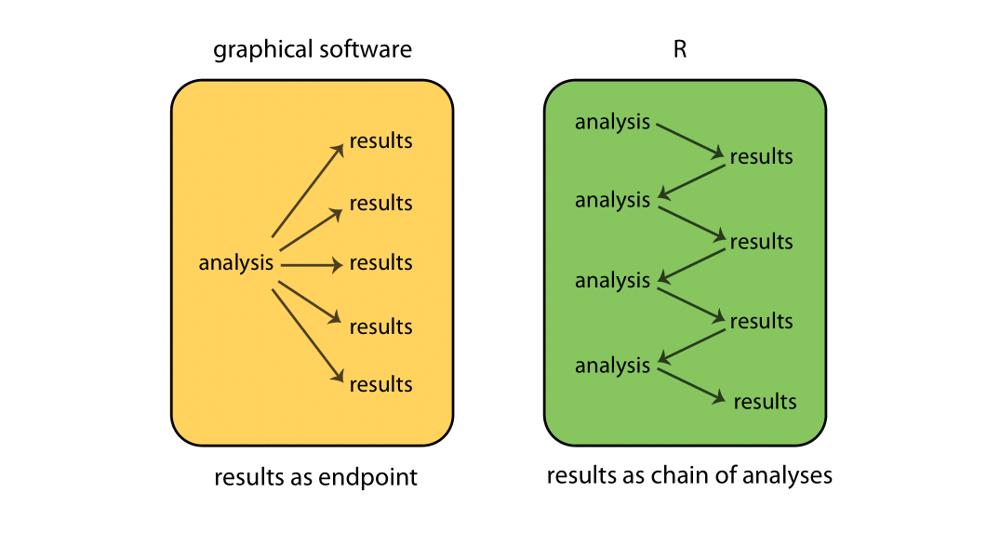
When R is running, variables, data, functions, results, etc., are stored in memory
on the computer in the form of objects that have a name. The user can
perform actions on these objects with operators (arithmetic, logical,
comparison, etc.) and functions (which are themselves objects). Here’s a
schematic of how this all fits together:

Interfaces
Text editors, IDEs, & Notebooks
There are different ways of interacting with R. The two main ways are through:
text editors or Integrated Development Environments (IDEs): Text editors and IDEs are not really separate categories; as you add features to a text editor it becomes more like an IDE. Some editors/IDEs are language-specific while others are general purpose — typically providing language support via plugins. For these workshops we will use RStudio; it is a good R-specific IDE with many useful features. Here are a few popular editors/IDEs that can be used with R:
Editor / IDE Features Ease of use Language support RStudio Excellent Easy R only Jupyter Lab Good Easy Excellent VS code Excellent Easy Very good Atom Good Moderate Good Vim Excellent Hard Good Emacs Excellent Hard Excellent Notebooks: Web-based applications that allow you to create and share documents that contain live code, equations, visualizations, and narrative text. A popular notebook is the open source Jupyter Notebook that has support for 40+ languages.
Source code & literate programming
There are also several different formats available for writing code in R. These basically boil down to a choice between:
Source code: the practice of writing code, and possibly comments, in a plain text document. In R this is done by writing code in a text file with a
.Ror.rextension. Writing source code has the great advantage of being simple. Source code is the format of choice if you intend to run your code as a complete script - for example, from the command line.Literate programming: the practice of embedding computer code in a natural language document. In R this is often done using Rmarkdown, which involves embedding R code in a document that is authored using Markdown and which has a
.Rmdextension. Markdown is easy to write and designed to be human-readable. Markdown is the format of choice if you intend to run your code interactively, by running small pieces of code and looking at each output. Many researchers use Markdown to write their journal papers, dissertations, and statistics/math class notes, since it is easy to convert into other formats later, such as HTML (for a webpage), MS Word, or PDF (via LaTeX).
Here are some resources for learning more about RStudio and RMarkdown:
Launch a session
Start RStudio and create a new project:
- On Windows click the start button and search for RStudio. On Mac RStudio will be in your applications folder.
- In RStudio go to
File -> New Project. - Choose
Existing Directoryand browse to the workshop materials directory on your desktop. - Choose
File -> Open Fileand select the file with the word “BLANK†in the name.
Exercise 0
The purpose of this exercise is to give you an opportunity to explore the interface provided by RStudio. You may not know how to do these things; that’s fine! This is an opportunity to figure it out.
Also keep in mind that we are living in a golden age of tab completion. If you don’t know the name of an R function, try guessing the first two or three letters and pressing TAB. If you guessed correctly the function you are looking for should appear in a pop up!
Try to get R to add 2 plus 2.
Try to calculate the square root of 10.
R includes extensive documentation, including a manual named “An introduction to Râ€. Use the RStudio help pane to locate this manual.
Click for Exercise 0 Solution
Syntax rules
- R is case sensitive
- R ignores white space
- Variable names should start with a letter (A-Z and a-z) and can include letters, digits (0-9), dots (.), and underscores (_)
- Comments can be inserted using a hash
#symbol - Functions must be written with parentheses, even
if there is nothing within them; for example:
ls()
Function calls
Functions perform actions — they take some input, called arguments and return some
output (i.e., a result). Here’s a schematic of how a function works:

The general form for calling R functions is
The arguments in a function can be objects (data, formulae, expressions, etc.), some of which could be defined by default in the function; these default values may be modified by the user by specifying options.
Arguments can be matched by name; unnamed arguments will be matched by position.
## [1] 2.3## [1] 2.3## [1] 1## [1] 2.3Assignment
Objects (data structures) can be assigned names and used in subsequent operations:
- The gets
<-operator (less than followed by a dash) is used to save objects - The name on the left gets the object on the right
## [1] 3.162278As mentioned in Syntax rules above, names should start with a letter, and contain only letters, numbers, underscores, and periods.
Asking for help
You can ask R for help using the
helpfunction, or the?shortcut.The
helpfunction can be used to look up the documentation for a function, or to look up the documentation to a package. We can learn how to use thestatspackage by reading its documentation like this:If you know the name of the package you want to use, then Googling “R package-name†will often get you to the documentation. Packages are hosted on several different repositories, including:
If you know the type of analysis you want to perform, you can Google “CRAN Task Viewsâ€, where there are curated lists of packages https://cran.r-project.org/web/views/. If you want to know which packages are popular, you can look at https://r-pkg.org.
Reading data
R has data reading functionality built-in – see e.g.,
help(read.table). However, faster and more robust tools are
available, and so to make things easier on ourselves we will use a
contributed package instead. This requires that we
learn a little bit about packages in R.
Installing & using packages
R is a modular environment that is extended by the use of packages. Packages are collections of functions or commands that are designed to perform specific tasks (e.g., fit a type of regression model). A large number of contributed packages are available (> 16,000).
Using an R package is a two step process:
Install the package onto your computer using the
install.packages()function. This only needs to be done the first time you use the package.Load the package into your R session’s search path using the
library()function. This needs to be done each time you use the package.
The tidyverse
While R’s built-in packages are powerful, in recent years there has
been a big surge in well-designed contributed packages for R. In
particular, a collection of R packages called
tidyverse have been
designed specifically for data science. All packages included in
tidyverse share an underlying design philosophy, grammar, and
data structures. This philosophy is rooted in the idea of “tidy dataâ€:

A typical workflow for using tidyverse packages looks like this:

You should have already installed the tidyverse and rmarkdown
packages onto your computer before the workshop
— see R Installation.
Now let’s load these packages into the search path of our R session.
Readers for common file types
To read data from a file, you have to know what kind of file
it is. The table below lists functions from the readr package, which
is part of tidyverse, that can import data from common plain-text formats.
| Data Type | Function |
|---|---|
| comma separated | read_csv() |
| tab separated | read_delim() |
| other delimited formats | read_table() |
| fixed width | read_fwf() |
Note You may notice that there exist similar functions
in one of the built-in packages in R called utils,
e.g., read.csv and read.delim. These are legacy functions that
tend to be slower and less robust than the readr functions. One way
to tell them apart is that the faster more robust versions use
underscores in their names (e.g., read_csv) while the older
functions use dots (e.g., read.csv). Our advice is to use the more
robust newer versions, i.e., the ones with underscores.
Baby names data
As an example project we will analyze the popularity of baby names in the US from 1960 through 2017. The data were retrieved from https://catalog.data.gov/dataset/baby-names-from-social-security-card-applications-national-level-data.
Here are the questions we will use R to answer:
- In which year did your name (or another name) occur most frequently by count?
- Which names have the highest popularity by proportion for each sex and year?
- How does the percentage of babies given one of the top 10 names of the year change over time?
Exercise 1
Reading the baby names data
Make sure you have installed the tidyverse suite of packages and attached them with library(tidyverse).
Open the
read_csv()help page to determine how to use it to read in data.Read the baby names data using the
read_csv()function and assign the result with the namebaby_names.BONUS (optional): Save the
baby_namesdata as a Stata data setbabynames.dtaand as an R data setbabynames.rds.
Click for Exercise 1 Solution
Open the
read_csv()help page to determine how to use it to read in data.Read the baby names data using the
read_csv()function and assign the result with the namebaby_names.BONUS (optional): Save the
baby_namesdata as a Stata data setbabynames.dtaand as an R data setbabynames.rds.
Manipulating data
GOAL: To learn about basic data manipulation used to clean datasets. In particular:
- Filtering data by choosing rows — using the
filter()function - Selecting data by choosing columns — using the
select()function - Arranging data by reordering rows — using the
arrange()function - Using the pipe
%>%operator to simplify sequential operations
In this section we will pull out specific names from the baby names data and examine changes in their popularity over time.
The baby_names object we created in the last exercise is a data.frame.
There are many other data structures in R, but for now we’ll focus on
working with data.frames. Think of a data.frame as a spreadsheet.
If you want to know more about R data structures, you can see a summary
in our R Data Wrangling workshop.
R has decent data manipulation tools built-in – see e.g.,
help(Extract). But, tidyverse packages often provide
more intuitive syntax for accomplishing the same task. In
particular, we will use the dplyr package from tidyverse
to filter, select, and arrange data, as well as create new variables.

Filter, select, & arrange
One way to find the year in which your name was the most popular
is to filter out just the rows corresponding to your name, and
then arrange (sort) by Count.
To demonstrate these techniques we’ll try to determine whether
“Alexâ€" or “Mark†was more popular in 1992. We start by filtering the
data so that we keep only rows where Year is equal to 1992 and Name is
either “Alex†or “Markâ€.
# Filter data, keeping "Alex" and "Mark" in year 1992, record in baby_names_alexmark
# Use logical operators to specify the filtering condition
baby_names_alexmark <- filter(baby_names,
Year == 1992 & (Name == "Alex" | Name == "Mark"))
print(baby_names_alexmark) # explicit printing## # A tibble: 4 x 4
## Name Sex Count Year
## <chr> <chr> <dbl> <dbl>
## 1 Alex Girls 366 1992
## 2 Mark Girls 20 1992
## 3 Mark Boys 8743 1992
## 4 Alex Boys 7348 1992## # A tibble: 4 x 4
## Name Sex Count Year
## <chr> <chr> <dbl> <dbl>
## 1 Alex Girls 366 1992
## 2 Mark Girls 20 1992
## 3 Mark Boys 8743 1992
## 4 Alex Boys 7348 1992Notice that we can combine conditions using & (AND)
and | (OR).
In this case it’s pretty easy to see that “Mark†is more popular, but to make it even easier we can arrange the data so that the most popular name is listed first.
## # A tibble: 4 x 4
## Name Sex Count Year
## <chr> <chr> <dbl> <dbl>
## 1 Mark Girls 20 1992
## 2 Alex Girls 366 1992
## 3 Alex Boys 7348 1992
## 4 Mark Boys 8743 1992## # A tibble: 4 x 4
## Name Sex Count Year
## <chr> <chr> <dbl> <dbl>
## 1 Mark Boys 8743 1992
## 2 Alex Boys 7348 1992
## 3 Alex Girls 366 1992
## 4 Mark Girls 20 1992We can also use the select() function to subset the data.frame
by columns. We can then assign the output to a new object. If we
would just like to glance at the first few lines we can use the
head() function:
# Select columns Name and Count and assign to a new object "baby_names_subset"
baby_names_subset <- select(baby_names, Name, Count)
# Use head() to glance at the first few lines
head(baby_names_subset)## # A tibble: 6 x 2
## Name Count
## <chr> <dbl>
## 1 Mary 51474
## 2 Susan 39200
## 3 Linda 37314
## 4 Karen 36376
## 5 Donna 34133
## 6 Lisa 33702## # A tibble: 6 x 2
## Name Count
## <chr> <dbl>
## 1 Mary 51474
## 2 Susan 39200
## 3 Linda 37314
## 4 Karen 36376
## 5 Donna 34133
## 6 Lisa 33702Logical & relational operators
In a previous example we used == to filter rows.
Here’s a table of other commonly used relational operators:
| Operator | Meaning |
|---|---|
== |
equal to |
!= |
not equal to |
> |
greater than |
>= |
greater than or equal to |
< |
less than |
<= |
less than or equal to |
%in% |
contained in |
These relational operators may be combined with logical operators, such as & (and) or | (or).
For example, we can create a vector (a container for a collection of values) and demonstrate
some ways to combine operators:
## [1] 1 2 3 4 5 6 7 8 9 10## [1] FALSE FALSE FALSE FALSE FALSE FALSE FALSE TRUE TRUE TRUE## [1] TRUE TRUE FALSE FALSE FALSE FALSE FALSE TRUE TRUE TRUEIf we want to match multiple elements from two vectors we can use the %in% operator:
## [1] TRUE FALSE FALSE FALSE TRUE FALSE FALSE FALSE FALSE TRUENotice that logical and relational operators return logical vectors of TRUE and FALSE values.
The logical vectors returned by these operators can themselves be operated on by functions:
## [1] FALSE FALSE FALSE FALSE FALSE FALSE FALSE TRUE TRUE TRUE## [1] 3Exercise 2.1
Peak popularity of your name
In this exercise you will discover the year your name reached its maximum popularity.
Read in the “babyNames.csv†file if you have not already done so,
assigning the result to baby_names. Make sure you have installed
the tidyverse suite of packages and attached them with library(tidyverse).
Use
filterto extract data for your name (or another name of your choice).Arrange the data you produced in step 1 above by
Count. In which year was the name most popular?BONUS (optional): Filter the data to extract only the row containing the most popular boys name in 1999.
Click for Exercise 2.1 Solution
Use
filterto extract data for your name (or another name of your choice).Arrange the data you produced in step 1 above by
Count. In which year was the name most popular?## # A tibble: 97 x 4 ## Name Sex Count Year ## <chr> <chr> <dbl> <dbl> ## 1 George Boys 14063 1960 ## 2 George Boys 13638 1961 ## 3 George Boys 12553 1962 ## 4 George Boys 12084 1963 ## 5 George Boys 11793 1964 ## 6 George Boys 10683 1965 ## 7 George Boys 9942 1966 ## 8 George Boys 9702 1967 ## 9 George Boys 9388 1968 ## 10 George Boys 9203 1969 ## # … with 87 more rowsBONUS (optional): Filter the data to extract only the row containing the most popular boys name in 1999.
## # A tibble: 1 x 4 ## Name Sex Count Year ## <chr> <chr> <dbl> <dbl> ## 1 Jacob Boys 35361 1999
Pipe operator
There is one very special operator in R called a pipe operator that
looks like this: %>%. It allows us to “chain†several function calls and,
as each function returns an object, feed it into the next call in a single
statement, without needing extra variables to store the intermediate
results. The point of the pipe is to help you write code in a way that is
easier to read and understand as we will see below.

There is no need to load any additional packages as the operator is made
available via the magrittr package installed as part of tidyverse. Let’s
rewrite the sequence of commands to output ordered counts for names
“Alex†or “Markâ€.
# Filter data keeping rows for "Alex" and "Mark" during year 1992, record in baby_names_alexmark
# Arrange the result in a descending order by Count
# unpiped version
baby_names_alexmark <- filter(baby_names, Year == 1992 & (Name == "Alex" | Name == "Mark"))
arrange(baby_names_alexmark, desc(Count))## # A tibble: 4 x 4
## Name Sex Count Year
## <chr> <chr> <dbl> <dbl>
## 1 Mark Boys 8743 1992
## 2 Alex Boys 7348 1992
## 3 Alex Girls 366 1992
## 4 Mark Girls 20 1992# piped version
baby_names %>%
filter(Year == 1992 & (Name == "Alex" | Name == "Mark")) %>%
arrange(desc(Count))## # A tibble: 4 x 4
## Name Sex Count Year
## <chr> <chr> <dbl> <dbl>
## 1 Mark Boys 8743 1992
## 2 Alex Boys 7348 1992
## 3 Alex Girls 366 1992
## 4 Mark Girls 20 1992Hint: try pronouncing “then†whenever you see %>%. Using pseudocode,
we can see what the pipe is doing:
# unpiped version
filter(dataset, condition)
# piped version
dataset %>% filter(condition)
# what the pipe is doing
output_of_thing_on_left %>% becomes_input_of_thing_on_rightAdvantages of using the pipe:
- We can avoid creating intermediate variables, such as
baby_names_alexmark - Less to type
- Easier to read and follow the logic (especially avoiding using nested functions)
Exercise 2.2
Rewrite the solution to Exercise 2.1 using pipes. Remember that we were looking
for the year your name reached its maximum popularity. For that, we filtered
the data and then arranged by Count.
# Use filter to extract data for your name (or another name of your choice)
# Arrange the data by CountClick for Exercise 2.2 Solution
Rewrite the solution to Exercise 2.1 using pipes.
# Use filter to extract data for your name (or another name of your choice)
# Arrange the data by Count
baby_names %>%
filter(Name == "George") %>%
arrange(desc(Count))## # A tibble: 97 x 4
## Name Sex Count Year
## <chr> <chr> <dbl> <dbl>
## 1 George Boys 14063 1960
## 2 George Boys 13638 1961
## 3 George Boys 12553 1962
## 4 George Boys 12084 1963
## 5 George Boys 11793 1964
## 6 George Boys 10683 1965
## 7 George Boys 9942 1966
## 8 George Boys 9702 1967
## 9 George Boys 9388 1968
## 10 George Boys 9203 1969
## # … with 87 more rowsPlotting data
GOAL: Plot baby name trends over time – using the qplot() function
It can be difficult to spot trends when looking at summary tables. Plotting the data makes it easier to identify interesting patterns.
R has decent plotting tools built-in – see e.g., help(plot).
However, again, we will make use of a contributed
package from tidyverse called ggplot2.
For quick and simple plots we can use the qplot() function from ggplot2. For example,
we can plot the number of babies given the name “Diana†over time like this:
# Filter data keeping rows for name "Diana" and assign to a new object called baby_names_diana
baby_names_diana <- filter(baby_names, Name == "Diana")# Use qplot() function to plot Counts (y) by Year (x)
qplot(x = Year, y = Count,
data = baby_names_diana)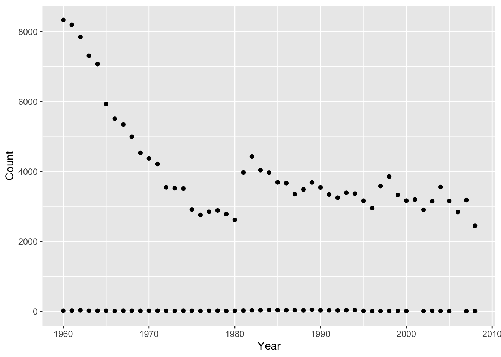
Interestingly, there are usually some gender-atypical names, even for very strongly
gendered names like “Dianaâ€. Splitting these trends out by Sex is very easy:
# Use qplot() function to plot Counts (y) by Year (x). Split trends by Sex using color.
qplot(x = Year, y = Count, color = Sex,
data = baby_names_diana)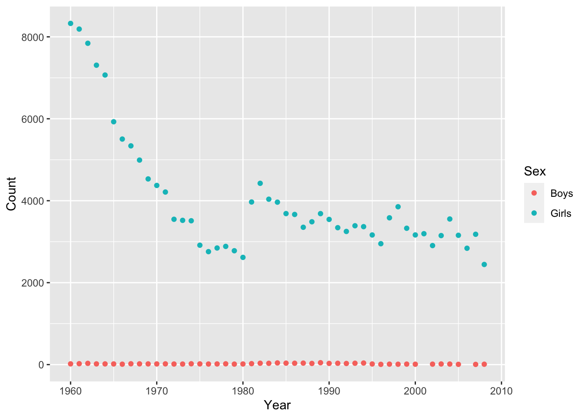
Exercise 3
Plot peak popularity of your name
Use
filterto extract data for your name (same as previous exercise)Plot the data you produced in step 1 above, with
Yearon the x-axis andCounton the y-axis.Adjust the plot so that is shows boys and girls in different colors.
BONUS (Optional): Adjust the plot to use lines instead of points.
Click for Exercise 3 Solution
Use
filter()to extract data for your name (same as previous exercise).Plot the data you produced in step 1 above, with
Yearon the x-axis andCounton the y-axis.
Adjust the plot so that is shows boys and girls in different colors.
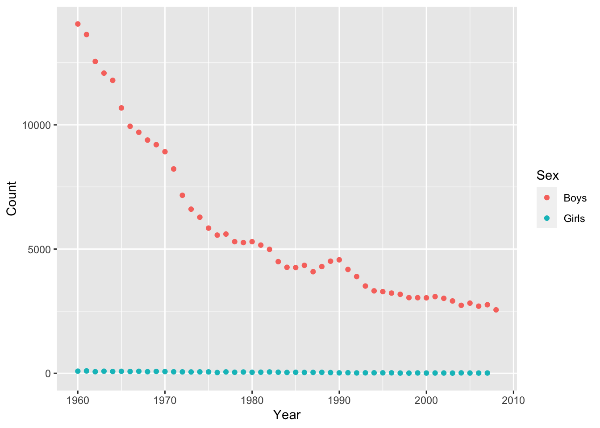
BONUS (Optional): Adjust the plot to use lines instead of points.
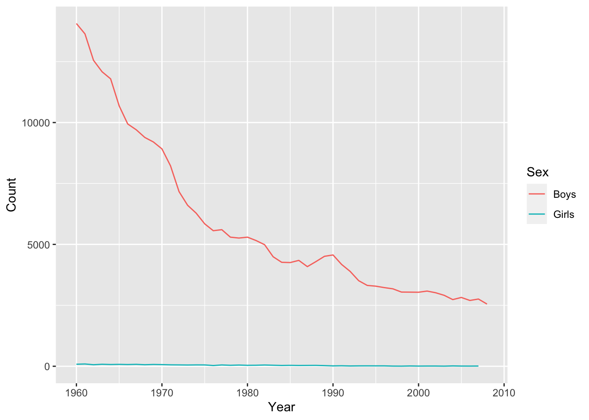
Creating variables
GOAL: To learn how to create new variables with and without grouped data. In particular:
- Creating new variables (columns) — using the
mutate()function - Creating new variables within groups — by combining the
mutate()andgroup_by()functions - Recode existing variables — by combining the
mutate()andcase_when()functions
We want to use these skills to find out which names have been the most popular.
Create or modify columns
So far we’ve used Count as a measure of popularity. A better
approach is to use proportion to avoid confounding
popularity with the number of babies born in a given year.
The mutate() function makes it easy to add or modify the columns
of a data.frame. For example, we can use it to rescale the count
of each name in each year:
# Use piping to add a new column to the data, called Count_1k, that rescales counts to thousands
baby_names <- baby_names %>% mutate(Count_1k = Count/1000)
head(baby_names) ## # A tibble: 6 x 5
## Name Sex Count Year Count_1k
## <chr> <chr> <dbl> <dbl> <dbl>
## 1 Mary Girls 51474 1960 51.5
## 2 Susan Girls 39200 1960 39.2
## 3 Linda Girls 37314 1960 37.3
## 4 Karen Girls 36376 1960 36.4
## 5 Donna Girls 34133 1960 34.1
## 6 Lisa Girls 33702 1960 33.7Operating by group
Because of the nested nature of our data, we want to compute proportion
or rank within each Sex by Year group. The dplyr
package has a group_by() function that makes this relatively
straightforward. Here’s the logic behind this process:
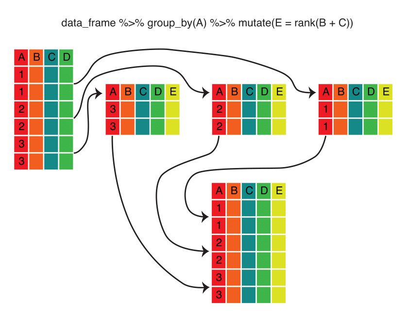
Note that the group_by() function converts a data frame into a
grouped data frame — that is, a data frame with metadata identifying
the groups. The data remain grouped until you change the groups by
running group_by() again or remove the grouping metadata using
ungroup().
Here’s the code that implements the calculation:
# Group baby_names by Year and Sex and rank Count_1k within each group (calling the resulting new column "Rank").
# Remember to ungroup at the end!
baby_names <-
baby_names %>%
group_by(Year, Sex) %>%
mutate(Rank = rank(Count_1k)) %>%
ungroup()
head(baby_names)## # A tibble: 6 x 6
## Name Sex Count Year Count_1k Rank
## <chr> <chr> <dbl> <dbl> <dbl> <dbl>
## 1 Mary Girls 51474 1960 51.5 7331
## 2 Susan Girls 39200 1960 39.2 7330
## 3 Linda Girls 37314 1960 37.3 7329
## 4 Karen Girls 36376 1960 36.4 7328
## 5 Donna Girls 34133 1960 34.1 7327
## 6 Lisa Girls 33702 1960 33.7 7326Recoding variables
It’s often necessary to create a new variable that is a recoded version of an existing variable.
For example, we might want to take our Count_1k variable and create a new variable that divides
it into low, medium, and high categories. To do this, we can use the case_when()
function within the mutate() function:
# Use case_when() to recode the newly created Rank column into low (<=10), high (>40), and medium (all others).
# Call the resulting column "Count_levels".
baby_names <-
baby_names %>%
mutate(Count_levels = case_when(
Count_1k <= 10 ~ "low",
Count_1k > 10 & Count_1k <= 40 ~ "medium",
Count_1k > 40 ~ "high"
))
head(baby_names) ## # A tibble: 6 x 7
## Name Sex Count Year Count_1k Rank Count_levels
## <chr> <chr> <dbl> <dbl> <dbl> <dbl> <chr>
## 1 Mary Girls 51474 1960 51.5 7331 high
## 2 Susan Girls 39200 1960 39.2 7330 medium
## 3 Linda Girls 37314 1960 37.3 7329 medium
## 4 Karen Girls 36376 1960 36.4 7328 medium
## 5 Donna Girls 34133 1960 34.1 7327 medium
## 6 Lisa Girls 33702 1960 33.7 7326 mediumExercise 4
Most popular names
In this exercise your goal is to identify the most popular names for each year.
Use
mutate()andgroup_by()to create a column namedProportionwhereProportion = Count/sum(Count)for eachYear X Sexgroup. Use pipes wherever it makes sense.Use
mutate()andgroup_by()to create a column namedRankwhereRank = rank(desc(Count))for eachYear X Sexgroup.Filter the baby names data to display only the most popular name for each
Year X Sexgroup. Keep only the columns:Year,Name,Sex, andProportion.Plot the data produced in step 3, putting
Yearon the x-axis andProportionon the y-axis. How has the proportion of babies given the most popular name changed over time?BONUS (optional): Which names are the most popular for both boys and girls?
Click for Exercise 4 Solution
Use
mutate()andgroup_by()to create a column namedProportionwhereProportion = Count/sum(Count)for eachYear X Sexgroup.baby_names <- baby_names %>% group_by(Year, Sex) %>% mutate(Proportion = Count/sum(Count)) %>% ungroup() head(baby_names)## # A tibble: 6 x 8 ## Name Sex Count Year Count_1k Rank Count_levels Proportion ## <chr> <chr> <dbl> <dbl> <dbl> <dbl> <chr> <dbl> ## 1 Mary Girls 51474 1960 51.5 7331 high 0.0255 ## 2 Susan Girls 39200 1960 39.2 7330 medium 0.0194 ## 3 Linda Girls 37314 1960 37.3 7329 medium 0.0185 ## 4 Karen Girls 36376 1960 36.4 7328 medium 0.0180 ## 5 Donna Girls 34133 1960 34.1 7327 medium 0.0169 ## 6 Lisa Girls 33702 1960 33.7 7326 medium 0.0167Use
mutate()andgroup_by()to create a column namedRankwhereRank = rank(desc(Count))for eachYear X Sexgroup.baby_names <- baby_names %>% group_by(Year, Sex) %>% mutate(Rank = rank(desc(Count))) %>% ungroup() head(baby_names)## # A tibble: 6 x 8 ## Name Sex Count Year Count_1k Rank Count_levels Proportion ## <chr> <chr> <dbl> <dbl> <dbl> <dbl> <chr> <dbl> ## 1 Mary Girls 51474 1960 51.5 1 high 0.0255 ## 2 Susan Girls 39200 1960 39.2 2 medium 0.0194 ## 3 Linda Girls 37314 1960 37.3 3 medium 0.0185 ## 4 Karen Girls 36376 1960 36.4 4 medium 0.0180 ## 5 Donna Girls 34133 1960 34.1 5 medium 0.0169 ## 6 Lisa Girls 33702 1960 33.7 6 medium 0.0167Filter the baby names data to display only the most popular name for each
Year X Sexgroup.## # A tibble: 6 x 4 ## Year Name Sex Proportion ## <dbl> <chr> <chr> <dbl> ## 1 1960 Mary Girls 0.0255 ## 2 1960 David Boys 0.0403 ## 3 1961 Mary Girls 0.0236 ## 4 1961 Michael Boys 0.0409 ## 5 1962 Lisa Girls 0.0234 ## 6 1962 Michael Boys 0.0411Plot the data produced in step 3, putting
Yearon the x-axis andProportionon the y-axis. How has the proportion of babies given the most popular name changed over time?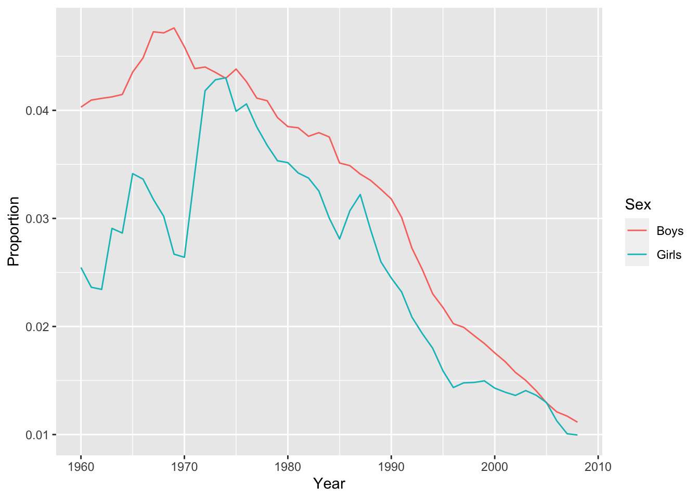
BONUS (optional): Which names are the most popular for both boys and girls?
girls_and_boys <- inner_join(filter(baby_names, Sex == "Boys"), filter(baby_names, Sex == "Girls"), by = c("Year", "Name")) girls_and_boys <- mutate(girls_and_boys, Product = Count.x * Count.y, Rank = rank(desc(Product))) filter(girls_and_boys, Rank == 1)## # A tibble: 1 x 16 ## Name Sex.x Count.x Year Count_1k.x Rank.x Count_levels.x Proportion.x Sex.y ## <chr> <chr> <dbl> <dbl> <dbl> <dbl> <chr> <dbl> <chr> ## 1 Tayl… Boys 7688 1993 7.69 51 low 0.00392 Girls ## # … with 7 more variables: Count.y <dbl>, Count_1k.y <dbl>, Rank.y <dbl>, ## # Count_levels.y <chr>, Proportion.y <dbl>, Product <dbl>, Rank <dbl>
Aggregating variables
GOAL: To learn how to aggregate data to create summaries with and without grouped data. In particular:
- Collapsing data into summaries — using the
summarize()function - Creating summaries within groups — by combining the
summarize()andgroup_by()functions
You may have noticed that the percentage of babies given the most popular name of the year appears to have decreased over time. We can compute a more robust measure of the popularity of the most popular names by calculating the number of babies given one of the top 10 girl or boy names of the year.
To compute this measure we need to operate within groups, as
we did using mutate() above, but this time we need to collapse each
group into a single summary statistic. We can achieve this using the
summarize() function.
First, let’s see how this function works without grouping. The following code outputs the total number of girls and boys in the data:
# Use summarize() to output the total number of boys and girls in the sample
baby_names %>%
summarize(Girls_n = sum(Sex=="Girls"),
Boys_n = sum(Sex=="Boys"))## # A tibble: 1 x 2
## Girls_n Boys_n
## <int> <int>
## 1 641084 407491Next, using group_by() and summarize() together, we can calculate the
number of babies born each year. Here’s the logic behind this process:
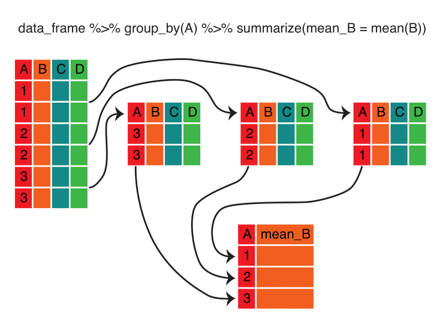
Note that, unlike with the mutate() function, the summarize() function returns a data frame
with fewer rows than the original, because of aggregation.
Here’s the code that implements the calculation:
# Group baby_names by Year and calculate the sum of Count (record in a column called Total).
# Assign the result to bn_by_year and remember to ungroup!
bn_by_year <-
baby_names %>%
group_by(Year) %>%
summarize(Total = sum(Count)) %>%
ungroup()
head(bn_by_year)## # A tibble: 6 x 2
## Year Total
## <dbl> <dbl>
## 1 1960 4154377
## 2 1961 4140244
## 3 1962 4035234
## 4 1963 3958791
## 5 1964 3887800
## 6 1965 3626029Exercise 5
Popularity of the most popular names
In this exercise we will plot trends in the proportion of boys and girls given one of the 10 most popular names each year.
Filter the
baby_namesdata, retaining only the 10 most popular girl and boy names for each year.Summarize the data produced in step one to calculate the total Proportion of boys and girls given one of the top 10 names each year.
Plot the data produced in step 2, with year on the x-axis and total proportion on the y axis. Color by
Sexand notice the trend.
Click for Exercise 5 Solution
Filter the baby_names data, retaining only the 10 most popular girl and boy names for each year.
most_popular <- baby_names %>% group_by(Year, Sex) %>% filter(Rank <= 10) head(most_popular, n = 10)## # A tibble: 10 x 8 ## # Groups: Year, Sex [1] ## Name Sex Count Year Count_1k Rank Count_levels Proportion ## <chr> <chr> <dbl> <dbl> <dbl> <dbl> <chr> <dbl> ## 1 Mary Girls 51474 1960 51.5 1 high 0.0255 ## 2 Susan Girls 39200 1960 39.2 2 medium 0.0194 ## 3 Linda Girls 37314 1960 37.3 3 medium 0.0185 ## 4 Karen Girls 36376 1960 36.4 4 medium 0.0180 ## 5 Donna Girls 34133 1960 34.1 5 medium 0.0169 ## 6 Lisa Girls 33702 1960 33.7 6 medium 0.0167 ## 7 Patricia Girls 32102 1960 32.1 7 medium 0.0159 ## 8 Debra Girls 26737 1960 26.7 8 medium 0.0132 ## 9 Cynthia Girls 26725 1960 26.7 9 medium 0.0132 ## 10 Deborah Girls 25264 1960 25.3 10 medium 0.0125Summarize the data produced in step one to calculate the total Proportion of boys and girls given one of the top 10 names each year.
Plot the data produced in step 2, with year on the x-axis and total proportion on the y axis. Color by
Sexand notice the trend.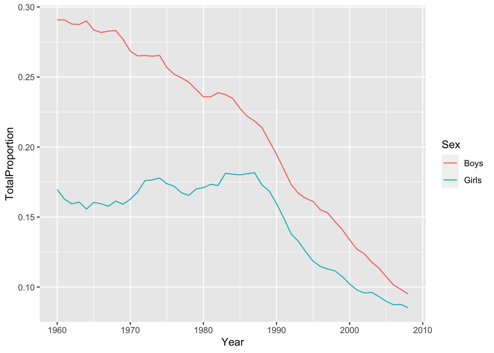
Saving work
GOAL: To learn how to save objects, data, and scripts for later use.
Now that we have made some changes to our data set, we might want to save those changes to a file.
Saving individual datasets
You might find functions write_csv() and write_rds() from package
readr handy!
Wrap-up
Feedback
These workshops are a work-in-progress, please provide any feedback to: help@iq.harvard.edu
Resources
- IQSS
- Workshops: https://www.iq.harvard.edu/data-science-services/workshop-materials
- Data Science Services: https://www.iq.harvard.edu/data-science-services
- Research Computing Environment: https://iqss.github.io/dss-rce/
- HBS
- Research Computing Services workshops: https://training.rcs.hbs.org/workshops
- Other HBS RCS resources: https://training.rcs.hbs.org/workshop-materials
- RCS consulting email: mailto:research@hbs.edu
- Software (all free!):
- R and R package download: http://cran.r-project.org
- RStudio download: http://rstudio.org
- ESS (Emacs R package): http://ess.r-project.org/
- Cheatsheets
- Online tutorials
- Getting help:
- Documentation and tutorials: http://cran.r-project.org/other-docs.html
- Recommended R packages by topic: http://cran.r-project.org/web/views/
- Mailing list: https://stat.ethz.ch/mailman/listinfo/r-help
- StackOverflow: http://stackoverflow.com/questions/tagged/r
- R-Bloggers: https://www.r-bloggers.com/
- Coming from …
R Regression Models
Topics
- Formula interface for model specification
- Function methods for extracting quantities of interest from models
- Contrasts to test specific hypotheses
- Model comparisons
- Predicted marginal effects
Setup
Software and Materials
Follow the R Installation instructions and ensure that you can successfully start RStudio.
Class Structure
Informal - Ask questions at any time. Really!
Collaboration is encouraged - please spend a minute introducing yourself to your neighbors!
Prerequisites
This is an intermediate R course:
- Assumes working knowledge of R
- Relatively fast-paced
- This is not a statistics course! We will teach you how to fit models in R, but we assume you know the theory behind the models.
Goals
We will learn about the R modeling ecosystem by fitting a variety of statistical models to different datasets. In particular, our goals are to learn about:
- Modeling workflow
- Visualizing and summarizing data before modeling
- Modeling continuous outcomes
- Modeling binary outcomes
- Modeling clustered data
We will not spend much time interpreting the models we fit, since this is not a statistics workshop. But, we will walk you through how model results are organized and orientate you to where you can find typical quantities of interest.
Launch an R session
Start RStudio and create a new project:
- On Windows click the start button and search for RStudio. On Mac RStudio will be in your applications folder.
- In Rstudio go to
File -> New Project. - Choose
Existing Directoryand browse to the workshop materials directory on your desktop. - Choose
File -> Open Fileand select the file with the word “BLANK†in the name.
Packages
You should have already installed the tidyverse and rmarkdown
packages onto your computer before the workshop
— see R Installation.
Now let’s load these packages into the search path of our R session.
Finally, lets install some packages that will help with modeling:
Modeling workflow
Before we delve into the details of how to fit models in R, it’s worth taking a step back and thinking more broadly about the components of the modeling process. These can roughly be divided into 3 stages:
- Pre-estimation
- Estimation
- Post-estimaton
At each stage, the goal is to complete a different task (e.g., to clean data, fit a model, test a hypothesis), but the process is sequential — we move through the stages in order (though often many times in one project!)

Throughout this workshop we will go through these stages several times as we fit different types of model.
R modeling ecosystem
There are literally hundreds of R packages that provide model fitting functionality.
We’re going to focus on just two during this workshop — stats, from Base R, and
lme4. It’s a good idea to look at CRAN Task Views
when trying to find a modeling package for your needs, as they provide an extensive
curated list. But, here’s a more digestable table showing some of the most popular
packages for particular types of model.
| Models | Packages |
|---|---|
| Generalized linear | stats, biglm, MASS, robustbase |
| Mixed effects | lme4, nlme, glmmTMB, MASS |
| Econometric | pglm, VGAM, pscl, survival |
| Bayesian | brms, blme, MCMCglmm, rstan |
| Machine learning | mlr, caret, h2o, tensorflow |
Before fitting a model
GOAL: To learn about the data by creating summaries and visualizations.
One important part of the pre-estimation stage of model fitting, is gaining an understanding of the data we wish to model by creating plots and summaries. Let’s do this now.
Load the data
List the data files we’re going to work with:
## [1] "Exam.rds" "NatHealth2008MI" "NatHealth2011.rds"
## [4] "states.rds"We’re going to use the states data first, which originally appeared in Statistics with Stata by Lawrence C. Hamilton.
# read the states data
states_data <- read_rds("dataSets/states.rds")
# look at the last few rows
tail(states_data)## state region pop area density metro waste energy miles toxic
## 46 Vermont N. East 563000 9249 60.87 23.4 0.69 232 10.4 1.81
## 47 Virginia South 6187000 39598 156.25 72.5 1.45 306 9.7 12.87
## 48 Washington West 4867000 66582 73.10 81.7 1.05 389 9.2 8.51
## 49 West Virginia South 1793000 24087 74.44 36.4 0.95 415 8.6 21.30
## green house senate csat vsat msat percent expense income high college
## 46 15.17 85 94 890 424 466 68 6738 34.717 80.8 24.3
## 47 18.72 33 54 890 424 466 60 4836 38.838 75.2 24.5
## 48 16.51 52 64 913 433 480 49 5000 36.338 83.8 22.9
## 49 51.14 48 57 926 441 485 17 4911 24.233 66.0 12.3
## [ reached 'max' / getOption("max.print") -- omitted 2 rows ]| Variable | Description |
|---|---|
| csat | Mean composite SAT score |
| expense | Per pupil expenditures |
| percent | % HS graduates taking SAT |
| income | Median household income, $1,000 |
| region | Geographic region: West, N. East, South, Midwest |
| house | House ’91 environ. voting, % |
| senate | Senate ’91 environ. voting, % |
| energy | Per capita energy consumed, Btu |
| metro | Metropolitan area population, % |
| waste | Per capita solid waste, tons |
Examine the data
Start by examining the data to check for problems.
# summary of expense and csat columns, all rows
sts_ex_sat <-
states_data %>%
select(expense, csat)
summary(sts_ex_sat)## expense csat
## Min. :2960 Min. : 832.0
## 1st Qu.:4352 1st Qu.: 888.0
## Median :5000 Median : 926.0
## Mean :5236 Mean : 944.1
## 3rd Qu.:5794 3rd Qu.: 997.0
## Max. :9259 Max. :1093.0## expense csat
## expense 1.0000000 -0.4662978
## csat -0.4662978 1.0000000Models with continuous outcomes
GOAL: To learn about the R modeling ecosystem by fitting ordinary least squares (OLS) models. In particular:
- Formula representation of a model specification
- Model classes
- Function methods
- Model comparison
Once the data have been inspected and cleaned, we can start estimating models.
The simplest models (but those with the most assumptions) are those for continuous and unbounded outcomes.
Typically, for these outcomes, we’d use a model estimated using Ordinary Least Lquares (OLS),
which in R can be fit with the lm() (linear model) function.
To fit a model in R, we first have to convert our theoretical model into
a formula — a symbolic representation of the model in R syntax:
For example, the following theoretical model predicts SAT scores based on per-pupil expenditures:
\[ SATscores_i = \beta_{0}1 + \beta_1expenditures_i + \epsilon_i \]
We can use lm() to fit this model:
# fit our regression model
sat_mod <- lm(csat ~ 1 + expense, # regression formula
data = states_data) # data
# look at the basic printed output
sat_mod##
## Call:
## lm(formula = csat ~ 1 + expense, data = states_data)
##
## Coefficients:
## (Intercept) expense
## 1060.73244 -0.02228 # get more informative summary information
# about coefficients and goodness-of-fit
summary(sat_mod)##
## Call:
## lm(formula = csat ~ 1 + expense, data = states_data)
##
## Residuals:
## Min 1Q Median 3Q Max
## -131.811 -38.085 5.607 37.852 136.495
##
## Coefficients:
## Estimate Std. Error t value Pr(>|t|)
## (Intercept) 1.061e+03 3.270e+01 32.44 < 2e-16 ***
## expense -2.228e-02 6.037e-03 -3.69 0.000563 ***
## ---
## Signif. codes: 0 '***' 0.001 '**' 0.01 '*' 0.05 '.' 0.1 ' ' 1
##
## Residual standard error: 59.81 on 49 degrees of freedom
## Multiple R-squared: 0.2174, Adjusted R-squared: 0.2015
## F-statistic: 13.61 on 1 and 49 DF, p-value: 0.0005631## Estimate Std. Error t value Pr(>|t|)
## (Intercept) 1060.73244395 32.700896736 32.437412 8.878411e-35
## expense -0.02227565 0.006037115 -3.689783 5.630902e-04Why is the association between expense & SAT scores negative?
Many people find it surprising that the per-capita expenditure on students is negatively related to SAT scores. The beauty of multiple regression is that we can try to pull these apart. What would the association between expense and SAT scores be if there were no difference among the states in the percentage of students taking the SAT?
##
## Call:
## lm(formula = csat ~ 1 + expense + percent, data = states_data)
##
## Residuals:
## Min 1Q Median 3Q Max
## -62.921 -24.318 1.741 15.502 75.623
##
## Coefficients:
## Estimate Std. Error t value Pr(>|t|)
## (Intercept) 989.807403 18.395770 53.806 < 2e-16 ***
## expense 0.008604 0.004204 2.046 0.0462 *
## percent -2.537700 0.224912 -11.283 4.21e-15 ***
## ---
## Signif. codes: 0 '***' 0.001 '**' 0.01 '*' 0.05 '.' 0.1 ' ' 1
##
## Residual standard error: 31.62 on 48 degrees of freedom
## Multiple R-squared: 0.7857, Adjusted R-squared: 0.7768
## F-statistic: 88.01 on 2 and 48 DF, p-value: < 2.2e-16The lm class & methods
Okay, we fitted our model. Now what? Typically, the main goal in the post-estimation stage of analysis is to extract quantities of interest from our fitted model. These quantities could be things like:
- Testing whether one group is different on average from another group
- Generating average response values from the model for interesting combinations of predictor values
- Calculating interval estimates for particular coefficients
But before we can do any of that, we need to know more about what a fitted model actually is, what information it contains, and how we can extract from it information that we want to report.
Let’s start by examining the model object:
## [1] "lm"## List of 12
## $ coefficients : Named num [1:2] 1060.7324 -0.0223
## ..- attr(*, "names")= chr [1:2] "(Intercept)" "expense"
## $ residuals : Named num [1:51] 11.1 44.8 -32.7 26.7 -63.7 ...
## ..- attr(*, "names")= chr [1:51] "1" "2" "3" "4" ...
## $ effects : Named num [1:51] -6742.2 220.7 -31.7 29.7 -63.2 ...
## ..- attr(*, "names")= chr [1:51] "(Intercept)" "expense" "" "" ...
## $ rank : int 2
## $ fitted.values: Named num [1:51] 980 875 965 978 961 ...
## ..- attr(*, "names")= chr [1:51] "1" "2" "3" "4" ...
## $ assign : int [1:2] 0 1
## $ qr :List of 5
## ..$ qr : num [1:51, 1:2] -7.14 0.14 0.14 0.14 0.14 ...
## .. ..- attr(*, "dimnames")=List of 2
## .. .. ..$ : chr [1:51] "1" "2" "3" "4" ...
## .. .. ..$ : chr [1:2] "(Intercept)" "expense"
## .. ..- attr(*, "assign")= int [1:2] 0 1
## ..$ qraux: num [1:2] 1.14 1.33
## ..$ pivot: int [1:2] 1 2
## ..$ tol : num 1e-07
## ..$ rank : int 2
## ..- attr(*, "class")= chr "qr"
## $ df.residual : int 49
## $ xlevels : Named list()
## $ call : language lm(formula = csat ~ 1 + expense, data = states_data)
## $ terms :Classes 'terms', 'formula' language csat ~ 1 + expense
## .. ..- attr(*, "variables")= language list(csat, expense)
## .. ..- attr(*, "factors")= int [1:2, 1] 0 1
## .. .. ..- attr(*, "dimnames")=List of 2
## .. .. .. ..$ : chr [1:2] "csat" "expense"
## .. .. .. ..$ : chr "expense"
## .. ..- attr(*, "term.labels")= chr "expense"
## .. ..- attr(*, "order")= int 1
## .. ..- attr(*, "intercept")= int 1
## .. ..- attr(*, "response")= int 1
## .. ..- attr(*, ".Environment")=<environment: R_GlobalEnv>
## .. ..- attr(*, "predvars")= language list(csat, expense)
## .. ..- attr(*, "dataClasses")= Named chr [1:2] "numeric" "numeric"
## .. .. ..- attr(*, "names")= chr [1:2] "csat" "expense"
## $ model :'data.frame': 51 obs. of 2 variables:
## ..$ csat : int [1:51] 991 920 932 1005 897 959 897 892 840 882 ...
## ..$ expense: int [1:51] 3627 8330 4309 3700 4491 5064 7602 5865 9259 5276 ...
## ..- attr(*, "terms")=Classes 'terms', 'formula' language csat ~ 1 + expense
## .. .. ..- attr(*, "variables")= language list(csat, expense)
## .. .. ..- attr(*, "factors")= int [1:2, 1] 0 1
## .. .. .. ..- attr(*, "dimnames")=List of 2
## .. .. .. .. ..$ : chr [1:2] "csat" "expense"
## .. .. .. .. ..$ : chr "expense"
## .. .. ..- attr(*, "term.labels")= chr "expense"
## .. .. ..- attr(*, "order")= int 1
## .. .. ..- attr(*, "intercept")= int 1
## .. .. ..- attr(*, "response")= int 1
## .. .. ..- attr(*, ".Environment")=<environment: R_GlobalEnv>
## .. .. ..- attr(*, "predvars")= language list(csat, expense)
## .. .. ..- attr(*, "dataClasses")= Named chr [1:2] "numeric" "numeric"
## .. .. .. ..- attr(*, "names")= chr [1:2] "csat" "expense"
## - attr(*, "class")= chr "lm"## [1] "coefficients" "residuals" "effects" "rank"
## [5] "fitted.values" "assign" "qr" "df.residual"
## [9] "xlevels" "call" "terms" "model"We can list all the functions that extract particular quantities of interest (called extractor functions) by using the methods() function with the class argument set to the class of the model object:
## [1] add1 alias anova case.names coerce
## [6] confint cooks.distance deviance dfbeta dfbetas
## [11] drop1 dummy.coef Effect effects emm_basis
## [16] extractAIC family formula fortify hatvalues
## [21] influence initialize kappa labels logLik
## [26] model.frame model.matrix nobs plot predict
## [31] print proj qqnorm qr recover_data
## [36] residuals rstandard rstudent show simulate
## [41] slotsFromS3 summary variable.names vcov
## see '?methods' for accessing help and source codeWe can also use function methods to get more information about the fit:
##
## Call:
## lm(formula = csat ~ 1 + expense, data = states_data)
##
## Residuals:
## Min 1Q Median 3Q Max
## -131.811 -38.085 5.607 37.852 136.495
##
## Coefficients:
## Estimate Std. Error t value Pr(>|t|)
## (Intercept) 1.061e+03 3.270e+01 32.44 < 2e-16 ***
## expense -2.228e-02 6.037e-03 -3.69 0.000563 ***
## ---
## Signif. codes: 0 '***' 0.001 '**' 0.01 '*' 0.05 '.' 0.1 ' ' 1
##
## Residual standard error: 59.81 on 49 degrees of freedom
## Multiple R-squared: 0.2174, Adjusted R-squared: 0.2015
## F-statistic: 13.61 on 1 and 49 DF, p-value: 0.0005631## 2.5 % 97.5 %
## (Intercept) 995.01753164 1126.44735626
## expense -0.03440768 -0.01014361## Analysis of Variance Table
##
## Response: csat
## Df Sum Sq Mean Sq F value Pr(>F)
## expense 1 48708 48708 13.614 0.0005631 ***
## Residuals 49 175306 3578
## ---
## Signif. codes: 0 '***' 0.001 '**' 0.01 '*' 0.05 '.' 0.1 ' ' 1How does R know which method to call for a given object? R uses generic functions, which provide access to methods. Method dispatch takes place based on the class of the first argument to the generic function. For example, for the generic function summary() and an object of class lm, the method dispatched will be summary.lm(). Function methods always take the form generic.method():
## [1] summary,ANY-method summary,DBIObject-method
## [3] summary,diagonalMatrix-method summary,sparseMatrix-method
## [5] summary.aareg* summary.allFit*
## [7] summary.aov summary.aovlist*
## [9] summary.aspell* summary.cch*
## [11] summary.check_packages_in_dir* summary.connection
## [13] summary.corAR1* summary.corARMA*
## [15] summary.corCAR1* summary.corCompSymm*
## [17] summary.corExp* summary.corGaus*
## [19] summary.corIdent* summary.corLin*
## [21] summary.corNatural* summary.corRatio*
## [23] summary.corSpher* summary.corStruct*
## [25] summary.corSymm* summary.coxph*
## [27] summary.coxph.penal* summary.data.frame
## [29] summary.Date summary.DBIrepdesign*
## [31] summary.DBIsvydesign* summary.default
## [33] summary.Duration* summary.ecdf*
## [35] summary.eff* summary.efflatent*
## [37] summary.efflist* summary.effpoly*
## [39] summary.emm_list* summary.emmGrid*
## [41] summary.factor summary.ggplot*
## [43] summary.glht* summary.glht_list*
## [45] summary.glm summary.gls*
## [47] summary.haven_labelled* summary.hcl_palettes*
## [49] summary.infl* summary.Interval*
## [51] summary.lm summary.lme*
## [53] summary.lmList* summary.lmList4*
## [55] summary.loess* summary.loglm*
## [57] summary.manova summary.matrix
## [59] summary.mcmc* summary.mcmc.list*
## [61] summary.merMod* summary.MIresult*
## [63] summary.mlm* summary.mlm.efflist*
## [65] summary.modelStruct* summary.multinom*
## [67] summary.negbin* summary.nls*
## [69] summary.nlsList* summary.nnet*
## [71] summary.packageStatus* summary.pdBlocked*
## [73] summary.pdCompSymm* summary.pdDiag*
## [75] summary.pdIdent* summary.pdLogChol*
## [77] summary.pdMat* summary.pdNatural*
## [79] summary.pdSymm* summary.Period*
## [81] summary.polr* summary.POSIXct
## [83] summary.POSIXlt summary.ppr*
## [85] summary.pps* summary.prcomp*
## [87] summary.prcomplist* summary.predictorefflist*
## [89] summary.princomp* summary.proc_time
## [91] summary.pyears* summary.ratetable*
## [93] summary.reStruct* summary.rlang_error*
## [95] summary.rlang_trace* summary.rlm*
## [97] summary.shingle* summary.srcfile
## [99] summary.srcref summary.stepfun
## [ reached getOption("max.print") -- omitted 37 entries ]
## see '?methods' for accessing help and source code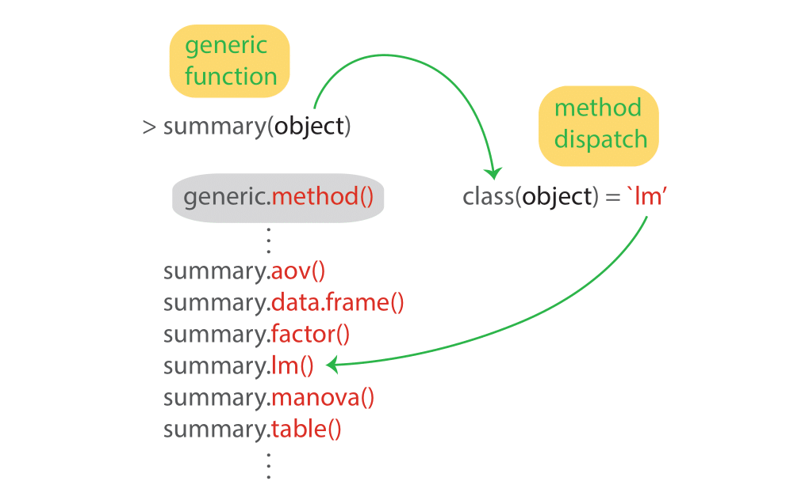
It’s always worth examining whether the class of model you’re fitting has a method for a particular extractor function. Here’s a summary table of some of the most often used extractor functions, which have methods for a wide range of model classes. These are post-estimation tools you will want in your toolbox:
| Function | Package | Output |
|---|---|---|
summary() |
stats |
standard errors, test statistics, p-values, GOF stats |
confint() |
stats |
confidence intervals |
anova() |
stats |
anova table (one model), model comparison (> one model) |
coef() |
stats |
point estimates |
drop1() |
stats |
model comparison |
predict() |
stats |
predicted response values |
fitted() |
stats |
predicted response values (for observed data) |
residuals() |
stats |
residuals |
fixef() |
lme4 |
fixed effect point estimates (mixed models only) |
ranef() |
lme4 |
random effect point estimates (mixed models only) |
coef() |
lme4 |
empirical Bayes estimates (mixed models only) |
allEffects() |
effects |
predicted marginal means |
emmeans() |
emmeans |
predicted marginal means & marginal effects |
margins() |
margins |
predicted marginal means & marginal effects |
OLS regression assumptions
OLS regression relies on several assumptions, including:
- The model includes all relevant variables (i.e., no omitted variable bias).
- The model is linear in the parameters (i.e., the coefficients and error term).
- The error term has an expected value of zero.
- All right-hand-side variables are uncorrelated with the error term.
- No right-hand-side variables are a perfect linear function of other RHS variables.
- Observations of the error term are uncorrelated with each other.
- The error term has constant variance (i.e., homoscedasticity).
- (Optional - only needed for inference). The error term is normally distributed.
Investigate assumptions #7 and #8 visually by plotting your model:
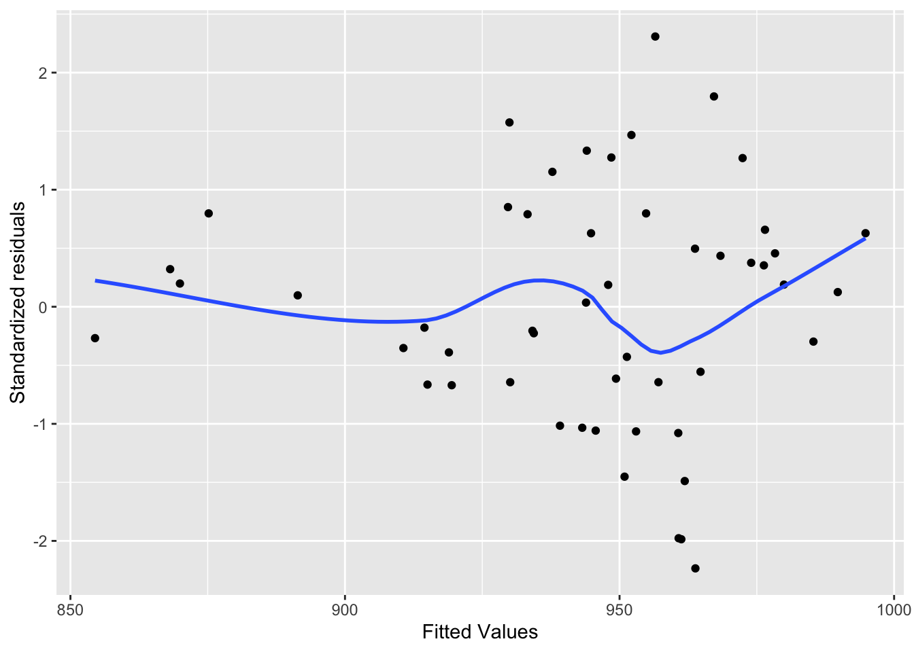
Comparing models
Do congressional voting patterns predict SAT scores over and above expense? Fit two models and compare them:
# fit another model, adding house and senate as predictors
sat_voting_mod <- lm(csat ~ 1 + expense + house + senate,
data = na.omit(states_data))
summary(sat_voting_mod) %>% coef()## Estimate Std. Error t value Pr(>|t|)
## (Intercept) 1082.93438041 38.633812740 28.0307405 1.067795e-29
## expense -0.01870832 0.009691494 -1.9303852 6.001998e-02
## house -1.44243754 0.600478382 -2.4021473 2.058666e-02
## senate 0.49817861 0.513561356 0.9700469 3.373256e-01Why are we using na.omit()? Let’s see what na.omit() does.
## x y z
## 1 1 3 6
## 2 2 2 NA
## 3 3 1 2
## 4 4 NA 7
## 5 5 5 3## x y z
## 1 1 3 6
## 3 3 1 2
## 5 5 5 3## x y z
## 1 1 3 6
## 3 3 1 2
## 5 5 5 3To compare models, we must fit them to the same data. This is why we need na.omit().
Now let’s update our first model using na.omit():
sat_mod <-
sat_mod %>%
update(data = na.omit(states_data))
# compare using an F-test with the anova() function
anova(sat_mod, sat_voting_mod)## Analysis of Variance Table
##
## Model 1: csat ~ 1 + expense
## Model 2: csat ~ 1 + expense + house + senate
## Res.Df RSS Df Sum of Sq F Pr(>F)
## 1 46 169050
## 2 44 149284 2 19766 2.9128 0.06486 .
## ---
## Signif. codes: 0 '***' 0.001 '**' 0.01 '*' 0.05 '.' 0.1 ' ' 1Exercise 0
Ordinary least squares regression
Use the states.rds data set. Fit a model predicting energy consumed per capita (energy) from the percentage of residents living in metropolitan areas (metro). Be sure to
- Examine/plot the data before fitting the model
- Print and interpret the model
summary()
plot()the model to look for deviations from modeling assumptions
- Select one or more additional predictors to add to your model and repeat steps 1-3. Is this model significantly better than the model with
metroas the only predictor?
Click for Exercise 0 Solution
Use the states.rds data set.
Fit a model predicting energy consumed per capita (energy) from the percentage of residents living in metropolitan areas (metro). Be sure to:
- Examine/plot the data before fitting the model.
## metro energy
## Min. : 20.40 Min. :200.0
## 1st Qu.: 46.98 1st Qu.:285.0
## Median : 67.55 Median :320.0
## Mean : 64.07 Mean :354.5
## 3rd Qu.: 81.58 3rd Qu.:371.5
## Max. :100.00 Max. :991.0
## NA's :1 NA's :1
## metro energy
## metro 1.0000000 -0.3397445
## energy -0.3397445 1.0000000- Print and interpret the model
summary().
##
## Call:
## lm(formula = energy ~ metro, data = states)
##
## Residuals:
## Min 1Q Median 3Q Max
## -215.51 -64.54 -30.87 18.71 583.97
##
## Coefficients:
## Estimate Std. Error t value Pr(>|t|)
## (Intercept) 501.0292 61.8136 8.105 1.53e-10 ***
## metro -2.2871 0.9139 -2.503 0.0158 *
## ---
## Signif. codes: 0 '***' 0.001 '**' 0.01 '*' 0.05 '.' 0.1 ' ' 1
##
## Residual standard error: 140.2 on 48 degrees of freedom
## (1 observation deleted due to missingness)
## Multiple R-squared: 0.1154, Adjusted R-squared: 0.097
## F-statistic: 6.263 on 1 and 48 DF, p-value: 0.01578plot()the model to look for deviations from modeling assumptions.
- Select one or more additional predictors to add to your model and repeat steps 1-3. Is this model significantly better than the model with metro as the only predictor?
states_en_met_pop_wst <-
states %>%
select(energy, metro, pop, waste)
summary(states_en_met_pop_wst)## energy metro pop waste
## Min. :200.0 Min. : 20.40 Min. : 454000 Min. :0.5400
## 1st Qu.:285.0 1st Qu.: 46.98 1st Qu.: 1299750 1st Qu.:0.8225
## Median :320.0 Median : 67.55 Median : 3390500 Median :0.9600
## Mean :354.5 Mean : 64.07 Mean : 4962040 Mean :0.9888
## 3rd Qu.:371.5 3rd Qu.: 81.58 3rd Qu.: 5898000 3rd Qu.:1.1450
## Max. :991.0 Max. :100.00 Max. :29760000 Max. :1.5100
## NA's :1 NA's :1 NA's :1 NA's :1
## energy metro pop waste
## energy 1.0000000 -0.3397445 -0.1840357 -0.2526499
## metro -0.3397445 1.0000000 0.5653562 0.4877881
## pop -0.1840357 0.5653562 1.0000000 0.5255713
## waste -0.2526499 0.4877881 0.5255713 1.0000000 mod_en_met_pop_waste <- lm(energy ~ 1 + metro + pop + waste, data = states)
summary(mod_en_met_pop_waste)##
## Call:
## lm(formula = energy ~ 1 + metro + pop + waste, data = states)
##
## Residuals:
## Min 1Q Median 3Q Max
## -224.62 -67.48 -31.76 12.65 589.48
##
## Coefficients:
## Estimate Std. Error t value Pr(>|t|)
## (Intercept) 5.617e+02 9.905e+01 5.671 9e-07 ***
## metro -2.079e+00 1.168e+00 -1.780 0.0816 .
## pop 1.649e-06 4.809e-06 0.343 0.7332
## waste -8.307e+01 1.042e+02 -0.797 0.4295
## ---
## Signif. codes: 0 '***' 0.001 '**' 0.01 '*' 0.05 '.' 0.1 ' ' 1
##
## Residual standard error: 142.2 on 46 degrees of freedom
## (1 observation deleted due to missingness)
## Multiple R-squared: 0.1276, Adjusted R-squared: 0.07067
## F-statistic: 2.242 on 3 and 46 DF, p-value: 0.09599## Analysis of Variance Table
##
## Model 1: energy ~ metro
## Model 2: energy ~ 1 + metro + pop + waste
## Res.Df RSS Df Sum of Sq F Pr(>F)
## 1 48 943103
## 2 46 930153 2 12949 0.3202 0.7276Interactions & factors
GOAL: To learn how to specify interaction effects and fit models with categorical predictors. In particular:
- Formula syntax for interaction effects
- Factor levels and labels
- Contrasts and pairwise comparisons
Modeling interactions
Interactions allow us assess the extent to which the association between one predictor and the outcome depends on a second predictor. For example: Does the association between expense and SAT scores depend on the median income in the state?
# Add the interaction to the model
sat_expense_by_percent <- lm(csat ~ 1 + expense + income + expense : income, data = states_data)
# same as above, but shorter syntax
sat_expense_by_percent <- lm(csat ~ 1 + expense * income, data = states_data)
# show the regression coefficients table
summary(sat_expense_by_percent) %>% coef() ## Estimate Std. Error t value Pr(>|t|)
## (Intercept) 1.380364e+03 1.720863e+02 8.021351 2.367069e-10
## expense -6.384067e-02 3.270087e-02 -1.952262 5.687837e-02
## income -1.049785e+01 4.991463e+00 -2.103161 4.083253e-02
## expense:income 1.384647e-03 8.635529e-04 1.603431 1.155395e-01Regression with categorical predictors
Let’s try to predict SAT scores from region, a categorical variable.
Note that you must make sure R does not think your categorical variable is numeric.
## Factor w/ 4 levels "West","N. East",..: 3 1 1 3 1 1 2 3 NA 3 ...Here, R is already treating region as categorical — that is, in R parlance, a “factor†variable. If region were not already a factor, we could make it so like this:
states_data <- states_data %>%
mutate(region = factor(region))
# arguments to the factor() function
# factor(x, levels, labels)
levels(states_data$region)## [1] "West" "N. East" "South" "Midwest" # add region to the model
sat_region <- lm(csat ~ 1 + region, data = states_data)
# show the results
summary(sat_region) %>% coef() # show the regression coefficients table## Estimate Std. Error t value Pr(>|t|)
## (Intercept) 946.30769 14.79582 63.9577807 1.352577e-46
## regionN. East -56.75214 23.13285 -2.4533141 1.800383e-02
## regionSouth -16.30769 19.91948 -0.8186806 4.171898e-01
## regionMidwest 63.77564 21.35592 2.9863209 4.514152e-03## Analysis of Variance Table
##
## Response: csat
## Df Sum Sq Mean Sq F value Pr(>F)
## region 3 82049 27349.8 9.6102 4.859e-05 ***
## Residuals 46 130912 2845.9
## ---
## Signif. codes: 0 '***' 0.001 '**' 0.01 '*' 0.05 '.' 0.1 ' ' 1So, make sure to tell R which variables are categorical by converting them to factors!
Setting factor reference groups & contrasts
Contrasts is the umbrella term used to describe the process of testing linear combinations of parameters from regression models. All statistical sofware use contrasts, but each software has different defaults and their own way of overriding these.
The default contrasts in R are “treatment†contrasts (aka “dummy codingâ€), where each level within a factor is identified within a matrix of binary 0 / 1 variables, with the first level chosen as the reference category. They’re called “treatment†contrasts, because of the typical use case where there is one control group (the reference group) and one or more treatment groups that are to be compared to the controls. It is easy to change the default contrasts to something other than treatment contrasts, though this is rarely needed. More often, we may want to change the reference group in treatment contrasts or get all sets of pairwise contrasts between factor levels.
## N. East South Midwest
## West 0 0 0
## N. East 1 0 0
## South 0 1 0
## Midwest 0 0 1 # change the reference group
states_data <- states_data %>%
mutate(region = relevel(region, ref = "Midwest"))
# check the reference group has changed
contrasts(states_data$region)## West N. East South
## Midwest 0 0 0
## West 1 0 0
## N. East 0 1 0
## South 0 0 1 # refit the model
mod_region <- lm(csat ~ 1 + region, data = states_data)
summary(mod_region) %>% coef()## Estimate Std. Error t value Pr(>|t|)
## (Intercept) 1010.08333 15.39998 65.589930 4.296307e-47
## regionWest -63.77564 21.35592 -2.986321 4.514152e-03
## regionN. East -120.52778 23.52385 -5.123641 5.798399e-06
## regionSouth -80.08333 20.37225 -3.931000 2.826007e-04## $emmeans
## region emmean SE df lower.CL upper.CL
## Midwest 1010 15.4 46 979 1041
## West 946 14.8 46 917 976
## N. East 890 17.8 46 854 925
## South 930 13.3 46 903 957
##
## Confidence level used: 0.95
##
## $contrasts
## contrast estimate SE df t.ratio p.value
## Midwest - West 63.8 21.4 46 2.986 0.0226
## Midwest - N. East 120.5 23.5 46 5.124 <.0001
## Midwest - South 80.1 20.4 46 3.931 0.0016
## West - N. East 56.8 23.1 46 2.453 0.0812
## West - South 16.3 19.9 46 0.819 0.8453
## N. East - South -40.4 22.2 46 -1.820 0.2774
##
## P value adjustment: tukey method for comparing a family of 4 estimatesExercise 1
Interactions & factors
Use the states data set.
- Add on to the regression equation that you created in Exercise 1 by generating an interaction term and testing the interaction.
- Try adding region to the model. Are there significant differences across the four regions?
Click for Exercise 1 Solution
Use the states data set.
- Add on to the regression equation that you created in exercise 1 by generating an interaction term and testing the interaction.
- Try adding a region to the model. Are there significant differences across the four regions?
mod_en_region <- lm(energy ~ 1 + metro * waste + region, data = states)
anova(mod_en_metro_by_waste, mod_en_region)## Analysis of Variance Table
##
## Model 1: energy ~ 1 + metro * waste
## Model 2: energy ~ 1 + metro * waste + region
## Res.Df RSS Df Sum of Sq F Pr(>F)
## 1 46 930683
## 2 43 821247 3 109436 1.91 0.1422Models with binary outcomes
GOAL: To learn how to use the glm() function to model binary outcomes. In particular:
- The
familyandlinkcomponents of theglm()function call - Transforming model coefficients into odds ratios
- Transforming model coefficients into predicted marginal means
Logistic regression
This far we have used the lm() function to fit our regression models. lm() is great, but limited — in particular it only fits models for continuous dependent variables. For categorical dependent variables we can use the glm() function.
For these models we will use a different dataset, drawn from the National Health Interview Survey. From the CDC website:
The National Health Interview Survey (NHIS) has monitored the health of the nation since 1957. NHIS data on a broad range of health topics are collected through personal household interviews. For over 50 years, the U.S. Census Bureau has been the data collection agent for the National Health Interview Survey. Survey results have been instrumental in providing data to track health status, health care access, and progress toward achieving national health objectives.
Load the National Health Interview Survey data:
Logistic regression example
Motivation for a logistic regression model — with a binary response:
- Errors will not be normally distributed
- Variance will not be homoskedastic
- Predictions should be constrained to be on the interval [0, 1]
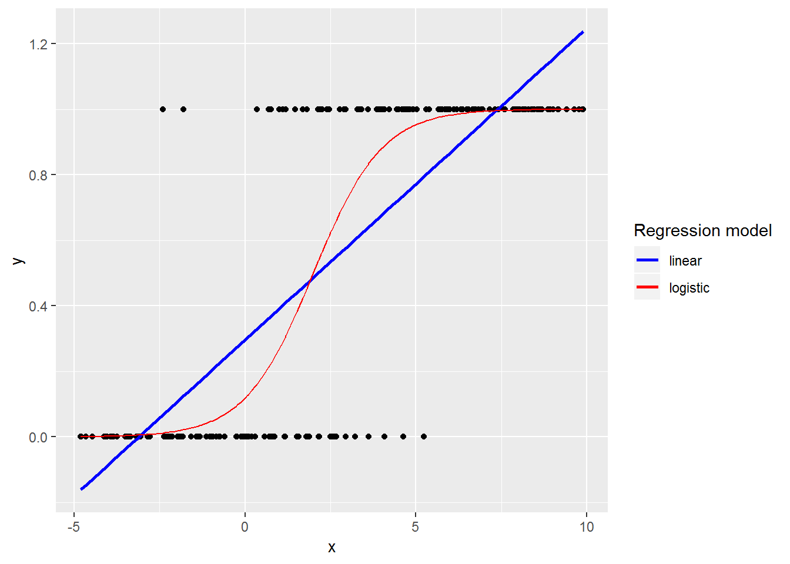
Anatomy of a generalized linear model:
# OLS model using lm()
lm(outcome ~ 1 + pred1 + pred2,
data = mydata)
# OLS model using glm()
glm(outcome ~ 1 + pred1 + pred2,
data = mydata,
family = gaussian(link = "identity"))
# logistic model using glm()
glm(outcome ~ 1 + pred1 + pred2,
data = mydata,
family = binomial(link = "logit"))The family argument sets the error distribution for the model, while the link function
argument relates the predictors to the expected value of the outcome.
Let’s predict the probability of being diagnosed with hypertension based on age, sex, sleep, and bmi. Here’s the theoretical model:
\[ logit(p(hypertension_i = 1)) = \beta_{0}1 + \beta_1age_i + \beta_2sex_i + \beta_3sleep_i + \beta_4bmi_i \]
where \(logit(\cdot)\) is the non-linear link function that relates a linear expression of the predictors to the expectation of the binary response:
\[ logit(p(hypertension_i = 1)) = ln \left( \frac{p(hypertension_i = 1)}{1-p(hypertension_i = 1)} \right) = ln \left( \frac{p(hypertension_i = 1)}{p(hypertension_i = 0)} \right) \]
And here’s how we fit this model in R. First, let’s clean up the hypertension outcome by making it binary:
## Factor w/ 5 levels "1 Yes","2 No",..: 2 2 1 2 2 1 2 2 1 2 ...## [1] "1 Yes" "2 No" "7 Refused"
## [4] "8 Not ascertained" "9 Don't know" # collapse all missing values to NA
NH11 <- NH11 %>%
mutate(hypev = factor(hypev, levels=c("2 No", "1 Yes")))Now let’s use glm() to estimate the model:
# run our regression model
hyp_out <- glm(hypev ~ 1 + age_p + sex + sleep + bmi,
data = NH11,
family = binomial(link = "logit"))
summary(hyp_out) %>% coef()## Estimate Std. Error z value Pr(>|z|)
## (Intercept) -4.269466028 0.0564947294 -75.572820 0.000000e+00
## age_p 0.060699303 0.0008227207 73.778743 0.000000e+00
## sex2 Female -0.144025092 0.0267976605 -5.374540 7.677854e-08
## sleep -0.007035776 0.0016397197 -4.290841 1.779981e-05
## bmi 0.018571704 0.0009510828 19.526906 6.485172e-85Odds ratios
Generalized linear models use link functions to relate the average value of the response to the predictors,
so raw coefficients are difficult to interpret. For example, the age coefficient of .06 in the previous
model tells us that for every one unit increase in age, the log odds of hypertension diagnosis increases
by 0.06. Since most of us are not used to thinking in log odds this is not too helpful!
One solution is to transform the coefficients to make them easier to interpret. Here we transform them into odds ratios by exponentiating:
## (Intercept) age_p sex2 Female sleep bmi
## 0.01398925 1.06257935 0.86586602 0.99298892 1.01874523## 2.5 % 97.5 %
## (Intercept) 0.01251677 0.01561971
## age_p 1.06087385 1.06430082
## sex2 Female 0.82155196 0.91255008
## sleep 0.98978755 0.99617465
## bmi 1.01685145 1.02065009Predicted marginal means
Instead of reporting odds ratios, we may want to calculate predicted marginal means (sometimes called “least-squares means†or “estimated marginal meansâ€). These are average values of the outcome at particular levels of the predictors. For ease of interpretation, we want these marginal means to be on the response scale (i.e., the probability scale). We can use the effects package to compute these quantities of interest for us (by default, the numerical output will be on the response scale).

# generate a sequence of ages at which to get predictions of the outcome
age_years <- seq(20, 80, by = 5)
age_years## [1] 20 25 30 35 40 45 50 55 60 65 70 75 80 eff_df <-
hyp_out %>%
allEffects(xlevels = list(age_p = age_years)) %>% # override defaults for age
as.data.frame() # get confidence intervals
eff_df## $age_p
## age_p fit se lower upper
## 1 20 0.06690384 0.001915704 0.06324553 0.07075778
## 2 25 0.08852692 0.002181618 0.08434323 0.09289708
## 3 30 0.11626770 0.002418813 0.11161020 0.12109307
## 4 35 0.15125876 0.002603243 0.14622690 0.15643204
## 5 40 0.19446321 0.002722428 0.18918282 0.19985467
## 6 45 0.24642528 0.002796260 0.24098582 0.25194677
## 7 50 0.30698073 0.002895857 0.30133437 0.31268554
## 8 55 0.37501156 0.003124112 0.36890868 0.38115441
## 9 60 0.44836479 0.003531792 0.44145305 0.45529654
## 10 65 0.52403564 0.004052454 0.51608756 0.53197156
## 11 70 0.59861876 0.004545531 0.58967801 0.60749436
## 12 75 0.66889903 0.004880732 0.65926418 0.67839434
## 13 80 0.73237506 0.004986539 0.72248912 0.74203457
##
## $sex
## sex fit se lower upper
## 1 1 Male 0.2994186 0.004188707 0.2912739 0.3076922
## 2 2 Female 0.2701044 0.003715028 0.2628852 0.2774472
##
## $sleep
## sleep fit se lower upper
## 1 3 0.2899941 0.003276427 0.2836147 0.2964575
## 2 30 0.2524895 0.007427001 0.2382124 0.2673219
## 3 50 0.2268657 0.012446183 0.2034008 0.2521806
## 4 80 0.1919843 0.018549461 0.1582199 0.2309771
## 5 100 0.1710955 0.021584286 0.1328287 0.2176200
##
## $bmi
## bmi fit se lower upper
## 1 10 0.2144084 0.004121590 0.2064409 0.2225972
## 2 30 0.2835093 0.002849407 0.2779580 0.2891272
## 3 60 0.4085485 0.007450161 0.3940311 0.4232272
## 4 80 0.5003663 0.012139141 0.4765911 0.5241398
## 5 100 0.5921593 0.016180071 0.5601051 0.6234481Exercise 2
Logistic regression
Use the NH11 data set that we loaded earlier.
- Use
glm()to conduct a logistic regression to predict ever worked (everwrk) using age (age_p) and marital status (r_maritl). Make sure you only keep the following two levels foreverwrk(1 Yesand2 No). Hint: use thefactor()function. Also, make sure to drop anyr_maritllevels that do not contain observations. Hint: see?droplevels.
- Predict the probability of working for each level of marital status. Hint: use
allEffects()
Note that the data are not perfectly clean and ready to be modeled. You will need to clean up at least some of the variables before fitting the model.
Click for Exercise 2 Solution
Use the NH11 data set that we loaded earlier. Note that the data is not perfectly clean and ready to be modeled. You will need to clean up at least some of the variables before fitting the model.
- Use
glm()to conduct a logistic regression to predict ever worked (everwrk) using age (age_p) and marital status (r_maritl). Make sure you only keep the following two levels foreverwrk(1 Yesand2 No). Hint: use thefactor()function. Also, make sure to drop anyr_maritllevels that do not contain observations. Hint: see?droplevels.
NH11 <-
NH11 %>%
mutate(everwrk = factor(everwrk, levels = c("1 Yes", "2 No")),
r_maritl = droplevels(r_maritl)
)
mod_wk_age_mar <- glm(everwrk ~ 1 + age_p + r_maritl,
data = NH11,
family = binomial(link = "logit"))
summary(mod_wk_age_mar)##
## Call:
## glm(formula = everwrk ~ 1 + age_p + r_maritl, family = binomial(link = "logit"),
## data = NH11)
##
## Deviance Residuals:
## Min 1Q Median 3Q Max
## -1.0436 -0.5650 -0.4391 -0.3370 2.7308
##
## Coefficients:
## Estimate Std. Error z value
## (Intercept) -0.440248 0.093538 -4.707
## age_p -0.029812 0.001645 -18.118
## r_maritl2 Married - spouse not in household 0.049675 0.217310 0.229
## r_maritl4 Widowed 0.683618 0.084335 8.106
## r_maritl5 Divorced -0.730115 0.111681 -6.538
## r_maritl6 Separated -0.128091 0.151366 -0.846
## r_maritl7 Never married 0.343611 0.069222 4.964
## r_maritl8 Living with partner -0.443583 0.137770 -3.220
## r_maritl9 Unknown marital status 0.395480 0.492967 0.802
## Pr(>|z|)
## (Intercept) 2.52e-06 ***
## age_p < 2e-16 ***
## r_maritl2 Married - spouse not in household 0.81919
## r_maritl4 Widowed 5.23e-16 ***
## r_maritl5 Divorced 6.25e-11 ***
## r_maritl6 Separated 0.39742
## r_maritl7 Never married 6.91e-07 ***
## r_maritl8 Living with partner 0.00128 **
## r_maritl9 Unknown marital status 0.42241
## ---
## Signif. codes: 0 '***' 0.001 '**' 0.01 '*' 0.05 '.' 0.1 ' ' 1
##
## (Dispersion parameter for binomial family taken to be 1)
##
## Null deviance: 11082 on 14039 degrees of freedom
## Residual deviance: 10309 on 14031 degrees of freedom
## (18974 observations deleted due to missingness)
## AIC: 10327
##
## Number of Fisher Scoring iterations: 5- Predict the probability of working for each level of marital status. Hint: use
allEffects().
## $age_p
## age_p fit se lower upper
## 1 20 0.27587439 0.011448539 0.25400910 0.29886780
## 2 30 0.22043363 0.007483648 0.20611629 0.23545053
## 3 50 0.13477473 0.003183752 0.12865574 0.14113761
## 4 70 0.07902788 0.003053617 0.07324630 0.08522385
## 5 80 0.05987515 0.003123927 0.05403759 0.06629914
##
## $r_maritl
## r_maritl fit se lower
## 1 1 Married - spouse in household 0.10822000 0.004259644 0.10014980
## 2 2 Married - spouse not in household 0.11310823 0.021393167 0.07746061
## 3 4 Widowed 0.19381087 0.010634762 0.17381358
## 4 5 Divorced 0.05524394 0.005361664 0.04562877
## 5 6 Separated 0.09646417 0.012707502 0.07426824
## 6 7 Never married 0.14611000 0.007459212 0.13208775
## 7 8 Living with partner 0.07224958 0.008904955 0.05662466
## 8 9 Unknown marital status 0.15270076 0.063528455 0.06440837
## upper
## 1 0.11685606
## 2 0.16227532
## 3 0.21550873
## 4 0.06674358
## 5 0.12440219
## 6 0.16134411
## 7 0.09176661
## 8 0.32055728Multilevel modeling
GOAL: To learn about how to use the lmer() function to model clustered data. In particular:
- The formula syntax for incorporating random effects into a model
- Calculating the intraclass correlation (ICC)
- Model comparison for fixed and random effects
Multilevel modeling overview
- Multi-level (AKA hierarchical) models are a type of mixed-effects model
- They are used to model data that are clustered (i.e., non-independent)
- Mixed-effects models include two types of predictors: fixed-effects and random effects
- Fixed-effects – observed levels are of direct interest (.e.g, sex, political party…)
- Random-effects – observed levels not of direct interest: goal is to make inferences to a population represented by observed levels
- In R, the
lme4package is the most popular for mixed effects models - Use the
lmer()function for liner mixed models,glmer()for generalized linear mixed models
The Exam data
The Exam data set contains exam scores of 4,059 students from 65 schools in Inner London. The variable names are as follows:
| Variable | Description |
|---|---|
| school | School ID - a factor. |
| normexam | Normalized exam score. |
| standLRT | Standardized LR test score. |
| student | Student id (within school) - a factor |
The null model & ICC
Before we fit our first model, let’s take a look at the R syntax for multilevel models:
# anatomy of lmer() function
lmer(outcome ~ 1 + pred1 + pred2 + (1 | grouping_variable),
data = mydata)Notice the formula section within the brackets: (1 | grouping_variable). This part of the formula tells R about the hierarchical structure of the model. In this case, it says we have a model with random intercepts (1) grouped by (|) a grouping_variable.
As a preliminary modeling step, it is often useful to partition the variance in the dependent variable into the various levels. This can be accomplished by running a null model (i.e., a model with a random effects grouping structure, but no fixed-effects predictors) and then calculating the intra-class correlation (ICC).
# null model, grouping by school but not fixed effects.
Norm1 <-lmer(normexam ~ 1 + (1 | school),
data = na.omit(Exam))
summary(Norm1)## Linear mixed model fit by REML ['lmerMod']
## Formula: normexam ~ 1 + (1 | school)
## Data: na.omit(Exam)
##
## REML criterion at convergence: 9962.9
##
## Scaled residuals:
## Min 1Q Median 3Q Max
## -3.8749 -0.6452 0.0045 0.6888 3.6836
##
## Random effects:
## Groups Name Variance Std.Dev.
## school (Intercept) 0.1634 0.4042
## Residual 0.8520 0.9231
## Number of obs: 3662, groups: school, 65
##
## Fixed effects:
## Estimate Std. Error t value
## (Intercept) -0.01310 0.05312 -0.247The ICC is calculated as .163/(.163 + .852) = .161, which means that ~16% of the variance is at the school level.
There is no consensus on how to calculate p-values for MLMs; hence why they are omitted from the lme4 output. But, if you really need p-values, the lmerTest package will calculate p-values for you (using the Satterthwaite approximation).
Adding fixed-effects predictors
Here’s a theoretical model that predicts exam scores from student’s standardized tests scores:
\[ examscores_{ij} = \mu1 + \beta_1testscores_{ij} + U_{0j} + \epsilon_{ij} \]
where \(U_{0j}\) is the random intercept for the \(j\)th school. Let’s implement this in R using lmer():
## Linear mixed model fit by REML ['lmerMod']
## Formula: normexam ~ 1 + standLRT + (1 | school)
## Data: na.omit(Exam)
##
## REML criterion at convergence: 8483.5
##
## Scaled residuals:
## Min 1Q Median 3Q Max
## -3.6725 -0.6300 0.0234 0.6777 3.3340
##
## Random effects:
## Groups Name Variance Std.Dev.
## school (Intercept) 0.09369 0.3061
## Residual 0.56924 0.7545
## Number of obs: 3662, groups: school, 65
##
## Fixed effects:
## Estimate Std. Error t value
## (Intercept) -4.313e-05 4.055e-02 -0.001
## standLRT 5.669e-01 1.324e-02 42.821
##
## Correlation of Fixed Effects:
## (Intr)
## standLRT 0.007Multiple degree of freedom comparisons
As with lm() and glm() models, you can compare the two lmer() models using the anova() function. With mixed effects models, this will produce a likelihood ratio test.
## Data: na.omit(Exam)
## Models:
## Norm1: normexam ~ 1 + (1 | school)
## Norm2: normexam ~ 1 + standLRT + (1 | school)
## npar AIC BIC logLik deviance Chisq Df Pr(>Chisq)
## Norm1 3 9964.9 9983.5 -4979.4 9958.9
## Norm2 4 8480.1 8505.0 -4236.1 8472.1 1486.8 1 < 2.2e-16 ***
## ---
## Signif. codes: 0 '***' 0.001 '**' 0.01 '*' 0.05 '.' 0.1 ' ' 1Random slopes
Add a random effect of students’ standardized test scores as well. Now in addition to estimating the distribution of intercepts across schools, we also estimate the distribution of the slope of exam on standardized test.
Norm3 <- lmer(normexam ~ 1 + standLRT + (1 + standLRT | school),
data = na.omit(Exam))
summary(Norm3) ## Linear mixed model fit by REML ['lmerMod']
## Formula: normexam ~ 1 + standLRT + (1 + standLRT | school)
## Data: na.omit(Exam)
##
## REML criterion at convergence: 8442.8
##
## Scaled residuals:
## Min 1Q Median 3Q Max
## -3.7904 -0.6246 0.0245 0.6734 3.4376
##
## Random effects:
## Groups Name Variance Std.Dev. Corr
## school (Intercept) 0.09092 0.3015
## standLRT 0.01639 0.1280 0.49
## Residual 0.55589 0.7456
## Number of obs: 3662, groups: school, 65
##
## Fixed effects:
## Estimate Std. Error t value
## (Intercept) -0.01250 0.04011 -0.312
## standLRT 0.56094 0.02119 26.474
##
## Correlation of Fixed Effects:
## (Intr)
## standLRT 0.360Test the significance of the random slope
To test the significance of a random slope just compare models with and without the random slope term using a likelihood ratio test:
## Data: na.omit(Exam)
## Models:
## Norm2: normexam ~ 1 + standLRT + (1 | school)
## Norm3: normexam ~ 1 + standLRT + (1 + standLRT | school)
## npar AIC BIC logLik deviance Chisq Df Pr(>Chisq)
## Norm2 4 8480.1 8505.0 -4236.1 8472.1
## Norm3 6 8444.1 8481.4 -4216.1 8432.1 40.01 2 2.051e-09 ***
## ---
## Signif. codes: 0 '***' 0.001 '**' 0.01 '*' 0.05 '.' 0.1 ' ' 1Exercise 3
Multilevel modeling
Use the bh1996 dataset:
From the data documentation:
Variables are Leadership Climate (
LEAD), Well-Being (WBEING), and Work Hours (HRS). The group identifier is namedGRP.
- Create a null model predicting wellbeing (
WBEING)
- Calculate the ICC for your null model
- Run a second multi-level model that adds two individual-level predictors, average number of hours worked (
HRS) and leadership skills (LEAD) to the model and interpret your output.
- Now, add a random effect of average number of hours worked (
HRS) to the model and interpret your output. Test the significance of this random term.
Click for Exercise 3 Solution
Use the dataset, bh1996:
From the data documentation:
Variables are Leadership Climate (
LEAD), Well-Being (WBEING), and Work Hours (HRS). The group identifier is namedGRP.
- Create a null model predicting wellbeing (
WBEING).
## Linear mixed model fit by REML ['lmerMod']
## Formula: WBEING ~ 1 + (1 | GRP)
## Data: na.omit(bh1996)
##
## REML criterion at convergence: 19347.3
##
## Scaled residuals:
## Min 1Q Median 3Q Max
## -3.3217 -0.6475 0.0311 0.7182 2.6674
##
## Random effects:
## Groups Name Variance Std.Dev.
## GRP (Intercept) 0.0358 0.1892
## Residual 0.7895 0.8885
## Number of obs: 7382, groups: GRP, 99
##
## Fixed effects:
## Estimate Std. Error t value
## (Intercept) 2.7743 0.0222 124.9- Run a second multi-level model that adds two individual-level predictors, average number of hours worked (
HRS) and leadership skills (LEAD) to the model and interpret your output.
## Linear mixed model fit by REML ['lmerMod']
## Formula: WBEING ~ 1 + HRS + LEAD + (1 | GRP)
## Data: na.omit(bh1996)
##
## REML criterion at convergence: 17860
##
## Scaled residuals:
## Min 1Q Median 3Q Max
## -3.9188 -0.6588 0.0382 0.7040 3.6440
##
## Random effects:
## Groups Name Variance Std.Dev.
## GRP (Intercept) 0.01929 0.1389
## Residual 0.64668 0.8042
## Number of obs: 7382, groups: GRP, 99
##
## Fixed effects:
## Estimate Std. Error t value
## (Intercept) 1.686160 0.067702 24.906
## HRS -0.031617 0.004378 -7.221
## LEAD 0.500743 0.012811 39.087
##
## Correlation of Fixed Effects:
## (Intr) HRS
## HRS -0.800
## LEAD -0.635 0.121- Now, add a random effect of average number of hours worked (
HRS) to the model and interpret your output. Test the significance of this random term.
mod_grp2 <- lmer(WBEING ~ 1 + HRS + LEAD + (1 + HRS | GRP), data = na.omit(bh1996))
anova(mod_grp1, mod_grp2)## Data: na.omit(bh1996)
## Models:
## mod_grp1: WBEING ~ 1 + HRS + LEAD + (1 | GRP)
## mod_grp2: WBEING ~ 1 + HRS + LEAD + (1 + HRS | GRP)
## npar AIC BIC logLik deviance Chisq Df Pr(>Chisq)
## mod_grp1 5 17848 17882 -8918.9 17838
## mod_grp2 7 17851 17899 -8918.3 17837 1.2202 2 0.5433Wrap-up
Feedback
These workshops are a work in progress, please provide any feedback to: help@iq.harvard.edu
Resources
- IQSS
- Workshops: https://www.iq.harvard.edu/data-science-services/workshop-materials
- Data Science Services: https://www.iq.harvard.edu/data-science-services
- Research Computing Environment: https://iqss.github.io/dss-rce/
- HBS
- Research Computing Services workshops: https://training.rcs.hbs.org/workshops
- Other HBS RCS resources: https://training.rcs.hbs.org/workshop-materials
- RCS consulting email: mailto:research@hbs.edu
R Graphics
Topics
- R
ggplot2package - Geometric objects and aesthetics
- Setup basic plots
- Add and modify scales and legends
- Manipulate plot labels
- Change and create plot themes
Setup
Software and Materials
Follow the R Installation instructions and ensure that you can successfully start RStudio.
Class Structure
Informal - Ask questions at any time. Really!
Collaboration is encouraged - please spend a minute introducing yourself to your neighbors!
Prerequisites
This is an intermediate R course:
- Assumes working knowledge of R
- Relatively fast-paced
Launch an R session
Start RStudio and create a new project:
- On Windows click the start button and search for RStudio. On Mac RStudio will be in your applications folder.
- In Rstudio go to
File -> New Project. - Choose
Existing Directoryand browse to the workshop materials directory on your desktop. - Choose
File -> Open Fileand select the file with the word “BLANK†in the name.
Packages
You should have already installed the tidyverse and rmarkdown
packages onto your computer before the workshop
— see R Installation.
Now let’s load these packages into the search path of our R session.
The ggplot2 package is contained within tidyverse, but we also want to
install two additional packages, scales and ggrepel, which provide
additional functionality.
Goals
We will learn about the grammar of graphics — a system for understanding
the building blocks of a graph — using the ggplot2 package. In particular,
we’ll learn about:
- Basic plots, aesthetic mapping and inheritance
- Tailoring statistical transformations to particular plots
- Modifying scales to change axes and add labels
- Faceting to create many small plots
- Changing plot themes
Why ggplot2?
ggplot2 is a package within in the tidyverse suite of packages. Advantages of ggplot2 include:
- consistent underlying
grammar of graphics(Wilkinson, 2005) - very flexible — plot specification at a high level of abstraction
- theme system for polishing plot appearance
- many users, active mailing list
That said, there are some things you cannot (or should not) do with ggplot2:
- 3-dimensional graphics (see the
rglpackage) - Graph-theory type graphs (nodes/edges layout; see the
igraphpackage) - Interactive graphics (see the
ggvispackage)
What is the Grammar Of Graphics?
The basic idea: independently specify plot building blocks and combine them to create just about any kind of graphical display you want. Building blocks of a graph include the following (bold denotes essential elements):
- data
- aesthetic mapping
- geometric object
- statistical transformations
- scales
- coordinate system
- position adjustments
- faceting
- themes
By the end of this workshop, you should understand what these building blocks do and how to use them to create the following plot:

ggplot2 VS base graphics
Compared to base graphics, ggplot2
- is more verbose for simple / canned graphics
- is less verbose for complex / custom graphics
- does not have methods (data should always be in a
data.frame) - has sensible defaults for generating legends
Geometric objects & aesthetics
Aesthetic mapping
In ggplot land aesthetic means “something you can seeâ€. Examples include:
- position (i.e., on the x and y axes)
- color (“outside†color)
- fill (“inside†color)
- shape (of points)
- linetype
- size
Each type of geom accepts only a subset of all aesthetics; refer to the geom help pages to see what mappings each geom accepts. Aesthetic mappings are set with the aes() function.
Geometric objects (geom)
Geometric objects are the actual marks we put on a plot. Examples include:
- points (
geom_point(), for scatter plots, dot plots, etc.) - lines (
geom_line(), for time series, trend lines, etc.) - boxplot (
geom_boxplot(), for boxplots!)
A plot must have at least one geom; there is no upper limit. You can add a geom to a plot using the + operator.
Each geom_ has a particular set of aesthetic mappings associated with it. Some examples are provided below,
with required aesthetics in bold and optional aesthetics in plain text:
geom_ |
Usage | Aesthetics |
|---|---|---|
geom_point() |
Scatter plot | x,y,alpha,color,fill,group,shape,size,stroke |
geom_line() |
Line plot | x,y,alpha,color,linetype,size |
geom_bar() |
Bar chart | x,y,alpha,color,fill,group,linetype,size |
geom_boxplot() |
Boxplot | x,lower,upper,middle,ymin,ymax,alpha,color,fill |
geom_density() |
Density plot | x,y,alpha,color,fill,group,linetype,size,weight |
geom_smooth() |
Conditional means | x,y,alpha,color,fill,group,linetype,size,weight |
geom_label() |
Text | x,y,label,alpha,angle,color,family,fontface,size |
You can get a list of all available geometric objects and their associated aesthetics at https://ggplot2.tidyverse.org/reference/. Or, simply type geom_<tab> in any good R IDE (such as Rstudio) to see a list of functions starting with geom_.
Points (scatterplot)
Now that we know about geometric objects and aesthetic mapping, we can make a ggplot(). geom_point() requires mappings for x and y, all others are optional.
Example data: housing prices
Let’s look at housing prices.
## # A tibble: 6 x 5
## State region Date Home_Value Structure_Cost
## <chr> <chr> <dbl> <dbl> <dbl>
## 1 AK West 2010. 224952 160599
## 2 AK West 2010. 225511 160252
## 3 AK West 2010. 225820 163791
## 4 AK West 2010 224994 161787
## 5 AK West 2008 234590 155400
## 6 AK West 2008. 233714 157458Step 1: create a blank canvas by specifying data:

Step 2: specify aesthetic mappings (how you want to map variables to visual aspects):
# here we map "Land_Value" and "Structure_Cost" to the x- and y-axes.
ggplot(data = hp2001Q1, mapping = aes(x = Land_Value, y = Structure_Cost))Step 3: add new layers of geometric objects that will show up on the plot:
Lines (prediction line)
A plot constructed with ggplot() can have more than one geom. In that case the mappings established in the ggplot() call are plot defaults that can be added to or overridden — this is referred to as aesthetic inheritance. Our plot could use a regression line:
# get predicted values from a linear regression
hp2001Q1$pred_SC <- lm(Structure_Cost ~ log(Land_Value), data = hp2001Q1) %>%
predict()
p1 <- ggplot(hp2001Q1, aes(x = log(Land_Value), y = Structure_Cost))
p1 + geom_point(aes(color = Home_Value)) + # values for x and y are inherited from the ggplot() call above
geom_line(aes(y = pred_SC)) # add predicted values to the plot overriding the y values from the ggplot() call aboveSmoothers
Not all geometric objects are simple shapes; the smooth geom includes a line and a ribbon.
Text (label points)
Each geom accepts a particular set of mappings; for example geom_text() accepts a label mapping.
But what if we want to include points and labels? We can use geom_text_repel() to keep labels from overlapping the points and each other.

Aesthetic mapping VS assignment
- Variables are mapped to aesthetics inside the
aes()function.

- Constants are assigned to aesthetics outside the
aes()call

This sometimes leads to confusion, as in this example:
p1 +
geom_point(aes(size = 2),# incorrect! 2 is not a variable
color="red") # this is fine -- all points red
Mapping variables to other aesthetics
Other aesthetics are mapped in the same way as x and y in the previous example.

Exercise 0
The data for the exercises is available in the dataSets/EconomistData.csv file. Read it in with
Original sources for these data are http://www.transparency.org/content/download/64476/1031428 http://hdrstats.undp.org/en/indicators/display_cf_xls_indicator.cfm?indicator_id=103106&lang=en
These data consist of Human Development Index and Corruption Perception Index scores for several countries.
- Create a scatter plot with
CPIon the x axis andHDIon the y axis.
- Color the points in the previous plot blue.
- Map the color of the the points to
Region.
- Keeping color mapped to
Region, make the points bigger by setting size to 2
- Keeping color mapped to
Region, map the size of the points toHDI_Rank
Click for Exercise 0 Solution
- Create a scatter plot with
CPIon the x axis andHDIon the y axis.

- Color the points in the previous plot blue.
- Map the color of the the points to
Region.
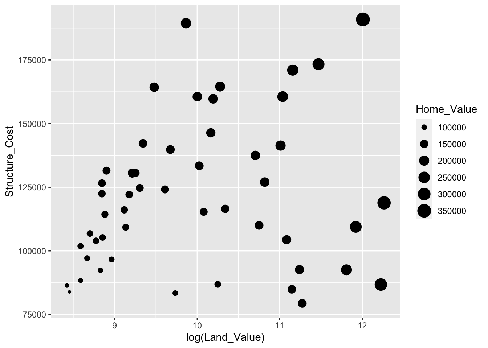
- Keeping color mapped to
Region, make the points bigger by setting size to 2.
- Keeping color mapped to
Region, map the size of the points toHDI_Rank.

Statistical transformations
Why transform data?
Some plot types (such as scatterplots) do not require transformations; each point is plotted at x and y coordinates equal to the original value. Other plots, such as boxplots, histograms, prediction lines etc. require statistical transformations:
- for a boxplot the y values must be transformed to the median and 1.5(IQR)
- for a smoother the y values must be transformed into predicted values
Each geom has a default statistic, but these can be changed. For example, the default statistic for geom_histogram() is stat_bin():
## function (mapping = NULL, data = NULL, stat = "bin", position = "stack",
## ..., binwidth = NULL, bins = NULL, na.rm = FALSE, orientation = NA,
## show.legend = NA, inherit.aes = TRUE)
## NULL## function (mapping = NULL, data = NULL, geom = "bar", position = "stack",
## ..., binwidth = NULL, bins = NULL, center = NULL, boundary = NULL,
## breaks = NULL, closed = c("right", "left"), pad = FALSE,
## na.rm = FALSE, orientation = NA, show.legend = NA, inherit.aes = TRUE)
## NULLHere is a list of geoms and their default statistics https://ggplot2.tidyverse.org/reference/
Setting arguments
Arguments to stat_ functions can be passed through geom_ functions. This can be slightly annoying because in order to change them you have to first determine which stat the geom uses, then determine the arguments to that stat.
For example, here is the default histogram of Home_Value:

We can change the binning scheme by passing the binwidth argument to the stat_bin() function:

Changing the transformation
Sometimes the default statistical transformation is not what you need. This is often the case with pre-summarized data:
housing_sum <-
housing %>%
group_by(State) %>%
summarize(Home_Value_Mean = mean(Home_Value)) %>%
ungroup()
head(housing_sum)## # A tibble: 6 x 2
## State Home_Value_Mean
## <chr> <dbl>
## 1 AK 147385.
## 2 AL 92545.
## 3 AR 82077.
## 4 AZ 140756.
## 5 CA 282808.
## 6 CO 158176.ggplot(housing_sum, aes(x = State, y = Home_Value_Mean)) +
geom_bar()
## Error: stat_count() must not be used with a y aesthetic. What is the problem with the previous plot? Basically we take binned and summarized data and ask ggplot to bin and summarize it again (remember, geom_bar() defaults to stat = stat_count; obviously this will not work. We can fix it by telling geom_bar() to use a different statistical transformation function. The identity function returns the same output as the input.

Exercise 1
- Re-create a scatter plot with
CPIon the x axis andHDIon the y axis (as you did in the previous exercise).
- Overlay a smoothing line on top of the scatter plot using
geom_smooth().
- Make the smoothing line in
geom_smooth()less smooth. Hint: see?loess.
- Change the smoothing line in
geom_smooth()to use a linear model for the predictions. Hint: see?stat_smooth.
- BONUS 1: Allow the smoothing line created in the last plot to vary across the levels of
Region. Hint: mapRegionto the color and fill aesthetics.
- BONUS 2: Overlay a loess
(method = "loess")smoothing line on top of the scatter plot usinggeom_line(). Hint: change the statistical transformation.
Click for Exercise 1 Solution
- Re-create a scatter plot with
CPIon the x axis andHDIon the y axis (as you did in the previous exercise).

- Overlay a smoothing line on top of the scatter plot using
geom_smooth().

- Make the smoothing line in
geom_smooth()less smooth. Hint: see?loess.
- Change the smoothing line in
geom_smooth()to use a linear model for the predictions. Hint: see?stat_smooth.
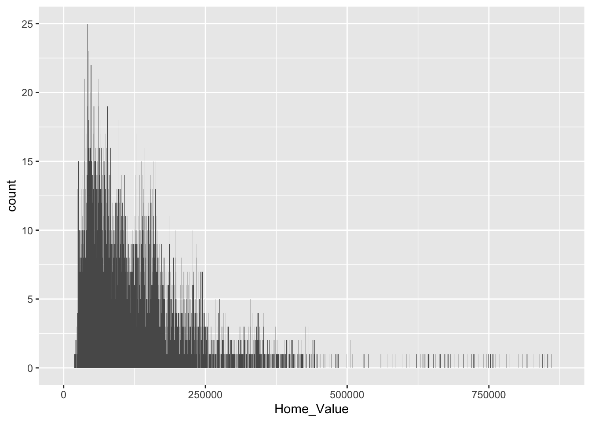
- BONUS 1: Allow the smoothing line created in the last plot to vary across the levels of
Region. Hint: mapRegionto the color and fill aesthetics.
ggplot(dat, aes(x = CPI, y = HDI, color = Region, fill = Region)) +
geom_point() +
geom_smooth(method = "lm")
- BONUS 2: Overlay a loess
(method = "loess")smoothing line on top of the scatter plot usinggeom_line(). Hint: change the statistical transformation.

Scales
Controlling aesthetic mapping
Aesthetic mapping (i.e., with aes()) only says that a variable should be mapped to an aesthetic. It doesn’t say how that should happen. For example, when mapping a variable to shape with aes(shape = x) you don’t say what shapes should be used. Similarly, aes(color = y) doesn’t say what colors should be used. Also, aes(size = z) doesn’t say what sizes should be used. Describing what colors/shapes/sizes etc. to use is done by modifying the corresponding scale. In ggplot2 scales include
- position
- color and fill
- size
- shape
- line type
Scales are modified with a series of functions using a scale_<aesthetic>_<type> naming scheme. Try typing scale_<tab> to see a list of scale modification functions.
Common scale arguments
The following arguments are common to most scales in ggplot2:
- name: the axis or legend title
- limits: the minimum and maximum of the scale
- breaks: the points along the scale where labels should appear
- labels: the labels that appear at each break
Specific scale functions may have additional arguments; for example, the scale_color_continuous() function has arguments low and high for setting the colors at the low and high end of the scale.
Scale modification examples
Start by constructing a dotplot showing the distribution of home values by Date and State.
p4 <- ggplot(housing, aes(x = State, y = Home_Price_Index)) +
geom_point(aes(color = Date), alpha = 0.5, size = 1.5,
position = position_jitter(width = 0.25, height = 0))Now modify the breaks for the color scales

Next change the low and high values to blue and red:
Using different color scales
ggplot2 has a wide variety of color scales; here is an example using scale_color_gradient2() to interpolate between three different colors.
p4 +
scale_color_gradient2(name="",
breaks = c(1976, 1994, 2013),
labels = c("'76", "'94", "'13"),
low = "blue",
high = "red",
mid = "gray60",
midpoint = 1994)
Available scales
- Partial combination matrix of available scales
scale_ |
Types | Examples |
|---|---|---|
scale_color_ |
identity |
scale_fill_continuous() |
scale_fill_ |
manual |
scale_color_discrete() |
scale_size_ |
continuous |
scale_size_manual() |
discrete |
scale_size_discrete() |
|
scale_shape_ |
discrete |
scale_shape_discrete() |
scale_linetype_ |
identity |
scale_shape_manual() |
manual |
scale_linetype_discrete() |
|
scale_x_ |
continuous |
scale_x_continuous() |
scale_y_ |
discrete |
scale_y_discrete() |
reverse |
scale_x_log() |
|
log |
scale_y_reverse() |
|
date |
scale_x_date() |
|
datetime |
scale_y_datetime() |
Note that in RStudio you can type scale_ followed by tab to get the whole list of available scales. For a complete list of available scales see https://ggplot2.tidyverse.org/reference/
Exercise 2
- Create a scatter plot with
CPIon the x axis andHDIon the y axis. Color the points to indicateRegion.
- Modify the x, y, and color scales so that they have more easily-understood names (e.g., spell out “Human development Index†instead of
HDI). Hint: see?scale_x_continous,?scale_y_continuous, and?scale_color_discrete.
- Modify the color scale to use specific values of your choosing. Hint: see
?scale_color_manual. NOTE: you can specify color by name (e.g., “blueâ€) or by “Hex value†— see https://www.color-hex.com/.
Click for Exercise 2 Solution
- Create a scatter plot with
CPIon the x axis andHDIon the y axis. Color the points to indicateRegion.
- Modify the x, y, and color scales so that they have more easily-understood names (e.g., spell out “Human development Index†instead of
HDI).
ggplot(dat, aes(x = CPI, y = HDI, color = Region)) +
geom_point() +
scale_x_continuous(name = "Corruption Perception Index") +
scale_y_continuous(name = "Human Development Index") +
scale_color_discrete(name = "Region of the world")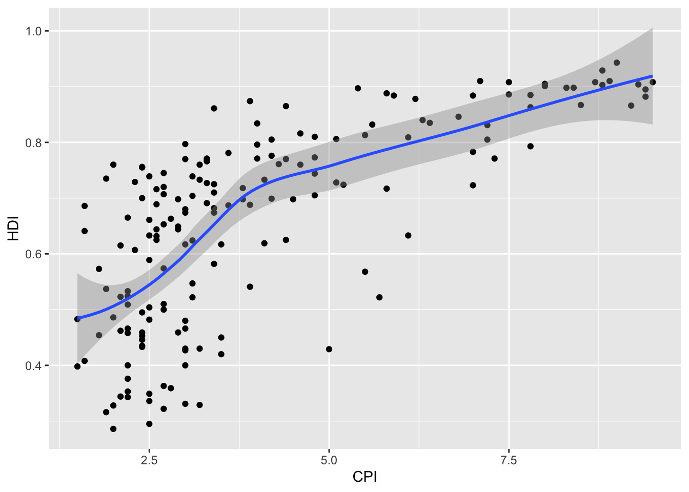
- Modify the color scale to use specific values of your choosing. Hint: see
?scale_color_manual. NOTE: you can specify color by name (e.g., “blueâ€) or by “Hex value†— see https://www.color-hex.com/.
Faceting
What is faceting?
- Faceting is
ggplot2parlance for small multiples - The idea is to create separate graphs for subsets of data
ggplot2offers two functions for creating small multiples:facet_wrap(): define subsets as the levels of a single grouping variablefacet_grid(): define subsets as the crossing of two grouping variables
- Facilitates comparison among plots, not just of geoms within a plot
What is the trend in housing prices in each state?
Start by using a technique we already know; map State to color:
There are two problems here; there are too many states to distinguish each one by color, and the lines obscure one another.
Themes
What are themes?
The ggplot2 theme system handles non-data plot elements such as:
- Axis label properties (e.g., font, size, color, etc.)
- Plot background
- Facet label background
- Legend appearance
Built-in themes include:
theme_gray()(default)theme_bw()theme_classic()
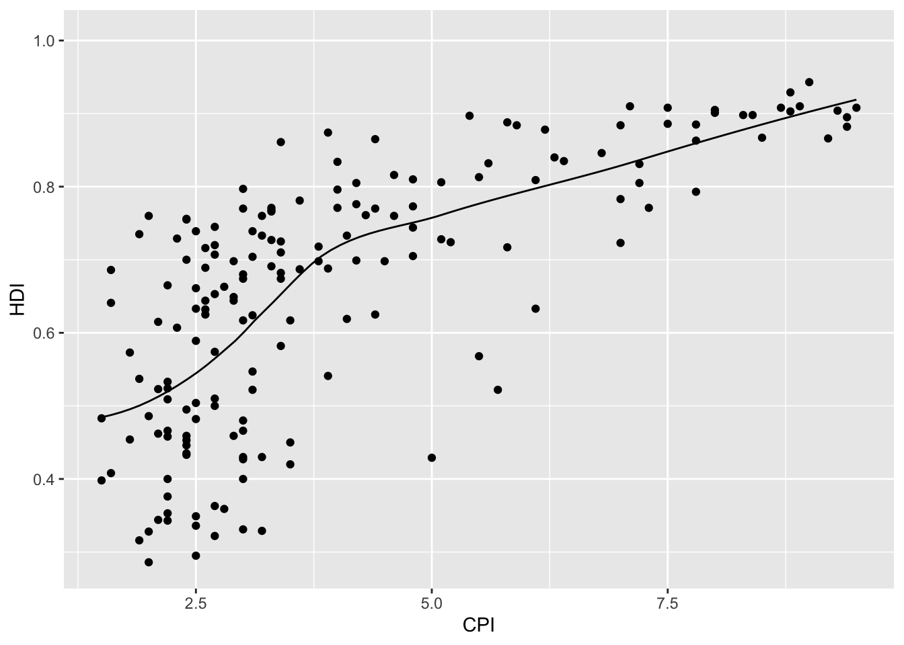
 You can see a list of available built-in themes here https://ggplot2.tidyverse.org/reference/
You can see a list of available built-in themes here https://ggplot2.tidyverse.org/reference/
Overriding theme defaults
Specific theme elements can be overridden using theme(). For example:
# theme(thing_to_modify = modifying_function(arg1, arg2))
p5 + theme_minimal() +
theme(text = element_text(color = "red")) All theme options are documented in ?theme. We can also see the
existing default values using:
Creating & saving new themes
You can create new themes, as in the following example:
theme_new <- theme_bw() +
theme(plot.background = element_rect(size = 1, color = "blue", fill = "black"),
text = element_text(size = 12, color = "ivory"),
axis.text.y = element_text(colour = "purple"),
axis.text.x = element_text(colour = "red"),
panel.background = element_rect(fill = "pink"),
strip.background = element_rect(fill = muted("orange")))
p5 + theme_new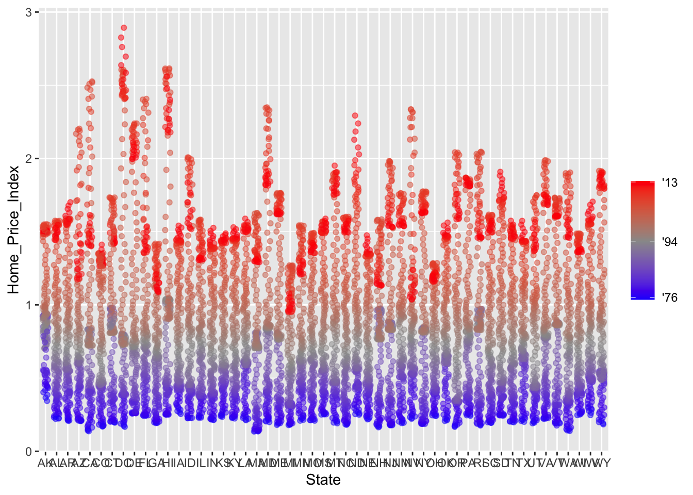
Saving plots
We can save a plot to either a vector (e.g., pdf, eps, ps, svg)
or raster (e.g., jpg, png, tiff, bmp, wmf) graphics file using
the ggsave() function:
The #1 FAQ
Map aesthetic to different columns
The most frequently asked question goes something like this: I have two variables in my data.frame, and I’d like to plot them as separate points, with different color depending on which variable it is. How do I do that?
Wrong
Fixing, rather than mapping, the color aesthetic:
- Produces verbose code when using many colors
- Results in no legend being produced
- Means you cannot change color scales
housing_byyear <-
housing %>%
group_by(Date) %>%
summarize(Home_Value_Mean = mean(Home_Value),
Land_Value_Mean = mean(Land_Value)) %>%
ungroup()
ggplot(housing_byyear, aes(x=Date)) +
geom_line(aes(y=Home_Value_Mean), color="red") +
geom_line(aes(y=Land_Value_Mean), color="blue")
Right
To avoid these pitfalls, we need to map our data to the color aesthetic. We can do this by reshaping our data from wide format to long format. Here is the logic behind this process:

Here’s the code that implements this transformation:
home_land_byyear <-
housing_byyear %>%
pivot_longer(cols = c(Home_Value_Mean, Land_Value_Mean),
names_to = "type",
values_to = "value")
ggplot(home_land_byyear, aes(x = Date, y = value, color = type)) +
geom_line()
Exercise 3
For this exercise, we’re going to use the built-in midwest dataset:
## # A tibble: 6 x 28
## PID county state area poptotal popdensity popwhite popblack popamerindian
## <int> <chr> <chr> <dbl> <int> <dbl> <int> <int> <int>
## 1 561 ADAMS IL 0.052 66090 1271. 63917 1702 98
## 2 562 ALEXA… IL 0.014 10626 759 7054 3496 19
## 3 563 BOND IL 0.022 14991 681. 14477 429 35
## 4 564 BOONE IL 0.017 30806 1812. 29344 127 46
## 5 565 BROWN IL 0.018 5836 324. 5264 547 14
## 6 566 BUREAU IL 0.05 35688 714. 35157 50 65
## # … with 19 more variables: popasian <int>, popother <int>, percwhite <dbl>,
## # percblack <dbl>, percamerindan <dbl>, percasian <dbl>, percother <dbl>,
## # popadults <int>, perchsd <dbl>, percollege <dbl>, percprof <dbl>,
## # poppovertyknown <int>, percpovertyknown <dbl>, percbelowpoverty <dbl>,
## # percchildbelowpovert <dbl>, percadultpoverty <dbl>,
## # percelderlypoverty <dbl>, inmetro <int>, category <chr>- Create a scatter plot with
areaon the x axis and the log ofpoptotalon the y axis.
- Within the
geom_point()call, map color tostate, map size to the log ofpopdensity, and fix transparency (alpha) to 0.3.
- Add a smoother and turn off plotting the confidence interval. Hint: see the
seargument togeom_smooth().
- Facet the plot by
state. Set thescalesargument tofacet_wrap()to allow separate ranges for the x-axis.
- Change the default color scale to use the discrete
RColorBrewerpalette calledSet1. Hint: see?scale_color_brewer.
- BONUS: Change the default theme to
theme_bw()and modify it so that the axis text and facet label background are blue. Hint: see?themeand especiallyaxis.textandstrip.background.
Click for Exercise 3 Solution
- Create a scatter plot with
areaon the x axis and the log ofpoptotalon the y axis.
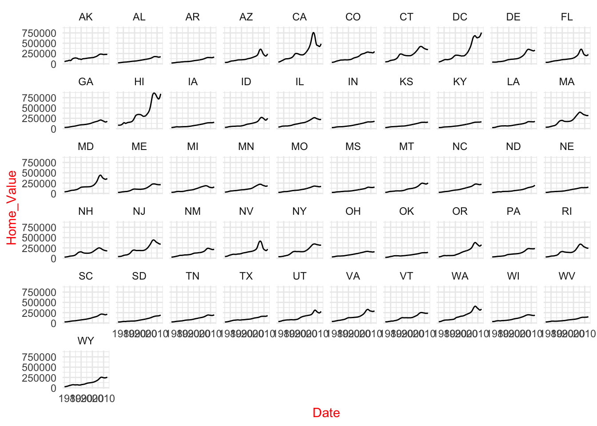
- Within the
geom_point()call, map color tostate, map size to the log ofpopdensity, and fix transparency (alpha) to 0.3.
- Add a smoother and turn off plotting the confidence interval. Hint: see the
seargument togeom_smooth().
- Facet the plot by
state. Set thescalesargument tofacet_wrap()to allow separate ranges for the x-axis.
- Change the default color scale to use the discrete
RColorBrewerpalette calledSet1. Hint: see?scale_color_brewer.
- BONUS: Change the default theme to
theme_bw()and modify it so that the axis text and facet label background are blue. Hint: see?themeand especiallyaxis.textandstrip.background.
p6 <- p6 + theme_bw() +
theme(axis.title = element_text(color = "blue", face = "bold"),
strip.background = element_rect(fill = "yellow"))Here’s the complete code for the Exercise 3 plot:
p6 <- ggplot(midwest, aes(x = area, y = log(poptotal))) +
geom_point(aes(color = state, size = log(popdensity)), alpha = 0.3) +
geom_smooth(method = "loess", se = FALSE) +
facet_wrap(~ state, scales = "free_x") +
scale_color_brewer(palette = "Set1") +
theme_bw() +
theme(axis.title = element_text(color = "blue", face = "bold"),
strip.background = element_rect(fill = "yellow"))
p6 Wrap-up
Feedback
These workshops are a work in progress, please provide any feedback to: help@iq.harvard.edu
Resources
- IQSS
- Workshops: https://www.iq.harvard.edu/data-science-services/workshop-materials
- Data Science Services: https://www.iq.harvard.edu/data-science-services
- Research Computing Environment: https://iqss.github.io/dss-rce/
- HBS
- Research Computing Services workshops: https://training.rcs.hbs.org/workshops
- Other HBS RCS resources: https://training.rcs.hbs.org/workshop-materials
- RCS consulting email: mailto:research@hbs.edu
- ggplot2
- Reference: https://ggplot2.tidyverse.org/reference/
- Cheatsheets: https://rstudio.com/wp-content/uploads/2019/01/Cheatsheets_2019.pdf
- Examples: http://r-statistics.co/Top50-Ggplot2-Visualizations-MasterList-R-Code.html
- Tutorial: https://uc-r.github.io/ggplot_intro
- Mailing list: http://groups.google.com/group/ggplot2
- Wiki: https://github.com/hadley/ggplot2/wiki
- Website: http://had.co.nz/ggplot2/
- StackOverflow: http://stackoverflow.com/questions/tagged/ggplot
R Data Wrangling
Topics
- Loading Excel worksheets
- Iterating over files
- Writing your own functions
- Filtering with regular expressions (regex)
- Reshaping data
Setup
Software and Materials
Follow the R Installation instructions and ensure that you can successfully start RStudio.
Class Structure
Informal - Ask questions at any time. Really!
Collaboration is encouraged - please spend a minute introducing yourself to your neighbors!
Prerequisites
This is an intermediate / advanced R course:
- Assumes intermediate knowledge of R
- Relatively fast-paced
Launch an R session
Start RStudio and create a new project:
- On Windows click the start button and search for RStudio. On Mac RStudio will be in your applications folder.
- In Rstudio go to
File -> New Project. - Choose
Existing Directoryand browse to the workshop materials directory on your desktop. - Choose
File -> Open Fileand select the file with the word “BLANK†in the name.
Packages
You should have already installed the tidyverse and rmarkdown
packages onto your computer before the workshop
— see R Installation.
Now let’s load these packages into the search path of our R session.
Workshop Outline
Example data
The UK Office for National Statistics provides yearly data on the most popular boys names going back to 1996. The data is provided separately for boys and girls and is stored in Excel spreadsheets.
Overall Goal
Our mission is to extract and graph the top 100 boys names in England and Wales for every year since 1996.
Exercise 0: Problems with the data
There are several things that make our goal challenging. Let’s take a look at the data:
Locate the files named
1996boys_tcm77-254026.xlsxand2015boysnamesfinal.xlsxand open them separately in a spreadsheet program.(If you don’t have a spreadsheet program installed on your computer you can download one from https://www.libreoffice.org/download/download/).
What issues can you identify that might make working with these data difficult?
In what ways is the format different between the two files?
Click for Exercise 0 Solution
- Multiple Excel sheets in each file, each with a different name, but each file contains a
Table 1. - The data does not start on row one. Headers are on row 7, followed by a blank line, followed by the actual data.
- The data is stored in an inconvenient way, with ranks 1-50 in the first set of columns and ranks 51-100 in a second set of columns.
- The second worksheet
2015boysnamesfinal.xlsxcontains extra columns between the data of interest, resulting in the second set of columns (ranks 51-100) being placed in a different position. - The year from which the data comes is only reported in the Excel file name, not within the data itself.
- There are notes below the data.
These differences will make it more difficult to automate re-arranging the data since we have to write code that can handle different input formats.
Steps to accomplish the goal of extracting and graphing the top 100 boys names in England and Wales for every year since 1996:
Explore example data to highlight problems (already done!)
Reading data from multiple Excel worksheets into R data frames
- list Excel file names in a character vector
- read Excel sheetnames into a list of character vectors
- read Excel data for “Table 1†only into a list of data frames
Clean up data within each R data frame
- sort and merge columns within each data frame inside the list
- drop missing values from each data frame
- reshape data format from wide to long
Organize the data into one large data frame and store it
- create a year column within each data frame within the list
- append all the data frames in the list into one large data frame
NOTE: please make sure you close the Excel files before continuing with the workshop, otherwise you may encounter issues with file paths when reading the data into R.
Working with Excel worksheets
GOAL: To learn how to read data from multiple Excel worksheets into R data frames. In particular:
- List Excel file names in a character vector
- Read Excel sheetnames into a list of character vectors
- Read Excel data for “Table 1†only into a list of data frames
As you can see, the data is in quite a messy state. Note that this is not a contrived example; this is exactly the way the data came to us from the UK government website! Let’s start cleaning and organizing it.
Each Excel file contains a worksheet with the boy names data we want. Each file also contains additional supplemental worksheets that we are not currently interested in. As noted above, the worksheet of interest differs from year to year, but always has “Table 1†in the sheet name.
The first step is to get a character vector of file names.
Now that we’ve told R the names of the data files, we can start working with them. For example, the first file is
## [1] "dataSets/boys/1996boys_tcm77-254026.xlsx"and we can use the excel_sheets() function from the readxl package
within tidyverse to list the worksheet names from this file.
## [1] "Contents" "Table 1 - Top 100 boys, E&W"
## [3] "Table 2-Top 10 boys by month" "Table 3 - Boys names - E&W"Iterating with map()
Now that we know how to retrieve the names of the worksheets in an Excel file, we could start writing code to extract the sheet names from each file, e.g.,
## [1] "Contents" "Table 1 - Top 100 boys, E&W"
## [3] "Table 2-Top 10 boys by month" "Table 3 - Boys names - E&W"## [1] "Contents" "Table 1 - Top 100 boys, E&W"
## [3] "Table 2 - Top 100 boys, England" "Table 3 - Top 100 boys, Wales"
## [5] "Table 4 - Top 10 boys by region" "Table 5 - Top 10 boys by month"
## [7] "Table 6 - Boys names - E&W"## [1] "Contents" "Metadata" "Terms and Conditions"
## [4] "Table 1" "Table 2" "Table 3"
## [7] "Table 4" "Table 5" "Table 6"
## [10] "Related Publications"This is not a terrible idea for a small number of files, but it is
more convenient to let R do the iteration for us. We could use a for loop,
or sapply(), but the map() family of functions from the purrr
package within tidyverse gives us a more consistent alternative,
so we’ll use that.
# map(object to iterate over, function that does task within each iteration)
map(boy_file_names, excel_sheets)## [[1]]
## [1] "Contents" "Table 1 - Top 100 boys, E&W"
## [3] "Table 2-Top 10 boys by month" "Table 3 - Boys names - E&W"
##
## [[2]]
## [1] "Contents" "Table 1 - Top 100 boys, E&W"
## [3] "Table 2 - Top 100 boys, England" "Table 3 - Top 100 boys, Wales"
## [5] "Table 4 - Top 10 boys by region" "Table 5 - Top 10 boys by month"
## [7] "Table 6 - Boys names - E&W"
##
## [[3]]
## [1] "Contents" "Table 1 - Top 100 boys' names"
## [3] "Table 2 - Top 100 boys, England" "Table 3 - Top 100 boys, Wales"
## [5] "Table 4 - Top 10 boys by region" "Table 5 - Top 10 boys by month"
## [7] "Table 6 - Boys names - E&W"
##
## [[4]]
## [1] "Contents" "Table 1 - Top 100 boys' names"
## [3] "Table 2 - Top 100 boys, England" "Table 3 - Top 100 boys, Wales"
## [5] "Table 4 - Top 10 boys by region" "Table 5 - Top 10 boys by month"
## [7] "Table 6 - Boys names - E&W"
##
## [[5]]
## [1] "Contents" "Table 1 - Top 100 boys, E&W"
## [3] "Table 2 - Top 100 boys, England" "Table 3 - Top 100 boys, Wales"
## [5] "Table 4 - Top 10 boys by region" "Table 5 - Top 10 boys by month"
## [7] "Table 6 - Boys names - E&W"
##
## [[6]]
## [1] "Contents" "Table 1 - Top 100 boys, E&W"
## [3] "Table 2 - Top 100 boys, England" "Table 3 - Top 100 boys, Wales"
## [5] "Table 4 - Top 10 boys by region" "Table 5 - Top 10 boys by month"
## [7] "Table 6 - Boys names - E&W"
##
## [[7]]
## [1] "Contents" "Table 1 - Top 100 boys, E&W"
## [3] "Table 2 - Top 100 boys, England" "Table 3 - Top 100 boys, Wales"
## [5] "Table 4 - Top 10 boys by region" "Table 5 - Top 10 boys by month"
## [7] "Table 6 - Boys names - E&W"
##
## [[8]]
## [1] "Contents" "Table 1 - Top 100 boys, E&W"
## [3] "Table 2 - Top 100 boys, England" "Table 3 - Top 100 boys, Wales"
## [5] "Table 4 - Top 10 boys by region" "Table 5 - Top 10 boys by month"
## [7] "Table 6 - Boys names - E&W"
##
## [[9]]
## [1] "Contents" "Table 1 - Top 100 boys, E&W"
## [3] "Table 2 - Top 100 boys, England" "Table 3 - Top 100 boys, Wales"
## [5] "Table 4 - Top 10 boys by region" "Table 5 - Top 10 boys by month"
## [7] "Table 6 - Boys names - E&W"
##
## [[10]]
## [1] "Contents" "Table 1 - Top 100 boys, E&W"
## [3] "Table 2 - Top 100 boys, England" "Table 3 - Top 100 boys, Wales"
## [5] "Table 4 - Top 10 boys by region" "Table 5 - Top 10 boys by month"
## [7] "Table 6 - Boys names - E&W"
##
## [[11]]
## [1] "Contents" "Table 1 - Top 100 boys, E&W"
## [3] "Table 2 - Top 100 boys, England" "Table 3 - Top 100 boys, Wales"
## [5] "Table 4 - Top 10 boys by region" "Table 5 - Top 10 boys by month"
## [7] "Table 6 - Boys names - E&W"
##
## [[12]]
## [1] "Contents" "Table 1 - Top 100 boys, E&W"
## [3] "Table 2 - Top 100 boys, England" "Table 3 - Top 100 boys, Wales"
## [5] "Table 4 - Top 10 boys by region" "Table 5 - Top 10 boys by month"
## [7] "Table 6 - Boys names - E&W"
##
## [[13]]
## [1] "Contents" "Table 1 - Top 100 boys' names"
## [3] "Table 2 - Top 100 boys, England" "Table 3 - Top 100 boys, Wales"
## [5] "Table 4 - Top 10 boys by region" "Table 5 - Top 10 boys by month"
## [7] "Table 6 - Boys names - E&W"
##
## [[14]]
## [1] "Contents" "Table 1 - Top 100 boys' names"
## [3] "Table 2 - Top 100 boys, England" "Table 3 - Top 100 boys, Wales"
## [5] "Table 4 - Top 10 boys by region" "Table 5 - Top 10 boys by month"
## [7] "Table 6 - Boys names - E&W"
##
## [[15]]
## [1] "Contents" "Table 1 - Top 100 boys, E&W"
## [3] "Table 2 - Top 100 boys, England" "Table 3 - Top 100 boys, Wales"
## [5] "Table 4 - Top 10 boys by region" "Table 5 - Top 10 boys by month"
## [7] "Table 6 - Boys names - E&W"
##
## [[16]]
## [1] "Contents" "Metadata"
## [3] "Terms and Conditions" "Table 1 - Top 100 boys, E&W"
## [5] "Table 2 - Top 100 boys, England" "Table 3 - Top 100 boys, Wales"
## [7] "Table 4 - Top 10 boys by region" "Table 5 - Top 10 boys by month"
## [9] "Table 6 - Boys names - E&W" "Related Publications"
##
## [[17]]
## [1] "Contents" "Metadata"
## [3] "Terms and Conditions" "Table 1 - Top 100 boys, E&W"
## [5] "Table 2 - Top 100 boys, England" "Table 3 - Top 100 boys, Wales"
## [7] "Table 4 - Top 10 boys by region" "Table 5 - Top 10 boys by month"
## [9] "Table 6 - Boys names - E&W" "Related Publications"
##
## [[18]]
## [1] "Contents" "Metadata"
## [3] "Terms and Conditions" "Table 1 - Top 100 boys, E&W"
## [5] "Table 2 - Top 100 boys, England" "Table 3 - Top 100 boys, Wales"
## [7] "Table 4 - Top 10 boys by region" "Table 5 - Top 10 boys by month"
## [9] "Table 6 - Boys names - E&W" "Related Publications"
##
## [[19]]
## [1] "Contents" "Metadata"
## [3] "Terms and Conditions" "Table 1 - Top 100 boys, E&W"
## [5] "Table 2 - Top 100 boys, England" "Table 3 - Top 100 boys, Wales"
## [7] "Table 4 - Top 10 boys by region" "Table 5 - Top 10 boys by month"
## [9] "Table 6 - Boys names - E&W" "Related Publications"
##
## [[20]]
## [1] "Contents" "Metadata" "Terms and Conditions"
## [4] "Table 1" "Table 2" "Table 3"
## [7] "Table 4" "Table 5" "Table 6"
## [10] "Related Publications"Filtering strings using regex
To extract the correct worksheet names we need a way to extract strings containing “Table 1â€.
Base R provides some string manipulation capabilities
(see ?regex, ?sub and ?grep), but we will use the
stringr package within tidyverse because it is more
user-friendly. stringr provides functions to:
- detect
- locate
- extract
- match
- replace
- combine
- split
strings. Here we want to detect the pattern “Table 1â€, and only
return elements with this pattern. We can do that using the
str_subset() function:
- The first argument to
str_subset()is character vector we want to search in. - The second argument is a regular expression matching the pattern we want to retain.
If you are not familiar with regular expressions (regex), http://www.regexr.com/ is a good place to start. Regex is essentially just a programmatic way of doing operations like “find†or “find and replace†in MS Word or Excel.
Now that we know how to filter character vectors using str_subset() we can
identify the correct sheet in a particular Excel file. For example,
# str_subset(character_vector, regex_pattern)
# nesting functions
str_subset(excel_sheets(boy_file_names[1]), pattern = "Table 1")## [1] "Table 1 - Top 100 boys, E&W"## [1] "Table 1 - Top 100 boys, E&W"Writing your own functions
The next step is to retrieve worksheet names and subset them.
The map* functions are useful when you want to apply a function to a
vector of inputs and obtain the return values for each input. This
is very convenient when a function already exists that does exactly what you
want. In the examples above we mapped the excel_sheets() function to
the elements of a character vector containing file names.
However, there is no function that both:
- Retrieves worksheet names, and
- Subsets the names
So, we will have to write one. Fortunately, writing functions in R is easy. Functions require 3 elements:
- A name
- One or more arguments
- A body containing computations
Anatomy of a function:
function_name <- function(arg1, arg2, ....) {
body of function # where stuff happens
return( results )
}Simple examples:
## [1] 1 4 9 16 25 36 49 64 81 100## [1] 43 46 51 58 67 78 91 106 123 142Examples using the Excel data:
get_data_sheet_name <- function(file, term){
excel_sheets(file) %>% str_subset(pattern = term)
}
# the goal is generalization
get_data_sheet_name(boy_file_names[1], term = "Table 1")## [1] "Table 1 - Top 100 boys, E&W"## [1] "Table 2-Top 10 boys by month"Now we can map this new function over our vector of file names.
# map(object to iterate over,
# function that does task within each iteration,
# arguments to previous function)
map(boy_file_names, # list object
get_data_sheet_name, # function
term = "Table 1") # argument to previous function## [[1]]
## [1] "Table 1 - Top 100 boys, E&W"
##
## [[2]]
## [1] "Table 1 - Top 100 boys, E&W"
##
## [[3]]
## [1] "Table 1 - Top 100 boys' names"
##
## [[4]]
## [1] "Table 1 - Top 100 boys' names"
##
## [[5]]
## [1] "Table 1 - Top 100 boys, E&W"
##
## [[6]]
## [1] "Table 1 - Top 100 boys, E&W"
##
## [[7]]
## [1] "Table 1 - Top 100 boys, E&W"
##
## [[8]]
## [1] "Table 1 - Top 100 boys, E&W"
##
## [[9]]
## [1] "Table 1 - Top 100 boys, E&W"
##
## [[10]]
## [1] "Table 1 - Top 100 boys, E&W"
##
## [[11]]
## [1] "Table 1 - Top 100 boys, E&W"
##
## [[12]]
## [1] "Table 1 - Top 100 boys, E&W"
##
## [[13]]
## [1] "Table 1 - Top 100 boys' names"
##
## [[14]]
## [1] "Table 1 - Top 100 boys' names"
##
## [[15]]
## [1] "Table 1 - Top 100 boys, E&W"
##
## [[16]]
## [1] "Table 1 - Top 100 boys, E&W"
##
## [[17]]
## [1] "Table 1 - Top 100 boys, E&W"
##
## [[18]]
## [1] "Table 1 - Top 100 boys, E&W"
##
## [[19]]
## [1] "Table 1 - Top 100 boys, E&W"
##
## [[20]]
## [1] "Table 1"Reading Excel data files
Now that we know the correct worksheet from each file, we can actually
read those data into R. We can do that using the read_excel() function.
We’ll start by reading the data from the first file, just to check
that it works. Recall that the actual data starts on row 7, so we want
to skip the first 6 rows. We can use the glimpse() function from
the dplyr package within tidyverse to view the output.
temp <- read_excel(
path = boy_file_names[1],
sheet = get_data_sheet_name(boy_file_names[1], term = "Table 1"),
skip = 6
)
glimpse(temp)## Rows: 59
## Columns: 7
## $ ...1 <chr> NA, "1", "2", "3", "4", "5", "6", "7", "8", "9", "10", "11"…
## $ Name...2 <chr> NA, "JACK", "DANIEL", "THOMAS", "JAMES", "JOSHUA", "MATTHEW…
## $ Count...3 <dbl> NA, 10779, 10338, 9603, 9385, 7887, 7426, 6496, 6193, 6161,…
## $ ...4 <lgl> NA, NA, NA, NA, NA, NA, NA, NA, NA, NA, NA, NA, NA, NA, NA,…
## $ ...5 <dbl> NA, 51, 52, 53, 54, 55, 56, 57, 58, 59, 60, 61, 62, 63, 64,…
## $ Name...6 <chr> NA, "DOMINIC", "NICHOLAS", "BRANDON", "RHYS", "MARK", "MAX"…
## $ Count...7 <dbl> NA, 1519, 1385, 1337, 1259, 1222, 1192, 1186, 1135, 1128, 1…Note that R has added a suffix to each column name ...1, ...2,
...3, etc. because duplicate names are not allowed, so the suffix serves
to disambiguate. The trailing number represents the index of the column.
Exercise 1
- Write a function called
read_boys_namesthat takes a file name as an argument and reads the worksheet containing “Table 1†from that file. Don’t forget to skip the first 6 rows.
- Test your function by using it to read one of the boys names Excel files.
- Use the
map()function to create a list of data frames calledboysNames
from all the Excel files, using the function you wrote in step 1.
Click for Exercise 1 Solution
- Write a function that takes a file name as an argument and reads the worksheet containing “Table 1†from that file.
read_boys_names <- function(file, sheet_name) {
read_excel(
path = file,
sheet = get_data_sheet_name(file, term = sheet_name),
skip = 6
)
}- Test your function by using it to read one of the boys names Excel files.
## Rows: 59
## Columns: 7
## $ ...1 <chr> NA, "1", "2", "3", "4", "5", "6", "7", "8", "9", "10", "11"…
## $ Name...2 <chr> NA, "JACK", "DANIEL", "THOMAS", "JAMES", "JOSHUA", "MATTHEW…
## $ Count...3 <dbl> NA, 10779, 10338, 9603, 9385, 7887, 7426, 6496, 6193, 6161,…
## $ ...4 <lgl> NA, NA, NA, NA, NA, NA, NA, NA, NA, NA, NA, NA, NA, NA, NA,…
## $ ...5 <dbl> NA, 51, 52, 53, 54, 55, 56, 57, 58, 59, 60, 61, 62, 63, 64,…
## $ Name...6 <chr> NA, "DOMINIC", "NICHOLAS", "BRANDON", "RHYS", "MARK", "MAX"…
## $ Count...7 <dbl> NA, 1519, 1385, 1337, 1259, 1222, 1192, 1186, 1135, 1128, 1…- Use the
map()function to read data from all the Excel files, using the function you wrote in step 1.
Data cleanup
GOAL: To learn how to clean up data within each R data frame. In particular:
- Sort and merge columns within each data frame inside the list
- Drop missing values from each data frame
- Reshape data format from wide to long
Now that we’ve read in the data, we can see that there are some problems we need to fix. Specifically, we need to:
- fix column names
- get rid of blank row at the top and the notes at the bottom
- get rid of extraneous “changes in rank†columns if they exist
- transform the side-by-side tables layout to a single table
# Rank 1:50 --- Names / Counts are in columns 2 and 3
# Rank 51:100 --- Names / Counts are in columns 6 and 7
glimpse(boysNames[[1]]) ## Rows: 59
## Columns: 7
## $ ...1 <chr> NA, "1", "2", "3", "4", "5", "6", "7", "8", "9", "10", "11"…
## $ Name...2 <chr> NA, "JACK", "DANIEL", "THOMAS", "JAMES", "JOSHUA", "MATTHEW…
## $ Count...3 <dbl> NA, 10779, 10338, 9603, 9385, 7887, 7426, 6496, 6193, 6161,…
## $ ...4 <lgl> NA, NA, NA, NA, NA, NA, NA, NA, NA, NA, NA, NA, NA, NA, NA,…
## $ ...5 <dbl> NA, 51, 52, 53, 54, 55, 56, 57, 58, 59, 60, 61, 62, 63, 64,…
## $ Name...6 <chr> NA, "DOMINIC", "NICHOLAS", "BRANDON", "RHYS", "MARK", "MAX"…
## $ Count...7 <dbl> NA, 1519, 1385, 1337, 1259, 1222, 1192, 1186, 1135, 1128, 1…# Rank 1:50 --- Names / Counts are in columns 2 and 3
# Rank 51:100 --- Names / Counts are in columns 7 and 8
glimpse(boysNames[[10]]) ## Rows: 61
## Columns: 9
## $ ...1 <chr> NA, "1", "2", "3", "4", "5", "6", "7", "8", "9", "10…
## $ Name...2 <chr> NA, "JACK", "JOSHUA", "THOMAS", "JAMES", "OLIVER", "…
## $ Count...3 <dbl> NA, 7434, 7167, 6792, 5654, 5516, 5270, 5219, 5106, …
## $ `since 2004...4` <chr> NA, "-", "-", "-", "-", "+2", "-1", "-1", "-", "+2",…
## $ ...5 <lgl> NA, NA, NA, NA, NA, NA, NA, NA, NA, NA, NA, NA, NA, …
## $ ...6 <dbl> NA, 51, 52, 53, 53, 55, 56, 57, 58, 59, 60, 61, 62, …
## $ Name...7 <chr> NA, "NOAH", "MUHAMMAD", "ALEX", "ISAAC", "OSCAR", "R…
## $ Count...8 <dbl> NA, 1346, 1318, 1302, 1302, 1262, 1256, 1172, 1126, …
## $ `since 2004...9` <chr> NA, "+23", "-1", "-7", "+5", "+4", "-4", "+6", "+17"…# Rank 1:50 --- Names / Counts are in columns 2 and 3
# Rank 51:100 --- Names / Counts are in columns 8 and 9
glimpse(boysNames[[20]]) ## Rows: 61
## Columns: 11
## $ Rank...1 <chr> NA, "1", "2", "3", "4", "5", "6", "7", "8", "9", "1…
## $ Name...2 <chr> NA, "OLIVER", "JACK", "HARRY", "GEORGE", "JACOB", "…
## $ Count...3 <dbl> NA, 6941, 5371, 5308, 4869, 4850, 4831, 4148, 4083,…
## $ `since 2014...4` <chr> NA, " ", " ", " ", "+3 ", "-1 ", "-1 ", "+4 ", "…
## $ `since 2005...5` <chr> NA, "+4 ", "-1 ", "+6 ", "+13 ", "+16 ", "+6 ", "+4…
## $ ...6 <lgl> NA, NA, NA, NA, NA, NA, NA, NA, NA, NA, NA, NA, NA,…
## $ Rank...7 <chr> NA, "51", "52", "53", "54", "55", "56", "57", "58",…
## $ Name...8 <chr> NA, "REUBEN", "HARLEY", "LUCA", "MICHAEL", "HUGO", …
## $ Count...9 <dbl> NA, 1188, 1175, 1167, 1165, 1153, 1148, 1112, 1095,…
## $ `since 2014...10` <chr> NA, " ", "-7 ", "+5 ", "-2 ", "+15 ", "-10 ", "+7 …
## $ `since 2005...11` <chr> NA, "+51* ", "+18 ", "+30 ", "-12 ", "+124* ", "-37…In short, we want to go from this:

to this:

There are many ways to do this kind of data manipulation in R. We’re
going to use the dplyr and tidyr packages from within tidyverse
to make our lives easier.
Selecting columns
Next we want to retain just the Name...2, Name...6, Count...3 and Count...7 columns.
We can do that using the select() function:
## # A tibble: 59 x 7
## ...1 Name...2 Count...3 ...4 ...5 Name...6 Count...7
## <chr> <chr> <dbl> <lgl> <dbl> <chr> <dbl>
## 1 <NA> <NA> NA NA NA <NA> NA
## 2 1 JACK 10779 NA 51 DOMINIC 1519
## 3 2 DANIEL 10338 NA 52 NICHOLAS 1385
## 4 3 THOMAS 9603 NA 53 BRANDON 1337
## 5 4 JAMES 9385 NA 54 RHYS 1259
## 6 5 JOSHUA 7887 NA 55 MARK 1222
## 7 6 MATTHEW 7426 NA 56 MAX 1192
## 8 7 RYAN 6496 NA 57 DYLAN 1186
## 9 8 JOSEPH 6193 NA 58 HENRY 1135
## 10 9 SAMUEL 6161 NA 59 PETER 1128
## # … with 49 more rows## # A tibble: 59 x 4
## Name...2 Name...6 Count...3 Count...7
## <chr> <chr> <dbl> <dbl>
## 1 <NA> <NA> NA NA
## 2 JACK DOMINIC 10779 1519
## 3 DANIEL NICHOLAS 10338 1385
## 4 THOMAS BRANDON 9603 1337
## 5 JAMES RHYS 9385 1259
## 6 JOSHUA MARK 7887 1222
## 7 MATTHEW MAX 7426 1192
## 8 RYAN DYLAN 6496 1186
## 9 JOSEPH HENRY 6193 1135
## 10 SAMUEL PETER 6161 1128
## # … with 49 more rowsData types and structures
We’ve now encountered several different data types and data structures. Let’s take a step back and survey the options available in R.
Data structures:
In R, the most foundational data structure is the vector. Vectors are containers that can hold a collection of values. Vectors come in two basic forms:
- atomic: only hold elements of the same type; they are homogeneous. The
c()function can be used to create atomic vectors. - list: can hold elements of different types; they are heterogeneous. The
list()function can be used to create list vectors.
NULL is closely related to vectors and often serves the role of a zero length vector.

From these two basic forms, the following six structures are derived:
| Type | Elements | Description |
|---|---|---|
| atomic vector | homogeneous | contains elements of the same type, one of: character, integer, double, logical |
| array | homogeneous | an atomic vector with attributes giving dimensions (1, 2, or >2) |
| matrix | homogeneous | an array with 2 dimensions |
| factor | homogeneous | an atomic integer vector containing only predefined values, storing categorical data |
| list | heterogeneous | a container whose elements can encompass any mixture of data types |
| data.frame | heterogeneous | a rectangular list with elements (columns) containing atomic vectors of equal length |
Each vector can have attributes, which are a named list of metadata that can include the vector’s dimensions and its class. The latter is a property assigned to an object that determines how generic functions operate with it, and thus which methods are available for it. The class of an object can be queried using the class() function. You can learn more details about R data structures here: https://adv-r.hadley.nz/vectors-chap.html
Data types:
There are four primary types of atomic vectors. Collectively, integer and double vectors are known as numeric vectors. You can query the type of an object using the typeof() function.
| Type | Description |
|---|---|
| character | “aâ€, “swc†|
| integer | 2L (the L tells R to store this as an integer) |
| double (floating point) | 2, 15.5 |
| logical | TRUE, FALSE |
Coercion:
If heterogeneous elements are stored in an atomic vector, R will coerce the vector to the simplest type required to store all the information. The order of coercion is roughly: logical -> integer -> double -> character -> list. For example:
## [1] "double"## [1] "character"List indexing
Now that we know about data structures more generally, let’s focus on the list structure we created for boysNames.
Why are we using double brackets [[ to index this list object, instead of the single brackets [ we used to index atomic vectors?

# various data structures
numbers <- 1:10
letters <- LETTERS[1:4]
dat <- head(mtcars)
x <- 237L
# combine in a list
mylist <- list(numbers, letters, dat, x)
# indexing the list
mylist[2]## [[1]]
## [1] "A" "B" "C" "D"## [1] "list"## [1] "A" "B" "C" "D"## [1] "character"Dropping missing values
Next we want to remove blank rows and rows used for notes. An easy way
to do that is to use drop_na() from the tidyr package within tidyverse
to remove rows with missing values.
## # A tibble: 59 x 4
## Name...2 Name...6 Count...3 Count...7
## <chr> <chr> <dbl> <dbl>
## 1 <NA> <NA> NA NA
## 2 JACK DOMINIC 10779 1519
## 3 DANIEL NICHOLAS 10338 1385
## 4 THOMAS BRANDON 9603 1337
## 5 JAMES RHYS 9385 1259
## 6 JOSHUA MARK 7887 1222
## 7 MATTHEW MAX 7426 1192
## 8 RYAN DYLAN 6496 1186
## 9 JOSEPH HENRY 6193 1135
## 10 SAMUEL PETER 6161 1128
## # … with 49 more rows## # A tibble: 50 x 4
## Name...2 Name...6 Count...3 Count...7
## <chr> <chr> <dbl> <dbl>
## 1 JACK DOMINIC 10779 1519
## 2 DANIEL NICHOLAS 10338 1385
## 3 THOMAS BRANDON 9603 1337
## 4 JAMES RHYS 9385 1259
## 5 JOSHUA MARK 7887 1222
## 6 MATTHEW MAX 7426 1192
## 7 RYAN DYLAN 6496 1186
## 8 JOSEPH HENRY 6193 1135
## 9 SAMUEL PETER 6161 1128
## 10 LIAM STEPHEN 5802 1122
## # … with 40 more rowsExercise 2
- Write a function called
namecountthat takes a data frame as an argument and returns a modified version, which keeps only columns that include the stringsNameandCountin the column names. HINT: see the?matchesfunction.
- Test your function on the first data frame in the list of boys names data.
- Use the
map()function to each data frame in the list of boys names data and save it to the list calledboysNames.
Click for Exercise 2 Solution
- Write a function that takes a data frame as an argument and returns a modified version, which keeps only columns that include the strings
NameandCountin the column names. HINT: see the?matchesfunction.
- Test your function on the first data frame in the list of boys names data.
## # A tibble: 50 x 4
## Name...2 Name...6 Count...3 Count...7
## <chr> <chr> <dbl> <dbl>
## 1 JACK DOMINIC 10779 1519
## 2 DANIEL NICHOLAS 10338 1385
## 3 THOMAS BRANDON 9603 1337
## 4 JAMES RHYS 9385 1259
## 5 JOSHUA MARK 7887 1222
## 6 MATTHEW MAX 7426 1192
## 7 RYAN DYLAN 6496 1186
## 8 JOSEPH HENRY 6193 1135
## 9 SAMUEL PETER 6161 1128
## 10 LIAM STEPHEN 5802 1122
## # … with 40 more rows- Use the
map()function to each data frame in the list of boys names data.
Reshaping from wide to long
Our final task is to re-arrange the data so that it is all in a single
table instead of in two side-by-side tables. For many similar tasks
the gather() function in the tidyr package is useful, but in this
case we will be better off using a combination of select() and
bind_rows(). Here’s the logic behind this step:

Here’s the code that implements the transformation:
## # A tibble: 50 x 4
## Name...2 Name...6 Count...3 Count...7
## <chr> <chr> <dbl> <dbl>
## 1 JACK DOMINIC 10779 1519
## 2 DANIEL NICHOLAS 10338 1385
## 3 THOMAS BRANDON 9603 1337
## 4 JAMES RHYS 9385 1259
## 5 JOSHUA MARK 7887 1222
## 6 MATTHEW MAX 7426 1192
## 7 RYAN DYLAN 6496 1186
## 8 JOSEPH HENRY 6193 1135
## 9 SAMUEL PETER 6161 1128
## 10 LIAM STEPHEN 5802 1122
## # … with 40 more rowsfirst_columns <- select(boysNames[[1]], Name = Name...2, Count = Count...3)
second_columns <- select(boysNames[[1]], Name = Name...6, Count = Count...7)
bind_rows(first_columns, second_columns)## # A tibble: 100 x 2
## Name Count
## <chr> <dbl>
## 1 JACK 10779
## 2 DANIEL 10338
## 3 THOMAS 9603
## 4 JAMES 9385
## 5 JOSHUA 7887
## 6 MATTHEW 7426
## 7 RYAN 6496
## 8 JOSEPH 6193
## 9 SAMUEL 6161
## 10 LIAM 5802
## # … with 90 more rowsExercise 3
Cleanup all the data
In the previous examples we learned how to drop empty rows with
drop_na(), select only relevant columns with select(), and re-arrange
our data with select() and bind_rows(). In each case we applied the
changes only to the first element of our boysNames list.
NOTE: some Excel files include extra blank columns between the first and second
set of Name and Count columns, resulting in different numeric suffixes
for the second set of columns. You will need to use a regular expression
to match each of these different column names. HINT: see the ?matches
function.
- Create a new function called
cleanupNamesDatathat:
# 1) subsets data to include only those columns that include the term `Name` and `Count` and apply listwise deletion
# 2) subset two separate data frames, with first and second set of `Name` and `Count` columns
# 3) append the two datasets- Your task now is to use the
map()function to apply each of these transformations to all the elements inboysNames.
Click for Exercise 3 Solution
- Create a new function called
cleanupNamesDatathat:
cleanupNamesData <- function(file){
# subset data to include only those columns that include the term `Name` and `Count`
subsetted_file <- file %>%
select(matches("Name|Count")) %>%
drop_na()
# subset two separate data frames, with first and second set of `Name` and `Count` columns
first_columns <- select(subsetted_file, Name = Name...2, Count = Count...3)
second_columns <- select(subsetted_file, Name = matches("Name...6|Name...7|Name...8"),
Count = matches("Count...7|Count...8|Count...9"))
# append the two datasets
bind_rows(first_columns, second_columns)
}
## test it out on the second data frame in the list
boysNames[[2]] %>% glimpse() # before cleanup## Rows: 61
## Columns: 4
## $ Name...2 <chr> NA, "JACK", "JAMES", "THOMAS", "DANIEL", "JOSHUA", "MATTHEW…
## $ Count...3 <dbl> NA, 10145, 9853, 9479, 9047, 7698, 7443, 6367, 5809, 5631, …
## $ Name...7 <chr> NA, "SEAN", "DYLAN", "DOMINIC", "LOUIS", "RHYS", "NICHOLAS"…
## $ Count...8 <dbl> NA, 1388, 1380, 1359, 1325, 1291, 1274, 1244, 1241, 1158, 1…## Rows: 100
## Columns: 2
## $ Name <chr> "JACK", "JAMES", "THOMAS", "DANIEL", "JOSHUA", "MATTHEW", "SAMU…
## $ Count <dbl> 10145, 9853, 9479, 9047, 7698, 7443, 6367, 5809, 5631, 5404, 51…- Your task now is to use the
map()function to apply each of these transformations to all the elements inboysNames.
Data organization & storage
GOAL: To learn how to organize the data into one large data frame and store it. In particular:
- Create a year column within each data frame within the list
- Append all the data frames in the list into one large data frame
Now that we have the data cleaned up and augmented, we can turn our attention to organizing and storing the data.
A list of data frames
Right now we have a list of data frames; one for each year. This is not a bad way to go. It has the advantage of making it easy to work with individual years; it has the disadvantage of making it more difficult to examine questions that require data from multiple years. To make the arrangement of the data clearer it helps to name each element of the list with the year it corresponds to.
## List of 6
## $ : tibble [100 × 2] (S3: tbl_df/tbl/data.frame)
## ..$ Name : chr [1:100] "JACK" "DANIEL" "THOMAS" "JAMES" ...
## ..$ Count: num [1:100] 10779 10338 9603 9385 7887 ...
## $ : tibble [100 × 2] (S3: tbl_df/tbl/data.frame)
## ..$ Name : chr [1:100] "JACK" "JAMES" "THOMAS" "DANIEL" ...
## ..$ Count: num [1:100] 10145 9853 9479 9047 7698 ...
## $ : tibble [100 × 2] (S3: tbl_df/tbl/data.frame)
## ..$ Name : chr [1:100] "JACK" "THOMAS" "JAMES" "DANIEL" ...
## ..$ Count: num [1:100] 9845 9468 9197 7732 7672 ...
## $ : tibble [100 × 2] (S3: tbl_df/tbl/data.frame)
## ..$ Name : chr [1:100] "JACK" "THOMAS" "JAMES" "JOSHUA" ...
## ..$ Count: num [1:100] 9785 9454 8748 7275 6935 ...
## $ : tibble [100 × 2] (S3: tbl_df/tbl/data.frame)
## ..$ Name : chr [1:100] "JACK" "THOMAS" "JAMES" "JOSHUA" ...
## ..$ Count: num [1:100] 9079 8672 7489 7097 6229 ...
## $ : tibble [100 × 2] (S3: tbl_df/tbl/data.frame)
## ..$ Name : chr [1:100] "JACK" "THOMAS" "JOSHUA" "JAMES" ...
## ..$ Count: num [1:100] 9000 8337 7182 7026 5759 ...## [1] "dataSets/boys/1996boys_tcm77-254026.xlsx"
## [2] "dataSets/boys/1997boys_tcm77-254022.xlsx"
## [3] "dataSets/boys/1998boys_tcm77-254018.xlsx"
## [4] "dataSets/boys/1999boys_tcm77-254014.xlsx"
## [5] "dataSets/boys/2000boys_tcm77-254008.xlsx"
## [6] "dataSets/boys/2001boys_tcm77-254000.xlsx"# use regex to extract years from file names
Years <- str_extract(boy_file_names, pattern = "[0-9]{4}")
Years## [1] "1996" "1997" "1998" "1999" "2000" "2001" "2002" "2003" "2004" "2005"
## [11] "2006" "2007" "2008" "2009" "2010" "2011" "2012" "2013" "2014" "2015"## NULL# assign years to list names
names(boysNames) <- Years
names(boysNames) # returns the years as list names## [1] "1996" "1997" "1998" "1999" "2000" "2001" "2002" "2003" "2004" "2005"
## [11] "2006" "2007" "2008" "2009" "2010" "2011" "2012" "2013" "2014" "2015"## List of 6
## $ 1996: tibble [100 × 2] (S3: tbl_df/tbl/data.frame)
## ..$ Name : chr [1:100] "JACK" "DANIEL" "THOMAS" "JAMES" ...
## ..$ Count: num [1:100] 10779 10338 9603 9385 7887 ...
## $ 1997: tibble [100 × 2] (S3: tbl_df/tbl/data.frame)
## ..$ Name : chr [1:100] "JACK" "JAMES" "THOMAS" "DANIEL" ...
## ..$ Count: num [1:100] 10145 9853 9479 9047 7698 ...
## $ 1998: tibble [100 × 2] (S3: tbl_df/tbl/data.frame)
## ..$ Name : chr [1:100] "JACK" "THOMAS" "JAMES" "DANIEL" ...
## ..$ Count: num [1:100] 9845 9468 9197 7732 7672 ...
## $ 1999: tibble [100 × 2] (S3: tbl_df/tbl/data.frame)
## ..$ Name : chr [1:100] "JACK" "THOMAS" "JAMES" "JOSHUA" ...
## ..$ Count: num [1:100] 9785 9454 8748 7275 6935 ...
## $ 2000: tibble [100 × 2] (S3: tbl_df/tbl/data.frame)
## ..$ Name : chr [1:100] "JACK" "THOMAS" "JAMES" "JOSHUA" ...
## ..$ Count: num [1:100] 9079 8672 7489 7097 6229 ...
## $ 2001: tibble [100 × 2] (S3: tbl_df/tbl/data.frame)
## ..$ Name : chr [1:100] "JACK" "THOMAS" "JOSHUA" "JAMES" ...
## ..$ Count: num [1:100] 9000 8337 7182 7026 5759 ...One big data frame
While storing the data in separate data frames by year makes some sense,
many operations will be easier if the data is simply stored in one big
data frame. We’ve already seen how to turn a list of data frames into a
single data.frame using bind_rows(), but there is a problem; The year
information is stored in the names of the list elements, and so
flattening the data.frames into one will result in losing the year
information! Fortunately it is not too much trouble to add the year
information to each data frame before flattening.
# apply name of the list element (.y) as a new column in the data.frame (.x)
boysNames <- imap(boysNames, ~ mutate(.x, Year = as.integer(.y)))
boysNames[1]## $`1996`
## # A tibble: 100 x 3
## Name Count Year
## <chr> <dbl> <int>
## 1 JACK 10779 1996
## 2 DANIEL 10338 1996
## 3 THOMAS 9603 1996
## 4 JAMES 9385 1996
## 5 JOSHUA 7887 1996
## 6 MATTHEW 7426 1996
## 7 RYAN 6496 1996
## 8 JOSEPH 6193 1996
## 9 SAMUEL 6161 1996
## 10 LIAM 5802 1996
## # … with 90 more rowsExercise 4
Make one big data.frame
- Turn the list of boys names data frames into a single data frame. HINT: see
?bind_rows.
- Create a new directory called
allwithindataSetsand write the data to a.csvfile. HINT: see the?dir.createand?write_csvfunctions.
- What were the five most popular names in 2013?
- How has the popularity of the name “ANDREW†changed over time?
Click for Exercise 4 Solution
- Turn the list of boys names data frames into a single data frame.
## Rows: 2,000
## Columns: 3
## $ Name <chr> "JACK", "DANIEL", "THOMAS", "JAMES", "JOSHUA", "MATTHEW", "RYAN…
## $ Count <dbl> 10779, 10338, 9603, 9385, 7887, 7426, 6496, 6193, 6161, 5802, 5…
## $ Year <int> 1996, 1996, 1996, 1996, 1996, 1996, 1996, 1996, 1996, 1996, 199…- Create a new directory called
allwithindataSetsand write the data to a.csvfile. HINT: see the?dir.createand?write_csvfunctions.
- What were the five most popular names in 2013?
## # A tibble: 6 x 3
## Name Count Year
## <chr> <dbl> <int>
## 1 OLIVER 6949 2013
## 2 JACK 6212 2013
## 3 HARRY 5888 2013
## 4 JACOB 5126 2013
## 5 CHARLIE 5039 2013
## 6 THOMAS 4591 2013- How has the popularity of the name “ANDREW†changed over time?
andrew <- filter(boysNames, Name == "ANDREW")
ggplot(andrew, aes(x = Year, y = Count)) +
geom_line() +
ggtitle("Popularity of Andrew, over time")
Complete code
- Code for Section 1: Reading data from multiple Excel worksheets into R data frames
boy_file_names <- list.files("dataSets/boys", full.names = TRUE)
get_data_sheet_name <- function(file, term){
excel_sheets(file) %>% str_subset(pattern = term)
}
read_boys_names <- function(file, sheet_name) {
read_excel(
path = file,
sheet = get_data_sheet_name(file, term = sheet_name),
skip = 6
)
}
boysNames <- map(boy_file_names, read_boys_names, sheet_name = "Table 1")- Code for Section 2: Clean up data within each R data frame
cleanupNamesData <- function(file){
# subset data to include only those columns that include the term `Name` and `Count`
subsetted_file <- file %>%
select(matches("Name|Count")) %>%
drop_na()
# subset two separate data frames, with first and second set of `Name` and `Count` columns
first_columns <- select(subsetted_file, Name = Name...2, Count = Count...3)
second_columns <- select(subsetted_file, Name = matches("Name...6|Name...7|Name...8"),
Count = matches("Count...7|Count...8|Count...9"))
# append the two datasets
bind_rows(first_columns, second_columns)
}
boysNames <- map(boysNames, cleanupNamesData)- Code for Section 3: Organize the data into one large data frame and store it
Wrap-up
Feedback
These workshops are a work in progress, please provide any feedback to: help@iq.harvard.edu
Resources
- IQSS
- Workshops: https://www.iq.harvard.edu/data-science-services/workshop-materials
- Data Science Services: https://www.iq.harvard.edu/data-science-services
- Research Computing Environment: https://iqss.github.io/dss-rce/
- HBS
- Research Computing Services workshops: https://training.rcs.hbs.org/workshops
- Other HBS RCS resources: https://training.rcs.hbs.org/workshop-materials
- RCS consulting email: mailto:research@hbs.edu
- R
- Learn from the best: http://adv-r.had.co.nz/; http://r4ds.had.co.nz/
- R documentation: http://cran.r-project.org/manuals.html
- Collection of R tutorials: http://cran.r-project.org/other-docs.html
- R for Programmers (by Norman Matloff, UC–Davis) http://heather.cs.ucdavis.edu/~matloff/R/RProg.pdf
- Calling C and Fortran from R (by Charles Geyer, UMinn) http://www.stat.umn.edu/~charlie/rc/
- State of the Art in Parallel Computing with R (Schmidberger et al.) http://www.jstatso|.org/v31/i01/paper
Python Installation
Your professional conduct is greatly appreciated. Out of respect to your fellow workshop attendees and instructors, please arrive at your workshop on time, having pre-installed all necessary software and materials. This will likely take 15-20 minutes.
Before starting any of our Python workshops, it is necessary to complete 2 tasks. Please make sure both of these tasks are completed before you attend your workshop, as, depending on your internet speed, they may take a long time.
- download and unzip class materials
- download and install Anaconda Python 3 distribution
Troubleshooting session
We will hold a troubleshooting session during the 20 minutes prior to the start of the workshop. If you are unable to complete all of the tasks, please stop by the training room during this session. Once the workshop starts we will NOT be able to give you one-to-one assistance with troubleshooting installation problems. Likewise, if you arrive late, please do NOT expect one-to-one assistance for anything covered at the beginning of the workshop.
Materials
Download class materials for your workshop:
- Python Introduction: https://github.com/IQSS/dss-workshops/raw/master/Python/PythonIntro.zip
- Python Webscraping: https://github.com/IQSS/dss-workshops/raw/master/Python/PythonWebScrape.zip
Extract materials from the zipped directory (Right-click => Extract All on Windows, double-click on Mac) and move them to your desktop.
It will be useful when you view the above materials for you to see the different file extensions on your computer. Here are instructions for enabling this:
Software
The Anaconda Python distribution is designed with data science in mind and contains a curated set of 270+ pre-installed Python packages. It is essential that you have the Anaconda Python distribution pre-installed so that we can start the workshop on time. It is also important that you have the latest version of the distribution, which currently is:
- Anaconda Python distribution version 2020.07, which contains Python version 3.8.5.
Mac OS X:
- Install Anaconda Python 3 by downloading and running this .pkg file. Accept the defaults proposed by the Anaconda installer.
Windows:
- Install Anaconda Python 3 by downloading and running this .exe file. Accept the defaults proposed by the Anaconda installer.
Linux:
- Install Anaconda Python 3 by downloading and running this .sh file. Accept the defaults proposed by the Anaconda installer.
Success? After installing, please start the Anaconda Navigator program. If you were successful with the installation, you should see a window similar to this:
To check that the installation is working correctly, click the Launch button under JupyterLab. A JupyterLab window should open in your web browser.
If you are having any difficulties with the installation, please stop by the training room 20 minutes prior to the start of the workshop.
Jupyter notebook interfaces
We will be using Jupyter Notebooks to run our Python code. Jupyter Notebooks are documents that combine text, code, images, math, and rich media and can be viewed in a browser. There are two main ways to interact with Jupyter Notebooks:
- using JupyterLab, a modern “extensible environment for interactive and reproducible computing†that runs in your web browser.
- using Jupyter Notebook, an older browser-based application.
Compared to Jupyter Notebook, JupyterLab provides a more modern, richer and more robust coding environment. For this reason, we strongly recommend that you use JupyterLab to interact with notebooks.
Launch JupyterLab
Here’s how to start JupyterLab and open a notebook within this interface (recommended):
- Start the
Anaconda Navigatorprogram - Click the
Launchbutton underJupyterLab - A browser window will open with your computer’s files listed on the left hand side of the page. Navigate to the folder with the workshop materials that you downloaded to your desktop and double-click on the folder
- Within the workshop materials folder, double-click on the file with the word “BLANK†in the name (
*_BLANK.ipynb). (If a pop-up window asks you toSelect KernelchoosePython 3kernel.) The Jupyter Notebook should now open on the right hand side of the page.
If you have technical difficulty with JupyterLab you can try the older Jupyter Notebook as a fallback by clicking the Launch button under Jupyter Notebook in step 2.
Resources
- IQSS
- Workshops: https://www.iq.harvard.edu/data-science-services/workshop-materials
- Data Science Services: https://www.iq.harvard.edu/data-science-services
- Research Computing Environment: https://iqss.github.io/dss-rce/
- HBS
- Research Computing Services workshops: https://training.rcs.hbs.org/workshops
- Other HBS RCS resources: https://training.rcs.hbs.org/workshop-materials
- RCS consulting email: mailto:research@hbs.edu
Python Introduction
Topics
- Functions
- Objects
- Assignment
- Finding help
- List and dictionary structures
- Indexing data structures
- Iterating over collections of data
- Importing packages
Setup
Software and Materials
Follow the Python Installation instructions and ensure that you can successfully start JupyterLab.
A handy cheat-sheet is available to help you look up and remember basic syntax.
Class Structure
Informal - Ask questions at any time. Really!
Collaboration is encouraged - please spend a minute introducing yourself to your neighbors!
Prerequisites
This is an introductory Python course:
- Assumes no prior knowledge of how to use Python
- We do assume you know why you want to learn Python. If you don’t, and want a comparison of Python to other statistical software, see our Data Science Tools workshop
- Relatively slow-paced
Goals
We will learn about the Python language by analyzing the text of Lewis Carroll’s Alice’s Adventures in Wonderland. In particular, our goals are to learn about:
- What Python is and how it works
- How we can interact with Python
- Foundations of the language (functions, objects, assignment, methods)
- Using methods and lists to analyze data
- Iterating over collections of data to automate repetitive tasks
- Storing related data in dictionaries (as key - value pairs)
- Importing packages to add functionality
Python basics
GOAL: To learn about the foundations of the Python language.
- What Python is and how it works
- Python interfaces
- Functions
- Objects
- Assignment
- Methods
What is Python?
- Python is a free general purpose programming language
- Python is an interpreted language, not a compiled one, meaning that all commands typed on the keyboard are directly executed without requiring to build a complete program (this is like R and unlike C, Fortran, Pascal, etc.)
- Python has existed for about 30 years
- Python is modular — most functionality is from add-on packages. So the language can be thought of as a platform for creating and running a large number of useful packages.
Why use Python?
- Relatively easy to learn
- Extremely flexible: can be used to manipulate, analyze, and visualize data, make web sites, write games, and much more (Youtube and DropBox were written in Python)
- Cutting edge machine learning tools
- Publication quality graphics
- 150,000+ add on packages covering all aspects of statistics and machine learning
- Active community of users
How does Python work?
While graphical-based statistical software (e.g., SPSS, GraphPad) immediately display
the results of an analysis, Python stores results in an object (a data structure),
so that an analysis can be done with no result displayed. Such a feature is very
useful, since a user can extract only that part of the results that is of interest
and can pass results into further analyses.
For example, if you run a series of 20 regressions and want to compare the different regression coefficients, Python can display only the estimated coefficients: thus the results may take a single line, whereas graphical-based software could open 20 results windows. In addition, these regression coefficients can be passed directly into further analyses — such as generating predictions.
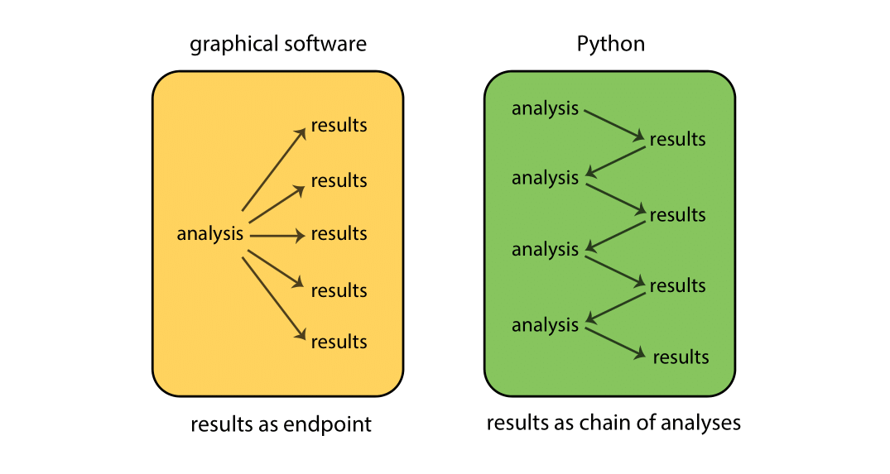
When Python is running, variables, data, functions, results, etc., are stored in memory
on the computer in the form of objects that have a name. The user can
perform actions on these objects with operators (arithmetic, logical,
comparison, etc.) and functions (which are themselves objects). Here’s a
schematic of how this all fits together:

Interfaces
Text editors, IDEs, & Notebooks
There are different ways of interacting with Python. The two main ways are through:
- text editors or Integrated Development Environments (IDEs): Text editors and IDEs are not really separate categories; as you add features to a text editor it becomes more like an IDE. Some editors/IDEs are language-specific while others are general purpose — typically providing language support via plugins. The following table lists a few popular editors/IDEs that can be used with Python. In this workshop, we will use JupyterLab, a modern “extensible environment for interactive and reproducible computing†that runs in your web browser.
| Editor / IDE | Features | Ease of use | Language support |
|---|---|---|---|
| Spyder | Excellent | Easy | Python only |
| PyCharm | Excellent | Moderate | Python only |
| JupyterLab | Good | Easy | Excellent |
| VS code | Excellent | Easy | Very good |
| Atom | Good | Moderate | Good |
| Vim | Excellent | Hard | Good |
| Emacs | Excellent | Hard | Excellent |
- Notebooks: Browser-based applications that allow you to create and share documents that contain live code, equations, visualizations, and narrative text. One popular choice is Jupyter Notebook; an open source notebook that has support for 40+ languages, but has limited features compared with the JupyterLab IDE.
Source code & literate programming
There are also several different formats available for writing code in Python. These basically boil down to a choice between:
Source code: the practice of writing code, and possibly comments, in a plain text document. In Python this is done by writing code in a text file with a
.pyextension. Writing source code has the great advantage of being simple. Souce code is the format of choice if you intend to run your code as a complete script - for example, from the command line.Literate programming: the practice of embedding computer code in a natural language document. In Python this is often done using the aformentioned Jupyter Notebook, which is a JSON document containing an ordered list of input/output cells which can contain code, text (using Markdown), mathematics, plots, and rich media, usually ending with the
.ipynbextension. Jupyter Notebooks are easy to write, human-readable, and the format of choice if you intend to run your code interactively, by running small pieces of code and looking at each output. Researchers can use Notebooks to write their journal papers, dissertations, and statistics/math class notes, since it is easy to convert into other formats later, such as HTML (for a webpage), MS Word, or PDF (via LaTeX).
Here are some resources for learning more about Jupyter Notebooks:
Launch JupyterLab
- Start the
Anaconda Navigatorprogram - Click the
Launchbutton underJupyterLab - A browser window will open with your computer’s files listed on the left hand side of the page. Navigate to the folder called
PythonIntrothat you downloaded to your desktop and double-click on the folder - Within the
PythonIntrofolder, double-click on the file with the word “BLANK†in the name (PythonIntro_BLANK.ipynb). A pop-up window will ask you toSelect Kernal— you should select the Python 3 kernal. The Jupyter Notebook should now open on the right hand side of the page
A Jupyter Notebook contains one or more cells containing notes or code. To insert a new cell click the + button in the upper left. To execute a cell, select it and press Control+Enter or click the Run button at the top.
Syntax rules
- Python is case sensitive
- Python uses white space as part of the syntax (it’s important!)
- Variable names should start with a letter (A-Z and a-z) and can include letters, digits (0-9), and underscores (_)
- Comments can be inserted using a hash
#symbol - Functions must be written with parentheses, even
if there is nothing within them; for example:
len()
Function calls
Functions perform actions — they take some input, called arguments and return some
output (i.e., a result). Here’s a schematic of how a function works:

The general form for calling Python functions is
The arguments in a function can be objects (data, formulae, expressions, etc.), some of which could be defined by default in the function; these default values may be modified by the user by specifying options.
Assignment
In Python we can assign an object (data structure) to an name using the = operator.
The name on the left of the equals sign is one that we chose. When choosing names, they must:
- start with a letter
- use only letters, numbers and underscores
Reading data
Reading information from a file is the first step in many projects, so we’ll use functions to read data into Python and assign them to a named object. The workshop materials you downloaded earlier include a file named Alice_in_wonderland.txt which contains the text of Lewis Carroll’s Alice’s Adventures in Wonderland. We can use the open() function to create a file object that makes a connection to the file:
The alice_file object name we just created does not contain the contents of Alice_in_wonderland.txt. It is a representation in Python of the file itself rather than the contents of the file.
Object methods
The alice_file object provides methods that we can use to do things with it. Methods are invoked using syntax that looks like ObjectName.method(). You can see the methods available for acting on an object by typing the object’s name followed by a . and pressing the tab key. For example, typing alice_file. and pressing tab will display a list of methods as shown below.
 .
.
Among the methods we have for doing things with our alice_file object is one named read. We can use the help function to learn more about it.
## Help on built-in function read:
##
## read(size=-1, /) method of _io.TextIOWrapper instance
## Read at most n characters from stream.
##
## Read from underlying buffer until we have n characters or we hit EOF.
## If n is negative or omitted, read until EOF.Since alice_file.read looks promising, we will invoke this method and see what it does.
alice_txt = alice_file.read()
print(alice_txt[:500]) # the [:500] gets the first 500 character -- more on this later.## ALICE'S ADVENTURES IN WONDERLAND
##
## by
##
## Lewis Carroll
##
## CHAPTER I. Down the Rabbit-Hole
##
## Alice was beginning to get very tired of sitting by her sister on the
## bank, and of having nothing to do: once or twice she had peeped into the
## book her sister was reading, but it had no pictures or conversations in
## it, 'and what is the use of a book,' thought Alice 'without pictures or
## conversations?'
##
## So she was considering in her own mind (as well as she could, for the
## hot day made her feel very sleepy and sThat’s all there is to it! We’ve read the contents of Alice_in_wonderland.txt and stored this text in a Python object we named alice_txt. Now let’s start to explore this object, and learn some more things about Python along the way.
Using object methods & lists
GOAL: To learn how to use methods and lists to analyze data. We will do this using the Alice text to count:
- Words
- Chapters
- Paragraphs
How many words does the text contain? To answer this question, we can split the text up so there is one element per word, and then count the number of words.
Splitting a string into a list of words
How do we figure out how to split strings in Python? We can ask Python what our alice_txt object is and what methods it provides. We can ask Python what things are using the type() function, like this:
## <class 'str'>Python tells us that alice_txt is of type str (i.e., it is a string). We can find out what methods are available for working with strings by typing alice_txt. and pressing tab. We’ll see that among the methods is one named split, as shown below.
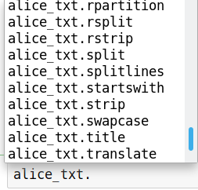
To learn how to use this method we can check the documentation.
## Help on built-in function split:
##
## split(...) method of builtins.str instance
## S.split(sep=None, maxsplit=-1) -> list of strings
##
## Return a list of the words in S, using sep as the
## delimiter string. If maxsplit is given, at most maxsplit
## splits are done. If sep is not specified or is None, any
## whitespace string is a separator and empty strings are
## removed from the result.Since the default is to split on whitespace (spaces, newlines, tabs) we can get a reasonable word count simply by calling the split method and counting the number of elements in the result. But, before we do that, we should learn more about the type of object the split method has returned.
## <class 'list'>Working with lists
The split method we used to break up the text of Alice in Wonderland into words produced a list. A lot of the techniques we’ll use later to analyze this text also produce lists, so its worth taking a few minutes to learn more about them.
Note that the displayed representation of lists and other data structures in Python often closely matches the syntax used to create them. For example, we can create a list using square brackets, just as we see when we print a list.
A list in Python is used to store a collection of items:
As with other types in Python, you can get a list of methods by typing the name of the object followed by a . and pressing tab.
Extracting subsets from lists
Among the things you can do with a list is extract subsets of items using bracket indexing notation. This is useful in many situations, including the current one where we want to inspect a long list without printing out the whole thing.
The examples below show how indexing works in Python. First using pseudocode:
Then using a real list:
# create a list
y = [1, "b", 3, "D", 5, 6]
y[0] # returns first element - the number 1 (yes, the index counts from zero!)## 1## 'b'y[ :3] # returns a list with only the first 3 elements, but index is of length 4 (0 to 3) because last index is excluded## [1, 'b', 3]## [3, 'D', 5]## 6## [3, 'D', 5, 6]## ['Rabbit-Hole', 'Alice', 'was', 'beginning', 'to', 'get', 'very', 'tired', 'of']## ['her', 'own', 'child-life,', 'and', 'the', 'happy', 'summer', 'days.', 'THE', 'END']Using sets to count unique items
Now that we have a list containing the individual words from Alice’s Adventures in Wonderland, we can calculate how many words there are in total using the len() (length) function:
## 26445According to our above computation, there are about 26 thousand total words in the Alice text. But how many unique words are there? Python has a special data structure called a set that makes it easy to find out. A set drops all duplicates, giving a collection of the unique elements. Here’s a simple example:
## {1, 4, 5, 9}Now we can count the number of unique elements in the list by getting the length len() of the set set():
## 4We can now use the set() function to convert the list of all words (alice_words) into a set of unique words and then count them:
## 5295There are 5295 unique words in the text.
Exercise 0
Reading text from a file & splitting
Alice’s Adventures in Wonderland is full of memorable characters. The main characters from the story are listed, one-per-line, in the file named Characters.txt.
NOTE: we will not always explicitly demonstrate everything you need to know in order to complete an exercise. Instead we focus on teaching you how to discover available methods and how use the help function to learn how to use them. It is expected that you will spend some time during the exercises looking for appropriate methods and perhaps reading documentation.
- Open the
Characters.txtfile and read its contents.
- Split text on newlines to produce a list with one element per line. Store the result as
alice_characters. HINT: you can split on newlines using the\nseparator.
Click for Exercise 0 Solution
- Open the Characters.txt file and read its contents.
- Split text on newlines to produce a list with one element per line. Store the result as “alice_charactersâ€.
## ['Alice', 'White Rabbit', 'Mouse', 'Dodo', 'Lory', 'Eaglet', 'Duck', 'Pat', 'Bill the Lizard', 'Puppy', 'Caterpillar', 'Duchess', 'Cheshire Cat', 'March Hare', 'Hatter', 'Dormouse', 'Queen of Hearts', 'Knave of Hearts', 'King of Hearts', 'Gryphon', 'Mock Turtle', '']Control flow
Sometimes we may want to control the flow of code in an analysis using choices,
such as if and else statements, which allow you to run different code depending on the input.
The basic form is:
```python
if (condition) true_action else false_action
```
If `condition` is `TRUE`, `true_action` is evaluated; if `condition` is `FALSE`,
the optional `false_action` is evaluated.The conditions that are evaluated use logical and relational operators to determine equivalence or make some other relational comparisons.
Logical & relational operators
Here’s a table of commonly used relational operators:
| Operator | Meaning |
|---|---|
== |
equal to |
!= |
not equal to |
> |
greater than |
>= |
greater than or equal to |
< |
less than |
<= |
less than or equal to |
These relational operators may be combined with logical operators, such as and or or, as we’ll see below.
Counting list elements
Now that we know how to split a string and how to work with the resulting list, we can split on chapter markers to count the number of chapters. All we need to do is specify the string to split on. Since each chapter is marked with the string 'CHAPTER ' followed by the chapter number, we can split the text up into chapters using this as the separator.
## 13Since the first element contains the material before the first chapter, this tells us there are twelve chapters in the book.
We can also count the number of times the “Bunny†and “Duck†characters appear in a given Chapter, say Chapter 2:
## 0## 1By combining choice statements with logical and/or relational operators, we can then determine which of these two characters appears more often in Chapter 2:
if bunny_count_ch2 < duck_count_ch2:
print("Bunny count is less than Duck count in Chapter II.")
elif bunny_count_ch2 > duck_count_ch2:
print("Bunny count is larger than Duck count in Chapter II.")
else:
print("Bunny count is equal to Duck count in Chapter II.")## Bunny count is less than Duck count in Chapter II.We can count paragraphs in a similar way to chapters. Paragraphs are indicated by a blank line, i.e., two newlines in a row. When working with strings we can represent newlines with \n. Paragraphs are indicated by two new lines, and so our basic paragraph separator is \n\n. We can see this separator by looking at the content.
## ALICE'S ADVENTURES IN WONDERLAND
##
## by
##
## Lewis Carroll
##
## CHAPTER I. Down the Rabbit-Hole
##
## Alice was beginning to get very tired of sitting by her sister on the
## bank, and of having nothing to do: once or twice she had peeped into the
## book her sister was reading, but it had no pictures or conversations in
## it, 'and what is the use of a book,' thought Alice 'without pictures or
## conversations?'
##
## So she was considering in her own mind (as well as she could, for the
## hot day made her feel very sleepy and s## "\ufeffALICE'S ADVENTURES IN WONDERLAND\n\nby\n\nLewis Carroll\n\nCHAPTER I. Down the Rabbit-Hole\n\nAlice was beginning to get very tired of sitting by her sister on the\nbank, and of having nothing to do: once or twice she had peeped into the\nbook her sister was reading, but it had no pictures or conversations in\nit, 'and what is the use of a book,' thought Alice 'without pictures or\nconversations?'\n\nSo she was considering in her own mind (as well as she could, for the\nhot day made her feel very sleepy and s"Before counting the number of paragraphs, I want to inspect the result to see if it looks correct:
## ALICE'S ADVENTURES IN WONDERLAND
## ==========## by
## ==========## Lewis Carroll
## ==========We’re counting the title, author, and chapter lines as paragraphs, but this will do for a rough count.
## 830Now let’s use a logical operator to find out if “Alice†or “Eaglet†appear in paragraph 11:
alice_eaglet_exist = "Alice" in alice_paragraphs[10] or "Eaglet" in alice_paragraphs[10]
alice_eaglet_exist## TrueExercise 1
Count the number of main characters
So far we’ve learned that there are 12 chapters, around 830 paragraphs, and about 26 thousand words in Alice’s Adventures in Wonderland. Along the way we’ve also learned how to open a file and read its contents, split strings, calculate the length of objects, discover methods for string and list objects, and index/subset lists in Python. Now it is time for you to put these skills to use to learn something about the main characters in the story.
- Count the number of main characters in the story (i.e., get the length of the list you created in previous exercise).
- Extract and print just the first character from the list you created in the previous exercise.
- Test whether the length of the 3rd and 8th character’s names are equal. Test whether the length of
the 3rd character’s name is greater than or equal to the length of the 6th character’s name. Now test
whether EITHER of the above conditions are true. HINT: use the
len()function.
- (BONUS, optional): Sort the list you created in step 2 alphabetically, and then extract the last element.
Click for Exercise 1 Solution
- Count the number of main characters in the story (i.e., get the length of the list you created in previous exercise).
## 22- Extract and print just the first character from the list you created in the previous exercise.
## Alice- Test whether the length of the 3rd and 8th character’s names are equal. Test whether the length of
the 3rd character’s name is greater than or equal to the length of the 6th character’s name. Now test
whether EITHER of the above conditions are true. HINT: use the
len()function.
len(alice_characters[2]) == len(alice_characters[7]) or len(alice_characters[2]) >= len(alice_characters[5])## False- (BONUS, optional): Sort the list you created in step 2 alphabetically, and then extract the last element.
## 'White Rabbit'Iterating over collections of data
GOAL: To learn how to automate repetitive tasks by iterating over collections of data. We will do this using the Alice text to count:
- Words nested within paragraphs
- Paragraphs nested within chapters
This far our analysis has treated the text as a “flat†data structure. For example, when we counted words we just counted words in the whole document, rather than counting the number of words in each chapter. If we want to treat our document as a nested structure, with words forming sentences, sentences forming paragraphs, paragraphs forming chapters, and chapters forming the book, we need to learn some additional tools. Specifically, we need to learn how to iterate over lists (or other collections) and do things with each element in a collection.
There are several ways to iterate in Python, of which we will focus on for loops.
Iterating over lists using for-loops
A for loop is a way of cycling through the elements of a collection and doing something with each one. The for loop logic is:

The for loop syntax is:

Notice that:
- the body of the for-loop is indented. This is important, because it is this indentation that defines the body of the loop — the place where things are done.
- White space matters in Python!
A simple example:
## 0
## 1
## 2
## 3
## 4
## 5
## 6
## 7
## 8
## 9## DONE.Notice that “DONE.†is only printed once, since print('DONE.') is not indented and is therefore outside of the body of the loop.
As a simple example using the Alice text, we can cycle through the first 6 paragraphs and print each one. Cycling through with a loop makes it easy to insert a separator between the paragraphs, making it much clearer to read the output:
## ALICE'S ADVENTURES IN WONDERLAND
## ==================================
## by
## ==================================
## Lewis Carroll
## ==================================
## CHAPTER I. Down the Rabbit-Hole
## ==================================
## Alice was beginning to get very tired of sitting by her sister on the
## bank, and of having nothing to do: once or twice she had peeped into the
## book her sister was reading, but it had no pictures or conversations in
## it, 'and what is the use of a book,' thought Alice 'without pictures or
## conversations?'
## ==================================
## So she was considering in her own mind (as well as she could, for the
## hot day made her feel very sleepy and stupid), whether the pleasure
## of making a daisy-chain would be worth the trouble of getting up and
## picking the daisies, when suddenly a White Rabbit with pink eyes ran
## close by her.
## ==================================## DONE.Loops in Python are great because the syntax is relatively simple, and because they are very powerful. Inside of the body of a loop you can use all the tools you use elsewhere in Python.
Here is one more example of a loop, this time iterating over all the chapters and calculating the number of paragraphs in each chapter.
## 33
## 29
## 51
## 45
## 81
## 84
## 108
## 74
## 95
## 88
## 77
## 73Organizing results in dictionaries
It’s often useful to store separate pieces of data that are related to one another in a dict (i.e., “dictionaryâ€), which is designed to store key-value pairs. For example, we can calculate the number of times “Alice†is mentioned per chapter and associate each count with the chapter title it corresponds to.
The dictionary structure looks like:
A simple example:
## {'apple': 5, 'pear': 6, 'grape': 10}## [5, 6, 10]To associate chapter titles with “Alice†counts, we will first need to learn how to append elements to a list:
container = [] # a list
for i in range(10):
container.append(i) # append elements to the list
print(container) ## [0, 1, 2, 3, 4, 5, 6, 7, 8, 9]Now, with the Alice text, first we can iterate over each chapter and grab just the first line (that is, the chapter titles). These will become our keys.
chapter_titles = []
for chapter in alice_chapters[1:]:
chapter_titles.append(chapter.split(sep="\n")[0])
print(chapter_titles)## ['I. Down the Rabbit-Hole', 'II. The Pool of Tears', 'III. A Caucus-Race and a Long Tale', 'IV. The Rabbit Sends in a Little Bill', 'V. Advice from a Caterpillar', 'VI. Pig and Pepper', 'VII. A Mad Tea-Party', "VIII. The Queen's Croquet-Ground", "IX. The Mock Turtle's Story", 'X. The Lobster Quadrille', 'XI. Who Stole the Tarts?', "XII. Alice's Evidence"]Next, we can iterate over each chapter and count the number of times “Alice†was mentioned. These will become our values.
chapter_Alice = []
for chapter in alice_chapters[1:]:
chapter_Alice.append(chapter.count("Alice"))
print(chapter_Alice) ## [28, 24, 23, 31, 35, 43, 51, 39, 52, 30, 16, 23]Finally we can combine the chapter titles (keys) and “Alice†counts (values) and convert them to a dictionary.
# combine titles and counts
mydict = dict(zip(chapter_titles, chapter_Alice))
print(mydict)
# help(zip) ## {'I. Down the Rabbit-Hole': 28, 'II. The Pool of Tears': 24, 'III. A Caucus-Race and a Long Tale': 23, 'IV. The Rabbit Sends in a Little Bill': 31, 'V. Advice from a Caterpillar': 35, 'VI. Pig and Pepper': 43, 'VII. A Mad Tea-Party': 51, "VIII. The Queen's Croquet-Ground": 39, "IX. The Mock Turtle's Story": 52, 'X. The Lobster Quadrille': 30, 'XI. Who Stole the Tarts?': 16, "XII. Alice's Evidence": 23}Exercise 2
Iterating & counting things
Now that we know how to iterate using for-loops, the possibilities really start to open up. For example, we can use these techniques to count the number of times each character appears in the story.
- Make sure you have both the text and the list of characters.
Open and read both “Alice_in_wonderland.txt†and “Characters.txt†if you have not already done so.
- Which chapter has the most words?
Split the text into chapters (i.e., split on “CHAPTERâ€) and use a for-loop to iterate over the chapters. For each chapter, split it into words and calculate the length.
- How many times is each character mentioned in the text?
Iterate over the list of characters using a for-loop. For each character, call the count method with that character as the argument.
- (BONUS, optional): Put the character counts computed above in a dictionary with character names as the keys and counts as the values.
Click for Exercise 2 Solution
- Make sure you have both the text and the list of characters. Open and read both “Alice_in_wonderland.txt†and “Characters.txt†if you have not already done so.
- Which chapter has the most words? Split the text into chapters (i.e., split on “CHAPTERâ€) and use a for-loop to iterate over the chapters. For each chapter, split it into words and calculate the length.
words_per_chapter = []
for chapter in alice_chapters:
words_per_chapter.append(len(chapter.split()))
print(words_per_chapter)## [7, 2184, 2098, 1701, 2614, 2185, 2592, 2286, 2486, 2271, 2028, 1877, 2104]- How many times is each character mentioned in the text? Iterate over the list of characters using a for-loop. For each character, call the count method with that character as the argument.
num_per_character = []
for character in characters_txt.split(sep="\n"):
num_per_character.append(alice_txt.count(character))
print(num_per_character)## [395, 20, 30, 13, 7, 3, 3, 3, 0, 0, 27, 42, 4, 30, 55, 40, 3, 3, 0, 55, 53, 144403]- (BONUS, optional): Put the character counts computed above in a dictionary with character names as the keys and counts as the values.
## {'Alice': 395, 'White Rabbit': 20, 'Mouse': 30, 'Dodo': 13, 'Lory': 7, 'Eaglet': 3, 'Duck': 3, 'Pat': 3, 'Bill the Lizard': 0, 'Puppy': 0, 'Caterpillar': 27, 'Duchess': 42, 'Cheshire Cat': 4, 'March Hare': 30, 'Hatter': 55, 'Dormouse': 40, 'Queen of Hearts': 3, 'Knave of Hearts': 3, 'King of Hearts': 0, 'Gryphon': 55, 'Mock Turtle': 53, '': 144403}Importing packages
GOAL: To learn how to expand Python’s functionality by importing packages.
- Import
numpy - Calculate simple statistics
Now that we know how to iterate over lists and calculate numbers for each element, we may wish to do some simple math using these numbers. For example, we may want to calculate the mean and standard deviation of the distribution of the number of paragraphs in each chapter. Python has a handful of math functions built-in (e.g., min() and max()) but built-in math support is pretty limited.
When you find that something isn’t available in Python itself, its time to look for a package that does it. Although it is somewhat overkill for simply calculating a mean we’re going to use a popular package called numpy for this. The numpy package is included in the Anaconda Python distribution we are using, so we don’t need to install it separately.
To use numpy or other packages, you must first import them.
We can import numpy as follows:
To use functions from a package, we can prefix the function with the package name, separated by a period:
The numpy package is very popular and includes a lot of useful functions. For example, we can use it to calculate means and standard deviations:
## 32.916666666666664## 10.92747556493366Wrap-up
Feedback
These workshops are a work in progress, please provide any feedback to: help@iq.harvard.edu
Resources
- IQSS
- Workshops: https://www.iq.harvard.edu/data-science-services/workshop-materials
- Data Science Services: https://www.iq.harvard.edu/data-science-services
- Research Computing Environment: https://iqss.github.io/dss-rce/
- HBS
- Research Computing Services workshops: https://training.rcs.hbs.org/workshops
- Other HBS RCS resources: https://training.rcs.hbs.org/workshop-materials
- RCS consulting email: mailto:research@hbs.edu
- Graphics
- matplotlib: https://matplotlib.org/
- seaborn: https://seaborn.pydata.org/
- plotly: https://plot.ly/python/
- Quantitative Data Analysis
- numpy: http://www.numpy.org/
- scipy: https://www.scipy.org/
- pandas: https://pandas.pydata.org/
- scikit-learn: http://scikit-learn.org/stable/
- statsmodels: http://www.statsmodels.org/stable/
- Text analysis
- textblob: https://textblob.readthedocs.io/en/dev/
- nltk: http://www.nltk.org/
- Gensim: https://radimrehurek.com/gensim/
- Webscraping
- scrapy: https://scrapy.org/
- requests: http://docs.python-requests.org/en/master/
- lxml: https://lxml.de/
- BeautifulSoup: https://www.crummy.com/software/BeautifulSoup/
- Social Network Analysis
- networkx: https://networkx.github.io/
- graph-tool: https://graph-tool.skewed.de/
Python Web-Scraping
Topics
- Web basics
- Making web requests
- Inspecting web sites
- Retrieving JSON data
- Using Xpaths to retrieve
htmlcontent - Parsing
htmlcontent - Cleaning and storing text from
html
Setup
Software and Materials
Follow the Python Installation instructions and ensure that you can successfully start JupyterLab.
Class Structure
Informal - Ask questions at any time. Really!
Collaboration is encouraged - please spend a minute introducing yourself to your neighbors!
Prerequisites
This is an intermediate / advanced Python course:
- Assumes knowledge of Python, including:
- lists
- dictionaries
- logical indexing
- iteration with for-loops
- Assumes basic knowledge of web page structure
- Relatively fast-paced
If you need an introduction to Python or a refresher, we recommend our Python Introduction.
Goals
This workshop is organized into two main parts:
- Retrive information in JSON format
- Parse HTML files
Note that this workshop will not teach you everything you need to know in order to retrieve data from any web service you might wish to scrape.
Web scraping background
What is web scraping?
Web scraping is the activity of automating retrieval of information from a web service designed for human interaction.
Is web scraping legal? Is it ethical?
It depends. If you have legal questions seek legal counsel. You can mitigate some ethical issues by building delays and restrictions into your web scraping program so as to avoid impacting the availability of the web service for other users or the cost of hosting the service for the service provider.
Web scraping approaches
No two websites are identical — websites are built for different purposes by different people and so have different underlying structures. Because they are heterogeneous, there is no single way to scrape a website. The scraping approach therefore has to be tailored to each individual site. Here are some commonly used approaches:
- Use requests to extract information from structured JSON / XML files
- Use requests to extract information from HTML
- Automate a browser to retrieve information from HTML
Bear in mind that even once you’ve decided upon the best approach for a particular site, it will be necessary to modify that approach to suit your particular use-case.
How does the web work?
Components
Computers connected to the web are called clients and servers. A simplified diagram of how they interact might look like this:

- Clients are the typical web user’s internet-connected devices (for example, your computer connected to your Wi-Fi) and web-accessing software available on those devices (usually a web browser like Firefox or Chrome).
- Servers are computers that store webpages, sites, or apps. When a client device wants to access a webpage, a copy of the webpage is downloaded from the server onto the client machine to be displayed in the user’s web browser.
- HTTP is a language for clients and servers to speak to each other.
So what happens?
When you type a web address into your browser:
- The browser finds the address of the server that the website lives on.
- The browser sends an HTTP request message to the server, asking it to send a copy of the website to the client.
- If the server approves the client’s request, the server sends the client a
200 OKmessage, and then starts displaying the website in the browser.
Retrieve data in JSON format if you can
GOAL: To retrieve information in JSON format and organize it into a spreadsheet.
- Inspect the website to check if the content is stored in JSON format
- Make a request to the website server to retrieve the JSON file
- Convert from JSON format into a Python dictionary
- Extract the data from the dictionary and store in a .csv file
We wish to extract information from https://www.harvardartmuseums.org/collections. Like most modern web pages, a lot goes on behind the scenes to produce the page we see in our browser. Our goal is to pull back the curtain to see what the website does when we interact with it. Once we see how the website works we can start retrieving data from it.
If we are lucky we’ll find a resource that returns the data we’re looking for in a structured format like JSON or XML.

This is useful because it is very easy to convert data from JSON or XML into a spreadsheet type format — like a csv or Excel file.
Examine the website’s structure
The basic strategy is pretty much the same for most scraping projects. We will use our web browser (Chrome or Firefox recommended) to examine the page you wish to retrieve data from, and copy/paste information from your web browser into your scraping program.
We start by opening the collections web page in a web browser and inspecting it.


If we scroll down to the bottom of the Collections page, we’ll see a button that says “Load Moreâ€. Let’s see what happens when we click on that button. To do so, click on “Network†in the developer tools window, then click the “Load More Collections†button. You should see a list of requests that were made as a result of clicking that button, as shown below.

If we look at that second request, the one to a script named browse, we’ll see that it returns all the information we need, in a convenient format called JSON. All we need to retrieve collection data is to make GET requests to https://www.harvardartmuseums.org/browse with the correct parameters.
Launch JupyterLab
- Start the
Anaconda Navigatorprogram - Click the
Launchbutton underJupyter Lab - A browser window will open with your computer’s files listed on the left hand side of the page. Navigate to the folder called
PythonWebScrapethat you downloaded to your desktop and double-click on the folder - Within the
PythonWebScrapefolder, double-click on the file with the word “BLANK†in the name (PythonWebScrape_BLANK.ipynb). A pop-up window will ask you toSelect Kernal— you should select the Python 3 kernal. The Jupyter Notebook should now open on the right hand side of the page
A Jupyter Notebook contains one or more cells containing notes or code. To insert a new cell click the + button in the upper left. To execute a cell, select it and press Control+Enter or click the Run button at the top.
Making requests
To retrieve information from the website (i.e., make a request), we need to know the location of the information we want to collect. The Uniform Resource Locator (URL) — commonly know as a “web addressâ€, specifies the location of a resource (such as a web page) on the internet.
A URL is usually composed of 5 parts:

The 4th part, the “query stringâ€, contains one or more parameters. The 5th part, the “fragmentâ€, is an internal page reference and may not be present.
For example, the URL we want to retrieve data from has the following structure:
protocol domain path parameters
https www.harvardartmuseums.org browse load_amount=10&offset=0It is often convenient to create variables containing the domain(s) and path(s) you’ll be working with, as this allows you to swap out paths and parameters as needed. Note that the path is separated from the domain with / and the parameters are separated from the path with ?. If there are multiple parameters they are separated from each other with a &.
For example, we can define the domain and path of the collections URL as follows:
museum_domain = 'https://www.harvardartmuseums.org'
collection_path = 'browse'
collection_url = (museum_domain
+ "/"
+ collection_path)
print(collection_url)## 'https://www.harvardartmuseums.org/browse'Note that we omit the parameters here because it is usually easier to pass them as a dict when using the requests library in Python. This will become clearer shortly.
Now that we’ve constructed the URL we wish to interact with, we’re ready to make our first request in Python.
import requests
collections1 = requests.get(
collection_url,
params = {'load_amount': 10,
'offset': 0}
)Note that the parameters load_amount and offset are essentially another way of setting page numbers — they refer to the amount of information retrieved at one time and the starting position, respectively.
Parsing JSON data
We already know from inspecting network traffic in our web browser that this URL returns JSON, but we can use Python to verify this assumption.
## 'application/json'Since JSON is a structured data format, parsing it into Python data structures is easy. In fact, there’s a method for that!
That’s it. Really, we are done here. Everyone go home!
OK not really, there is still more we can learn. But you have to admit that was pretty easy. If you can identify a service that returns the data you want in structured from, web scraping becomes a pretty trivial enterprise. We’ll discuss several other scenarios and topics, but for some web scraping tasks this is really all you need to know.
Organizing & saving the data
The records we retrieved from https://www.harvardartmuseums.org/browse are arranged as a list of dictionaries. We can easily select the fields of arrange these data into a pandas DataFrame to facilitate subsequent analysis.
## copyright contextualtextcount ... seeAlso details
## 0 None 0 ... [{'id': 'https://iiif.harv... NaN
## 1 None 0 ... [{'id': 'https://iiif.harv... NaN
## 2 © 2004 Glenn Ligon 0 ... [{'id': 'https://iiif.harv... NaN
## 3 None 1 ... [{'id': 'https://iiif.harv... {'technical': [{'text': 'I...
## 4 None 0 ... [{'id': 'https://iiif.harv... NaN
## 5 None 0 ... [{'id': 'https://iiif.harv... NaN
## 6 None 0 ... [{'id': 'https://iiif.harv... NaN
## 7 None 0 ... [{'id': 'https://iiif.harv... NaN
## 8 © Estate of Pablo Picasso ... 0 ... [{'id': 'https://iiif.harv... NaN
## 9 © Succession H. Matisse / ... 0 ... [{'id': 'https://iiif.harv... NaN
##
## [10 rows x 63 columns]and write the data to a file.
Iterating to retrieve all the data
Of course we don’t want just the first page of collections. How can we retrieve all of them?
Now that we know the web service works, and how to make requests in Python, we can iterate in the usual way.
records = []
for offset in range(0, 50, 10):
param_values = {'load_amount': 10, 'offset': offset}
current_request = requests.get(collection_url, params = param_values)
records.extend(current_request.json()['records'])## copyright contextualtextcount ... seeAlso details
## 0 None 0 ... [{'id': 'https://iiif.harv... NaN
## 1 None 0 ... [{'id': 'https://iiif.harv... NaN
## 2 © 2004 Glenn Ligon 0 ... [{'id': 'https://iiif.harv... NaN
## 3 None 1 ... [{'id': 'https://iiif.harv... {'technical': [{'text': 'I...
## 4 None 0 ... [{'id': 'https://iiif.harv... NaN
## 5 None 0 ... [{'id': 'https://iiif.harv... NaN
## 6 None 0 ... [{'id': 'https://iiif.harv... NaN
## 7 None 0 ... [{'id': 'https://iiif.harv... NaN
## 8 © Estate of Pablo Picasso ... 0 ... [{'id': 'https://iiif.harv... NaN
## 9 © Succession H. Matisse / ... 0 ... [{'id': 'https://iiif.harv... NaN
## 10 None 0 ... [{'id': 'https://iiif.harv... NaN
## 11 None 0 ... [{'id': 'https://iiif.harv... NaN
## 12 None 1 ... [{'id': 'https://iiif.harv... {'technical': [{'text': 'X...
## 13 None 0 ... [{'id': 'https://iiif.harv... NaN
## 14 None 0 ... [{'id': 'https://iiif.harv... NaN
## 15 © Estate of Alfred Stiegli... 0 ... [{'id': 'https://iiif.harv... NaN
## 16 None 0 ... [{'id': 'https://iiif.harv... NaN
## 17 None 0 ... [{'id': 'https://iiif.harv... NaN
## 18 © 2020 The Estate of David... 0 ... [{'id': 'https://iiif.harv... NaN
## 19 None 0 ... [{'id': 'https://iiif.harv... NaN
## 20 None 0 ... [{'id': 'https://iiif.harv... NaN
## 21 None 0 ... [{'id': 'https://iiif.harv... {'coins': {'reverseinscrip...
## 22 None 0 ... [{'id': 'https://iiif.harv... NaN
## 23 None 0 ... [{'id': 'https://iiif.harv... NaN
## 24 None 0 ... [{'id': 'https://iiif.harv... NaN
## 25 None 0 ... [{'id': 'https://iiif.harv... NaN
## 26 None 0 ... [{'id': 'https://iiif.harv... NaN
## 27 © 1981 Gary Schneider 0 ... [{'id': 'https://iiif.harv... NaN
## 28 None 0 ... [{'id': 'https://iiif.harv... NaN
## 29 None 0 ... [{'id': 'https://iiif.harv... NaN
## 30 © 2020 The Arshile Gorky F... 0 ... [{'id': 'https://iiif.harv... NaN
## 31 None 0 ... [{'id': 'https://iiif.harv... NaN
## 32 © Succession H. Matisse / ... 0 ... [{'id': 'https://iiif.harv... NaN
## 33 None 0 ... [{'id': 'https://iiif.harv... NaN
## 34 None 0 ... [{'id': 'https://iiif.harv... NaN
## 35 None 1 ... [{'id': 'https://iiif.harv... NaN
## 36 None 0 ... [{'id': 'https://iiif.harv... NaN
## 37 Artwork © Estate of Ben Sh... 0 ... [{'id': 'https://iiif.harv... NaN
## 38 None 0 ... [{'id': 'https://iiif.harv... NaN
## 39 © Andy Warhol Foundation ... 0 ... [{'id': 'https://iiif.harv... NaN
## 40 None 0 ... [{'id': 'https://iiif.harv... NaN
## 41 None 0 ... [{'id': 'https://iiif.harv... NaN
## 42 None 0 ... [{'id': 'https://iiif.harv... NaN
## 43 None 1 ... [{'id': 'https://iiif.harv... {'technical': [{'text': 'X...
## 44 None 0 ... [{'id': 'https://iiif.harv... NaN
## 45 None 1 ... [{'id': 'https://iiif.harv... {'technical': [{'text': 'X...
## 46 © Allan McCollum 0 ... [{'id': 'https://iiif.harv... NaN
## 47 None 0 ... [{'id': 'https://iiif.harv... NaN
## 48 None 0 ... [{'id': 'https://iiif.harv... NaN
## 49 © Estate of Alfred Stiegli... 0 ... [{'id': 'https://iiif.harv... NaN
##
## [50 rows x 63 columns]Exercise 0
Retrieve exhibits data
In this exercise you will retrieve information about the art exhibitions at Harvard Art Museums from https://www.harvardartmuseums.org/exhibitions
- Using a web browser (Firefox or Chrome recommended) inspect the page at https://www.harvardartmuseums.org/exhibitions. Examine the network traffic as you interact with the page. Try to find where the data displayed on that page comes from.
- Make a
getrequest in Python to retrieve the data from the URL identified in step1.
- Write a loop or list comprehension in Python to retrieve data for the first 5 pages of exhibitions data.
- Bonus (optional): Convert the data you retrieved into a pandas
DataFrameand save it to a.csvfile.
Click for Exercise 0 Solution
Question #1:
museum_domain = "https://www.harvardartmuseums.org"
exhibit_path = "search/load_next"
exhibit_url = museum_domain + "/" + exhibit_path
print(exhibit_url)## 'https://www.harvardartmuseums.org/search/load_next'Question #2:
import requests
from pprint import pprint as print
exhibit1 = requests.get(exhibit_url, params = {'type': 'past-exhibition', 'page': 1})
print(exhibit1.headers["Content-Type"])## 'application/json'Questions #3+4 (loop solution):
firstFivePages = []
for page in range(1, 6):
records_per_page = requests.get(exhibit_url, params = {'type': 'past-exhibition', 'page': page}).json()['records']
firstFivePages.extend(records_per_page)
firstFivePages_records = pd.DataFrame.from_records(firstFivePages)
print(firstFivePages_records)## shortdescription images ... publications videos
## 0 None [{'date': None, 'copyright... ... NaN NaN
## 1 None [{'date': '2018-11-09', 'c... ... NaN NaN
## 2 None [{'date': '2018-06-04', 'c... ... [{'publicationplace': 'Cam... NaN
## 3 None [{'date': '2001-03-01', 'c... ... NaN NaN
## 4 None [{'date': '2005-04-18', 'c... ... NaN NaN
## 5 None [{'date': '2018-06-29', 'c... ... NaN [{'description': 'Marina I...
## 6 None [{'date': '2018-03-15', 'c... ... NaN NaN
## 7 None [{'date': '2016-10-17', 'c... ... [{'publicationplace': 'Cam... NaN
## 8 None [{'date': '2017-02-16', 'c... ... [{'publicationplace': 'Cam... NaN
## 9 None [{'date': '2018-01-23', 'c... ... NaN NaN
## 10 None [{'date': '2001-04-01', 'c... ... NaN NaN
## 11 None [{'date': '2016-06-10', 'c... ... NaN [{'description': 'Fernando...
## 12 None [{'date': '2008-10-27', 'c... ... NaN NaN
## 13 None [{'date': '2017-10-05', 'c... ... NaN NaN
## 14 None [{'date': '2002-05-01', 'c... ... NaN NaN
## 15 None [{'date': '2007-08-01', 'c... ... NaN NaN
## 16 None [{'date': '2003-03-21', 'c... ... NaN NaN
## 17 None [{'date': '2017-05-08', 'c... ... [{'publicationplace': 'Cam... NaN
## 18 None [{'date': '2002-08-01', 'c... ... NaN [{'description': 'Symposiu...
## 19 None [{'date': '2016-07-05', 'c... ... NaN NaN
## 20 None [{'date': '2017-03-29', 'c... ... NaN NaN
## 21 None [{'date': '2015-03-22', 'c... ... [{'publicationplace': 'Cam... [{'description': 'The Phil...
## 22 None [{'date': '2017-03-07', 'c... ... NaN NaN
## 23 Harvard professor Ewa Laje... [{'date': '2001-03-01', 'c... ... [{'publicationplace': 'Cam... NaN
## 24 This exhibition features w... [{'date': '2016-07-12', 'c... ... [{'publicationplace': 'Cam... NaN
## 25 None [{'date': '2017-02-08', 'c... ... NaN NaN
## 26 None [{'date': '2001-06-01', 'c... ... NaN NaN
## 27 None [{'date': '2005-11-03', 'c... ... NaN NaN
## 28 None [{'date': '2015-04-06', 'c... ... NaN [{'description': 'Wolfgang...
## 29 In progress [{'date': '2016-07-28', 'c... ... NaN NaN
## 30 None [{'date': None, 'copyright... ... NaN NaN
## 31 None [{'date': '2016-03-21', 'c... ... NaN NaN
## 32 None [{'date': '2007-04-18', 'c... ... [{'publicationplace': 'Cam... NaN
## 33 None [{'date': '2015-04-01', 'c... ... [{'publicationplace': 'Cam... NaN
## 34 None [{'date': '2016-01-12', 'c... ... NaN NaN
## 35 None [{'date': '2002-07-01', 'c... ... NaN NaN
## 36 None [{'date': '2007-02-27', 'c... ... NaN NaN
## 37 None [{'date': '2006-01-18', 'c... ... NaN NaN
## 38 None [{'date': '2015-10-29', 'c... ... NaN NaN
## 39 None [{'date': '2014-08-12', 'c... ... [{'publicationplace': 'Cam... [{'description': 'Teaser: ...
## 40 None [{'date': '2005-11-03', 'c... ... NaN NaN
## 41 None [{'date': '1989-08-01', 'c... ... NaN NaN
## 42 This multi-component insta... [{'date': '2014-03-31', 'c... ... NaN NaN
## 43 None [{'date': '2009-11-30', 'c... ... NaN NaN
## 44 Harvard Art Museums’ new p... [{'date': '2012-06-29', 'c... ... NaN [{'description': 'Rothko S...
## 45 None [{'date': '2014-11-10', 'c... ... NaN NaN
## 46 In the Japanese context, a... [{'date': '2012-07-17', 'c... ... NaN NaN
## 47 World’s Fairs were created... [{'date': '2005-12-21', 'c... ... NaN NaN
## 48 None [{'date': '2005-11-09', 'c... ... NaN NaN
## 49 Teaching Galleries\r\n\r\n... [{'date': '2003-03-18', 'c... ... NaN NaN
##
## [50 rows x 19 columns]Questions #3+4 (list comprehension solution):
first5Pages = [requests.get(exhibit_url, params = {'type': 'past-exhibition', 'page': page}).json()['records'] for page in range(1, 6)]
from itertools import chain
first5Pages = list(chain.from_iterable(first5Pages))
import pandas as pd
first5Pages_records = pd.DataFrame.from_records(first5Pages)
print(first5Pages_records)## shortdescription images ... publications videos
## 0 None [{'date': None, 'copyright... ... NaN NaN
## 1 None [{'date': '2018-11-09', 'c... ... NaN NaN
## 2 None [{'date': '2018-06-04', 'c... ... [{'publicationplace': 'Cam... NaN
## 3 None [{'date': '2001-03-01', 'c... ... NaN NaN
## 4 None [{'date': '2005-04-18', 'c... ... NaN NaN
## 5 None [{'date': '2018-06-29', 'c... ... NaN [{'description': 'Marina I...
## 6 None [{'date': '2018-03-15', 'c... ... NaN NaN
## 7 None [{'date': '2016-10-17', 'c... ... [{'publicationplace': 'Cam... NaN
## 8 None [{'date': '2017-02-16', 'c... ... [{'publicationplace': 'Cam... NaN
## 9 None [{'date': '2018-01-23', 'c... ... NaN NaN
## 10 None [{'date': '2001-04-01', 'c... ... NaN NaN
## 11 None [{'date': '2016-06-10', 'c... ... NaN [{'description': 'Fernando...
## 12 None [{'date': '2008-10-27', 'c... ... NaN NaN
## 13 None [{'date': '2017-10-05', 'c... ... NaN NaN
## 14 None [{'date': '2002-05-01', 'c... ... NaN NaN
## 15 None [{'date': '2007-08-01', 'c... ... NaN NaN
## 16 None [{'date': '2003-03-21', 'c... ... NaN NaN
## 17 None [{'date': '2017-05-08', 'c... ... [{'publicationplace': 'Cam... NaN
## 18 None [{'date': '2002-08-01', 'c... ... NaN [{'description': 'Symposiu...
## 19 None [{'date': '2016-07-05', 'c... ... NaN NaN
## 20 None [{'date': '2017-03-29', 'c... ... NaN NaN
## 21 None [{'date': '2015-03-22', 'c... ... [{'publicationplace': 'Cam... [{'description': 'The Phil...
## 22 None [{'date': '2017-03-07', 'c... ... NaN NaN
## 23 Harvard professor Ewa Laje... [{'date': '2001-03-01', 'c... ... [{'publicationplace': 'Cam... NaN
## 24 This exhibition features w... [{'date': '2016-07-12', 'c... ... [{'publicationplace': 'Cam... NaN
## 25 None [{'date': '2017-02-08', 'c... ... NaN NaN
## 26 None [{'date': '2001-06-01', 'c... ... NaN NaN
## 27 None [{'date': '2005-11-03', 'c... ... NaN NaN
## 28 None [{'date': '2015-04-06', 'c... ... NaN [{'description': 'Wolfgang...
## 29 In progress [{'date': '2016-07-28', 'c... ... NaN NaN
## 30 None [{'date': None, 'copyright... ... NaN NaN
## 31 None [{'date': '2016-03-21', 'c... ... NaN NaN
## 32 None [{'date': '2007-04-18', 'c... ... [{'publicationplace': 'Cam... NaN
## 33 None [{'date': '2015-04-01', 'c... ... [{'publicationplace': 'Cam... NaN
## 34 None [{'date': '2016-01-12', 'c... ... NaN NaN
## 35 None [{'date': '2002-07-01', 'c... ... NaN NaN
## 36 None [{'date': '2007-02-27', 'c... ... NaN NaN
## 37 None [{'date': '2006-01-18', 'c... ... NaN NaN
## 38 None [{'date': '2015-10-29', 'c... ... NaN NaN
## 39 None [{'date': '2014-08-12', 'c... ... [{'publicationplace': 'Cam... [{'description': 'Teaser: ...
## 40 None [{'date': '2005-11-03', 'c... ... NaN NaN
## 41 None [{'date': '1989-08-01', 'c... ... NaN NaN
## 42 This multi-component insta... [{'date': '2014-03-31', 'c... ... NaN NaN
## 43 None [{'date': '2009-11-30', 'c... ... NaN NaN
## 44 Harvard Art Museums’ new p... [{'date': '2012-06-29', 'c... ... NaN [{'description': 'Rothko S...
## 45 None [{'date': '2014-11-10', 'c... ... NaN NaN
## 46 In the Japanese context, a... [{'date': '2012-07-17', 'c... ... NaN NaN
## 47 World’s Fairs were created... [{'date': '2005-12-21', 'c... ... NaN NaN
## 48 None [{'date': '2005-11-09', 'c... ... NaN NaN
## 49 Teaching Galleries\r\n\r\n... [{'date': '2003-03-18', 'c... ... NaN NaN
##
## [50 rows x 19 columns]Parsing HTML if you have to
GOAL: To retrieve information in HTML format and organize it into a spreadsheet.
- Make a request to the website server to retrieve the HTML
- Inspect the HTML to determine the XPATHs that point to the data we want
- Extract the information from the location the XPATHs point to and store in a dictionary
- Convert from a dictionary to a .csv file
As we’ve seen, you can often inspect network traffic or other sources to locate the source of the data you are interested in and the API used to retrieve it. You should always start by looking for these shortcuts and using them where possible. If you are really lucky, you’ll find a shortcut that returns the data as JSON or XML. If you are not quite so lucky, you will have to parse HTML to retrieve the information you need.
Document Object Model (DOM)
To parse HTML, we need to have a nice tree structure that contains the whole HTML file through which we can locate the information. This tree-like structure is the Document Object Model (DOM). DOM is a cross-platform and language-independent interface that treats an XML or HTML document as a tree structure wherein each node is an object representing a part of the document. The DOM represents a document with a logical tree. Each branch of the tree ends in a node, and each node contains objects. DOM methods allow programmatic access to the tree; with them one can change the structure, style or content of a document. The following is an example of DOM hierarchy in an HTML document:

Retrieving HTML
When I inspect the network traffic while interacting with https://www.harvardartmuseums.org/calendar I don’t see any requests that return JSON data. The best we can do appears to be to return HTML.
To retrieve data on the events listed in the calender, the first step is the same as before: we make a get request.
calendar_path = 'calendar'
calendar_url = (museum_domain # recall that we defined museum_domain earlier
+ "/"
+ calendar_path)
print(calendar_url)## 'https://www.harvardartmuseums.org/calendar'As before, we can check the headers to see what type of content we received in response to our request.
## 'text/html; charset=UTF-8'Parsing HTML using the lxml library
Like JSON, HTML is structured; unlike JSON, it is designed to be rendered into a human-readable page rather than simply to store and exchange data in a computer-readable format. Consequently, parsing HTML and extracting information from it is somewhat more difficult than parsing JSON.
While JSON parsing is built into the Python requests library, parsing HTML requires a separate library. I recommend using the HTML parser from the lxml library; others prefer an alternative called beautifulsoup4.
Using XPath to extract content from HTML
XPath is a tool for identifying particular elements within a HTML document. The developer tools built into modern web browsers make it easy to generate XPaths that can be used to identify the elements of a web page that we wish to extract.
We can open the html document we retrieved and inspect it using our web browser.


Once we identify the element containing the information of interest we can use our web browser to copy the XPath that uniquely identifies that element.

Next we can use Python to extract the element of interest:
Let’s just extract the second element in our events list.
Once again, we can use a web browser to inspect the HTML we’re currently working with - from the second event - and to figure out what we want to extract from it.
As before we can use our browser to find the xpath of the elements we want.
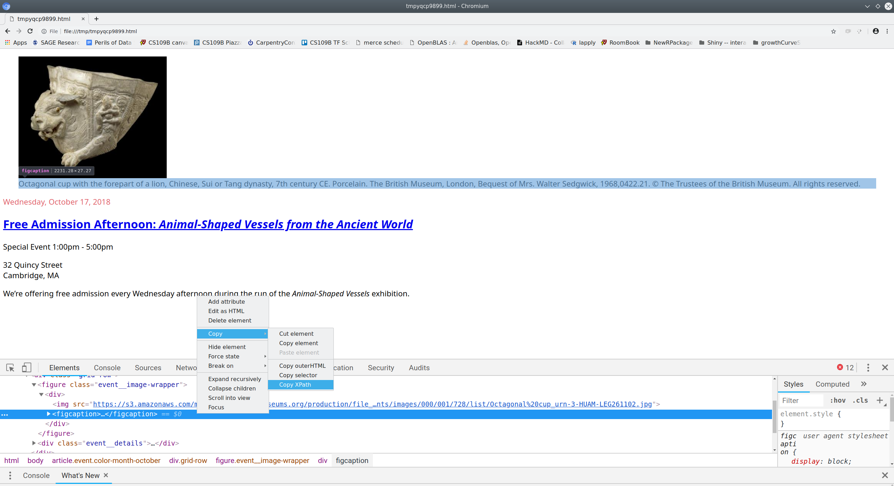
(Note that the html.open_in_browser function adds enclosing html and body tags in order to create a complete web page for viewing. This requires that we adjust the xpath accordingly.)
By repeating this process for each element we want, we can build a list of the xpaths to those elements.
elements_we_want = {'figcaption': 'div/figure/div/figcaption',
'date': 'div/div/header/time',
'title': 'div/div/header/h2/a',
'time': 'div/div/div/p[1]/time',
'description': 'div/div/div/p[3]'
}Finally, we can iterate over the elements we want and extract them.
second_event_values = {}
for key in elements_we_want.keys():
element = second_event_html.xpath(elements_we_want[key])[0]
second_event_values[key] = element.text_content().strip()
print(second_event_values)## {'date': 'Thursday, August 27, 2020',
## 'description': 'We’ll take a close look at a late 18th-century book '
## 'illustration by French artists Pierre-Paul Prud’hon and '
## 'Barthélemy Roger.',
## 'figcaption': 'Pierre-Paul Prud’hon (design and etching) and Barthélemy '
## 'Joseph Fulcran Roger (engraving), French, Phrosine and '
## 'Mélidore, 1797. Etching and engraving. Harvard Art '
## 'Museums/Fogg Museum, Gray Collection of Engravings Fund and '
## 'the Jakob Rosenberg Fund, G9063.',
## 'time': '2:00pm - 2:30pm',
## 'title': 'Art Talk Live: One Print—Five Stories'}Iterating to retrieve content from a list of HTML elements
So far we’ve retrieved information only for the second event. To retrieve data for all the events listed on the page we need to iterate over the events. If we are very lucky, each event will have exactly the same information structured in exactly the same way and we can simply extend the code we wrote above to iterate over the events list.
Unfortunately, not all these elements are available for every event, so we need to take care to handle the case where one or more of these elements is not available. We can do that by defining a function that tries to retrieve a value and returns an empty string if it fails.
If you’re not familiar with Python functions, here’s the basic syntax:
# anatomy of a function
def name_of_function(arg1, arg2, ...argn): # define the function name and arguments
<body of function> # specify calculations
return <result> # output result of calculationsHere’s an example of a simple function:
## 16Here’s a function to perform our actual task:
def get_event_info(event, path):
try:
info = event.xpath(path)[0].text_content().strip()
except:
info = ''
return infoArmed with this function we can iterate over the list of events and extract the available information for each one.
all_event_values = {}
for key in elements_we_want.keys():
key_values = []
for event in events_list_html:
key_values.append(get_event_info(event, elements_we_want[key]))
all_event_values[key] = key_valuesFor convenience we can arrange these values in a pandas DataFrame and save them as .csv files, just as we did with our exhibitions data earlier.
Exercise 1
parsing HTML
In this exercise you will retrieve information about the physical layout of the Harvard Art Museums. The web page at https://www.harvardartmuseums.org/visit/floor-plan contains this information in HTML from.
Using a web browser (Firefox or Chrome recommended) inspect the page at https://www.harvardartmuseums.org/visit/floor-plan. Copy the
XPathto the element containing the list of level information. (HINT: the element if interest is aul, i.e.,unordered list.)Make a
getrequest in Python to retrieve the web page at https://www.harvardartmuseums.org/visit/floor-plan. Extract the content from your request object and parse it usinghtml.fromstringfrom thelxmllibrary.
- Use your web browser to find the
XPaths to the facilities housed on level one. Use Python to extract the text from thoseXpaths.
- Bonus (optional): Write a for loop or list comprehension in Python to retrieve data for all the levels.
Click for Exercise 1 Solution
Question #2:
from lxml import html
floor_plan = requests.get('https://www.harvardartmuseums.org/visit/floor-plan')
floor_plan_html = html.fromstring(floor_plan.text)Question #3:
level_one = floor_plan_html.xpath('/html/body/main/section/ul/li[5]/div[2]/ul')[0]
print(type(level_one))## <class 'lxml.html.HtmlElement'>## 6level_one_facilities = floor_plan_html.xpath('/html/body/main/section/ul/li[5]/div[2]/ul/li')
print(len(level_one_facilities))## 6## ['Admissions', 'Collection Galleries', 'Courtyard', 'Shop', 'Café', 'Coatroom']Question #4:
## 6all_levels_facilities = []
for level in all_levels:
level_facilities = []
level_facilities_collection = level.xpath('div[2]/ul/li')
for level_facility in level_facilities_collection:
level_facilities.append(level_facility.text_content())
all_levels_facilities.append(level_facilities)
print(all_levels_facilities)## [['Conservation Center / Lightbox Gallery'],
## ['Art Study Center'],
## ['Collection Galleries',
## 'Special Exhibitions Gallery',
## 'University Galleries'],
## ['Collections Galleries'],
## ['Admissions',
## 'Collection Galleries',
## 'Courtyard',
## 'Shop',
## 'Café',
## 'Coatroom'],
## ['Lower Lobby',
## 'Lecture Halls',
## 'Seminar Room',
## 'Materials Lab',
## 'Coatroom',
## 'Offices']]Scrapy: for large / complex projects
Scraping websites using the requests library to make GET and POST requests, and the lxml library to process HTML is a good way to learn basic web scraping techniques. It is a good choice for small to medium size projects. For very large or complicated scraping tasks the scrapy library offers a number of conveniences, including asynchronous retrieval, session management, convenient methods for extracting and storing values, and more. More information about scrapy can be found at https://doc.scrapy.org.
Browser drivers: a last resort
It is sometimes necessary (or sometimes just easier) to use a web browser as an intermediary rather than communicate directly with a web service. This method of using a “browser driver†has the advantage of being able to use the javascript engine and session management features of a web browser; the main disadvantage is that it is slower and tends to be more fragile than using requests or scrapy to make requests directly from Python. For small scraping projects involving complicated sites with CAPTHAs or lots of complicated javascript using a browser driver can be a good option. More information is available at https://www.seleniumhq.org/docs/03_webdriver.jsp.
Wrap-up
Feedback
These workshops are a work in progress, please provide any feedback to: help@iq.harvard.edu
Resources
- IQSS
- Workshops: https://www.iq.harvard.edu/data-science-services/workshop-materials
- Data Science Services: https://www.iq.harvard.edu/data-science-services
- Research Computing Environment: https://iqss.github.io/dss-rce/
- HBS
- Research Computing Services workshops: https://training.rcs.hbs.org/workshops
- Other HBS RCS resources: https://training.rcs.hbs.org/workshop-materials
- RCS consulting email: mailto:research@hbs.edu
Stata Installation
Your professional conduct is greatly appreciated. Out of respect to your fellow workshop attendees and instructors, please arrive at your workshop on time, having pre-installed all necessary software and materials. This will likely take 10-15 minutes.
Troubleshooting
Unfortunately, we are not able to help with any Stata download or installation problems you may encounter. If you are unable to download or install Stata SE or MP, please contact your vendor (e.g., HUIT or Stata Corp.) prior to the start of the workshop. Once the workshop starts we will NOT be able to give you one-to-one assistance with setting up Stata. Likewise, if you arrive late, please do NOT expect one-to-one assistance for anything covered at the beginning of the workshop.
Materials
Download class materials for your workshop:
- Stata Introduction: https://github.com/IQSS/dss-workshops/raw/master/Stata/StataIntro.zip
- Stata Data Management: https://github.com/IQSS/dss-workshops/raw/master/Stata/StataDataManage.zip
- Stata Regression Models: https://github.com/IQSS/dss-workshops/raw/master/Stata/StataModels.zip
- Stata Graphics: https://github.com/IQSS/dss-workshops/raw/master/Stata/StataGraphics.zip
Extract materials from the zipped directory (Right-click -> Extract All on Windows, double-click on Mac) and move them to your desktop.
It will be useful when you view the above materials for you to see the different file extensions on your computer. Here are instructions for enabling this:
Software
It is important that you have the latest numeric version of Stata installed, which currently is:
- Stata version 16.1
It does not matter whether you use Stata version MP, SE, or IC in this workshop, since we will not be performing computational intensive analyses.
If you are affiliated with Harvard FAS:
You have access to the licensed Stata MP program. Go to the software download page: https://downloads.fas.harvard.edu/download, log in using your Harvard key and download Stata MP.
If you are affiliated with other Harvard schools or MIT:
- First check with your school or department whether they provide you free access to Stata MP, SE, or IC.
- If not, you can download the program directly from Stata Corporation with a single user annual license fee starting at $94 for Stata/IC for students or $125 for Stata/IC for education. Stata Corp.’s website is https://www.stata.com/.
After you successfully installed Stata, you should be able to open the program and see the following start page (note that the Stata version reported may be newer):
If you are having any difficulties with the installation or your Stata screen does not look like this one, please contact your Stata vendor for technical support prior to the start of the workshop.
Resources
- IQSS
- Workshops: https://www.iq.harvard.edu/data-science-services/workshop-materials
- Data Science Services: https://www.iq.harvard.edu/data-science-services
- Research Computing Environment: https://iqss.github.io/dss-rce/
- HBS
- Research Computing Services workshops: https://training.rcs.hbs.org/workshops
- Other HBS RCS resources: https://training.rcs.hbs.org/workshop-materials
- RCS consulting email: mailto:research@hbs.edu
Stata Introduction
Topics
- Stata interface and Do-files
- Reading and writing data
- Basic summary statistics
- Basic graphs
- Basic data management
- Bivariate analyses
Setup
Class Structure and organization
- Informal — Ask questions at any time. Really!
- Collaboration is encouraged - please spend a minute introducing yourself to your neighbors!
- If you are using a laptop, you will need to adjust file paths accordingly
- Make comments in your Do-file - save on flash drive or email to yourself
Prerequisites
This is an introductory Stata course:
- Assumes no prior knowledge of how to use Stata
- We do assume you know why you want to learn Stata. If you don’t, and want a comparison of Stata to other statistical software, see our Data Science Tools workshop
- Relatively slow-paced
Goals
We will learn about the Stata language by analyzing data from the general social survey (gss). In particular, our goals are to:
- Familiarize yourself with the Stata interface
- Get data in and out of Stata
- Compute statistics and construct graphical displays
- Compute new variables and transformations
- Perform univariate and bivariate data analyses
Stata basics
GOAL: To learn the basics about Stata, how to interact with Stata, and how to read in and save data. In particular:
- What is Stata, why use Stata, and advantages of using Stata
- Three ways of interacing with Stata
- Set the working directory
- Read, save, and write data
What is Stata?
- Stata is a statistical software package that you can use to perform data analysis and management, as well as create graphics
- Stata is commonly used among health, sociology, and economics researchers, particularly those working with large data sets
Why use Stata?
- It is easy to learn and is supported by a wide range of introductory textbooks
- It offers a wide range of statistical models in a consistent interface
- It presents results in a clear format
- It has very good built-in help documentation and a broad user community where you can seek help
- Student and other discount packages are available at reasonable cost
How does Stata work?
When Stata is running, variables, data, etc., are stored in memory.
The user can use clear command to clear up memory before running further commands,
unless they want to save their changes in the original dataset or a new dataset.
Interfaces

- Review and Variable windows can be closed (user preference)
- Command window can be shortened (recommended)
GUI and command window
There are two ways of interacting with Stata that will not result in a saveable record of what you have done:
GUI. The Graphical User Interface (GUI) allows you to perform analyses using drop-down menus, rather than writing code. This can be easier for first time users and Stata will helpfully display the command and proper syntax for the operation that you have selected. However, we strongly recommend not using the GUI, since it does not produce a script — a record of what you have done — and thus leads to analyses that are unreproducible.
Command window. From the command window you can type commands to manage and analyze your data.
- The advantage is that you can quickly produce output of a single command.
- The disadvantage is that you cannot store your syntax in a script to reproduce in the future.
Do-file
The third way of interacting with Stata does provide you with a saveable record of your work:
- Do-file. A do-file is a plain text file within which you can write and save commands for later use. There are several advantages to using a do-file and we strongly recommend that you always interact with Stata in this way:
- Allows you to submit more than one command to Stata at once.
- Has specialized features for programmers such as syntax highlighting, code folding, autocompletion, and bookmarks to important lines in your code, brace matching, and more.
- With a do-file, it is easy to save, review, change, and share your code with others — including your future self!
Here are some resources for learning more about Stata and do-files:
Stata help
To get help in Stata type help followed by topic or command, e.g., help codebook.
Syntax rules
Most Stata commands follow the same basic syntax:
Command varlist, options.Use comments liberally — start with a comment describing your do-file and use comments throughout
- Use
*to comment a line and//for in-line comments - Use
///to break varlists over multiple lines
- Use
Exercise 0
Launch the Stata program (MP or SE, does not matter unless doing computationally intensive work) * Open up a new do-file * Run our first Stata code!
- Try to get Stata to say “Hello World!â€. Search
help display
- Try to get Stata to break “Hello World!†over two lines:
Working directory
- print current working directory
- change working directory
A note about file path names
- If your file path has no spaces in the name (that means all directories, folders, file names, etc. can have no spaces), you can write the file path as it is
- If there are spaces, you need to put your file path name in quotes
- Best to get in the habit of quoting file paths
Reading data
Data file commands
- Next, we want to open our data file
- Open / save data sets with
useandsave:
Where’s my data?
- Data editor (browse)
- Data editor (edit)
- Using the data editor is discouraged (why?)
- Always keep any changes to your data in your do-file
- Avoid temptation of making manual changes by viewing data via the browser rather than editor
Reading non-Stata data
- Import / export delimited text files
// import data from a .csv file
import delimited gss.csv, clear
// save data to a .csv file
export delimited gss_new.csv, replace- Import / export Excel files
What if my data is from another statistical software program?
- SPSS/PASW will allow you to save your data as a Stata file
- Go to: file -> save as -> Stata (use most recent version available)
- Then you can just go into Stata and open it
- Another option is
StatTransfer, a program that converts data from/to many common formats, including SAS, SPSS, Stata, and many more.
Statistics & graphs
GOAL: To learn the basic commands to review, inspect, and plot data in Stata. In particular:
- Learn more about the variables in our dataset — using the
describe,codebook, andbrowsecommands - Produce univariate distributions using
histogram, and bivariate distribution usingscatterplot - Tabulate or summarize your data within certain groups using
bysort
The most frequently used commands for reviewing and inspecting data are summarized below:
| Command | Description |
|---|---|
describe |
labels, storage type etc. |
sum |
statistical summary (mean, sd, min/max etc.) |
codebook |
storage type, unique values, labels |
list |
print actual values |
tab |
(cross) tabulate variables |
browse |
view the data in a spreadsheet-like window |
First, let’s ask Stata for help about these commands:
Note — if you run these commands without specifying variables, Stata will produce output for every variable
Basic graphing commands
Univariate distribution(s) using hist:
View bivariate distributions with scatterplots:
The by command
Sometimes, you’d like to generate output based on different categories of a grouping variable, for example:
- you want to know the distribution of happiness seperately for men and women: tabulate
happybysex:
- you want to know the mean level of education for different marital status: summarize
educationby marital status (marital):
Save your changes to the original gss.dta dataset.
Exercise 1
We are using The Generations of Talent Study (talent.dta) to practice reading in data, plotting data, and calculating descriptive statistics. The dataset includes information on quality of employment as experienced by today’s multigenerational workforces. Here is a codebook of a subset of variables:
| Variable name | Label |
|---|---|
| job | type of main job |
| workload | how long hours do you work per week |
| otherjob | do you have other paid jobs beside main job |
| schedule | which best describes your work schedule |
| fulltime | Does your employer consider you a full-time or part-time employee |
| B3A | How important are the following to you? Your work |
| B3B | How important are the following to you? Your family |
| B3C | How important are the following to you? Your friends |
| marital | Which of the following best describes your current marital status |
| I3 | Sex/gender |
| income | What was your total household income during last year |
Create a new do-file for the following exercise prompts. After the exercise save the do-file to your working directory.
- Read in the dataset
talent.dta:
- Examine a few selected variables using the
describe,sumandcodebookcommands:
- Produce a histogram of hours worked (
workload) and add a normal curve:
- Summarize the total household income last year (
income) by marital status (marital):
- Cross-tabulate marital status (
marital) with respondents’ type of main job (job):
Basic data management
GOAL: To learn how to add variable labels and value labels, as well as create new variables in Stata. In particular:
- Use
labelandrenameto set / modify variable and value labels - Use
generateandreplaceto create a new variables based on values of existing variables/recode a variable
Variable & value labels
Variable labels
It’s good practice to ALWAYS label every variable, no matter how insignificant it may seem.
Working on subsets
It is often useful to select just those rows of your data where some condition holds — for example select only rows where sex is 1 (male). The following operators allow you to do this:
| Operator | Meaning |
|---|---|
| == | equal to |
| != | not equal to |
| > | greater than |
| >= | greater than or equal to |
| < | less than |
| <= | less than or equal to |
| & | and |
| | | or |
Note the double equals signs for testing equality.
Generating & replacing variables
Often, it can be useful to start with a new variable composed of blank values and fill values in based on the values of existing variables:
Exercise 2
Open the talent.dta data, use the basic data management tools we have learned to add labels and generate new variables:
- Tabulate the variable, marital status (
marital), with and without labels:
- Summarize the total household income last year (
income) for married individuals only:
- Generate a new
overworkdummy variable from the original variableworkperweekthat will take on a value of 1 if a person works more than 40 hours per week, and 0 if a person works equal to or less than 40 hours per week:
- Generate a new
marital_dummydummy variable from the original variablemaritalthat will take on a value of 1 if a person is either married or partnered and 0 otherwise:
- Rename the
Sexvariable and give it a more intuitive name:
- Give a variable label and value labels for the variable
overwork:
- Generate a new variable called
work_familyand code it as 2 if a respondent perceived work to be more important than family, 1 if a respondent perceived family to be more important than work, and 0 if the two are of equal importance:
- Save the changes to
newtalent.dta
Click for Exercise 2 Solution
use talent.dta, clear
tab marital
tab marital, nol
gen overwork = .
replace overwork = 1 if workperweek > 40
replace overwork = 0 if workperweek <= 40
tab overwork
gen marital_dummy = .
replace marital_dummy = 1 if marital == 1 | marital == 2
replace marital_dummy = 0 if marital != 1 & marital != 2
tab marital_dummy
rename I3 Sex
label variable overwork "whether someone works more than 40 hours per week"
label define overworklabel 1 "Yes" 0 "No"
label values overwork overworklabel
gen work_family = .
replace work_family = 2 if B3A > B3B
replace work_family = 1 if B3A < B3B
replace work_family = 0 if B3A == B3B
save newtalent.dta, replace Bivariate analyses
GOAL: To learn the basic commands for performing the following bivariate analyses.
- Chi-squared test
- Independent group t-test
- One-way ANOVA
Chi-squared test
The Chi-squared statistic is commonly used for testing relationships between categorical variables.
In Stata, both the tabulate and tabi commands conduct the Pearson’s Chi-square test.
- The
tabulate(may be abbreviated astab) command produces one- or two-way frequency tables given one or two raw variables - The
tabicommand is used to re-analyze a published table without access to the raw data - These commands also can run a Chi-square test using the
chi2option:
The first command below conducts a Chi-square test for a 2x2 table, while the second and third commands run the test for 3x2 and 2x3 tables, respectively.
t-test
The t-test is a type of inferential statistic that can be used to determine if a sample mean differs from a postulated population mean, or if two sample means came from the same population.
Types of t-test:
- Independent group t-test: designed to compare means of same variable between two groups. For example, test GRE scores between students from two countries
- Other t-tests: single sample t-test; paired t-test. More details see: https://www.stata.com/manuals13/rttest.pdf
In our example, we conduct an independent group t-test to compare mean income (inc) between males and females (sex):
One-way ANOVA
One-way ANOVA allows us to test the equality of more than two sample means (i.e., whether they could plausibly have come from the same population). For example, our dataset contains income (inc) and four regions of the country (region). Using one-way ANOVA, we can simultaneously test the equality of the income means across all regions.
Now we find evidence that the means are different, but perhaps we are interested only in testing whether the means for the North (region==1) and South (region==4) are different. We also use one-way ANOVA, which in this case would be equivelant to the independent group t-test:
Exercise 3
Open the newtalent.dta data, use the basic data management tools we have learned to conduct bivariate analysis.
- Test the relationship between two variables
sexand type of main job (job):
- Test if there is a significant difference in hours worked per week (
workload) andsex:
- Test if there is a significant difference in hours worked per week (
workload) and marital status (marital):
Wrap-up
Feedback
These workshops are a work in progress, please provide any feedback to: help@iq.harvard.edu
Resources
- IQSS
- Workshops: https://www.iq.harvard.edu/data-science-services/workshop-materials
- Data Science Services: https://www.iq.harvard.edu/data-science-services
- Research Computing Environment: https://iqss.github.io/dss-rce/
- HBS
- Research Computing Services workshops: https://training.rcs.hbs.org/workshops
- Other HBS RCS resources: https://training.rcs.hbs.org/workshop-materials
- RCS consulting email: mailto:research@hbs.edu
- Stata
- UCLA website: http://www.ats.ucla.edu/stat/Stata/
- Stata website: http://www.stata.com/help.cgi?contents
- Email list: http://www.stata.com/statalist/
Stata Data Management
Topics
- Generating and replacing variables
- Missing values
- Variable types and conversion
- Merging, appending, and joining
- Creating summarized data sets
Setup
Class structure and organization
- Please feel free to ask questions at any point if they are relevant to the current topic (or if you are lost!)
- Collaboration is encouraged - please introduce yourself to your neighbors!
- If you are using a laptop, you will need to adjust file paths accordingly
- Make comments in your do-file - save on flash drive or email to yourself
Prerequisites
- This is an introduction to data management in Stata
- Assumes basic knowledge of Stata
- Not appropriate for people already familiar with Stata
- If you are catching on before the rest of the class, experiment with command features described in help files
Goals
We will learn about the Stata language by analyzing data from the general social survey (gss). In particular, our goals are to learn:
- Basic data manipulation commands
- Dealing with missing values
- Variable types and conversion
- Merging and appending datasets
Opening Files
GOAL: To understand the working directory of Stata, how to change working directory, and open files from the working directory. In particular:
Look at bottom left hand corner of Stata screen, this is the directory Stata is currently reading from. Files are located in the StataDatMan folder in your user directory. Let’s start by telling Stata where to look for these:
// change directory
cd "~/Desktop/dss-workshops/Stata/StataDatMan"
// Use dir to see what is in the directory:
dir
dir dataSetsNow we can read in the gss.dta dataset:
Generating & replacing variables
GOAL: You’ll learn how to generate new variables or recode existing variables. In particular, we will learn to use:
generate(gen) to create new variablesegenerate(egen) to create new variables using more complicated calculations thangenallowsreplaceto replace existing variablesrecodeto change existing categorical variables
Generate & Replace
The generate command creates a new variables. Often, this is used in combination with the replace command and logic statements to create a new variable. Available logical operators include the following:
| Operator | Meaning |
|---|---|
| == | equal to |
| != | not equal to |
| > | greater than |
| >= | greater than or equal to |
| < | less than |
| <= | less than or equal to |
| & | and |
For example:
Recode
The recode command is basically generate and replace combined. You can recode an existing variable OR use recode to create a new variable (via the gen option).
// recode the wrkstat variable
recode wrkstat (1=8) (2=7) (3=6) (4=5) (5=4) (6=3) (7=2) (8=1)
// recode wrkstat into a new variable named wrkstat2
recode wrkstat (1=8), gen(wrkstat2)
// tabulate workstat
tab wrkstatThe table below illustrates common forms of recoding:
| Rule | Example | Meaning |
|---|---|---|
| #=# | 3=1 | 3 recoded to 1 |
| ##=# | 2.=9 | 2 and . recoded to 9 |
| #/#=# | 1/5=4 | 1 through 5 recoded to 4 |
| nonmissing=# | nonmiss=8 | nonmissing recoded to 8 |
| missing=# | miss=9 | missing recoded to 9 |
egen
The egen command (“extensions†to the gen command) reaches beyond simple computations (var1 + var2, log(var1), etc.) to add descriptive stats, standardizations and more. For example, we can use egen to create a new variable that counts the number of “yes†responses on computer, email and internet use:
// count number of yes on use comp email and net
egen compuser = anycount(usecomp usemail usenet), values(1)
tab compuserHere are some additional examples of egen in action:
// assess how much missing data each participant has:
egen countmiss = rowmiss(age-wifeft)
codebook countmiss
// compare values on multiple variables
egen ftdiff = diff(wkftwife wkfthusb)
codebook ftdiffYou will need to refer to the documentation to discover what else egen can do: type help egen in Stata to get a complete list of available functions.
Exercise 0
- Open the
gss.dtadata,generatea new variable that represents the squared value ofage.
generatea new variable equal to “1†ifincomeis greater than “19â€.
- Create a new variable that counts the number of missing responses for each respondent. What is the maximum number of missing variables?
Missing values
GOAL: Learn how missing values are coded and how to recode them.
Stata’s symbol for a missing value is a period . and this value is coded and treated as positive infinity (i.e., the largest possible value), so it’s easy to make mistakes when making logical and relational comparisons!
Making sure missingness is preserved
To identify highly educated women, we might use the command:
// generate and replace without considering missing values
gen hi_ed=0
replace hi_ed=1 if wifeduc>15
// What happens to our missing values?
tab hi_ed, mi nolaIt looks like around 66% have higher education, but look closer:
// generate hi_ed2, but only set a value if wifeduc is not missing
gen hi_ed2 = 0 if wifeduc != .
// only replace non-missing values
replace hi_ed2=1 if wifeduc >15 & wifeduc !=.
//check to see that missingness is preserved
tab hi_ed2, miThe correct value is 10%. Moral of the story? Be careful with missing values and remember that Stata considers missing values to be positive infinity!
Bulk Conversion to missing values
Often the data collection / generating procedure will have used some other value besides . to represent missing values. The mvdecode command will convert all these values to missing. For example:
The _all command tells Stata to perform this conversion for all variables. Use this command carefully! If you have any variables where “999†is a legitimate value, Stata is going to recode it to missing. As an alternative, you could list var names separately rather than using _all.
Variable types
GOAL: Learn about the two main types of variables that Stata uses: string and numeric.
To be able to perform any mathematical operations, your variables need to be in a numeric format. Stata can store numbers with differing levels of precision, as described in the table below:
| type | Minimum | Maximum | being 0 | bytes |
|---|---|---|---|---|
| byte | -127 | 100 | +/-1 | 1 |
| int | -32,767 | 32,740 | +/-1 | 2 |
| long | -2,147,483,647 | 2,147,483,620 | +/-1 | 4 |
| float | -1.70141173319*1038 | 1.70141173319*1038 | +/-10-38 | 4 |
| double | -8.9884656743*10307 | 8.9884656743*10307 | +/-10-323 | 8 |
Precision for float is 3.795x10-8. Precision for double is 1.414x10-16.
Converting to & from Strings
Stata provides several ways to convert to and from strings. You can use tostring and destring to convert from one type to the other:
// convert degree to a string
tostring degree, gen(degree_s)
// and back to a number
destring degree_s, gen(degree_n)Use decode and encode to convert to / from variable labels:
Converting strings to date / time
Often date / time variables start out as strings — you’ll need to convert them to numbers using one of the conversion functions listed below:
| Format | Meaning | String-to-numeric conversion function |
|---|---|---|
| %tc | milliseconds | clock(string, mask) |
| %td | days | date(string, mask) |
| %tw | weeks | weekly(string, mask) |
| %tm | months | monthly(string, mask) |
| %tq | quarters | quarterly(string, mask) |
| %ty | years | yearly(string, mask) |
Date / time variables are stored as the number of units elapsed since 01 January 1960 00:00:00.000. For example, the date function returns the number of days since that time, and the clock function returns the number of milliseconds since that time.
Formatting numbers as dates
Once you have converted a string to a number you can format it for display. You can either accept the defaults used by your formatting string or provide details to customize it.
Exercise 1
Missing values, string conversion, & by processing
- Recode values “99†and “98†on the variable
hrs1as missing.
- Recode the
maritalvariable into a string variable and then back into a numeric variable.
- Create a new variable that associates each individual with the average number of hours worked among individuals with matching educational degrees (see the last
byexample for inspiration).
Click for Exercise 1 Solution
use dataSets/gss.dta, clear
sum hrs1
recode hrs1 (99=.) (98=.)
sum hrs1
tostring marital, gen(marstring)
destring marstring, gen(mardstring)
//compare with
decode marital, gen(marital_s)
encode marital_s, gen(marital_n)
describe marital marstring mardstring marital_s marital_n
sum marital marstring mardstring marital_s marital_n
bysort degree: egen hrsdegree = mean(hrs1)
tab hrsdegree
tab hrsdegree degree Merging, appending, & collapsing
GOAL: To learn the basic commands to merge, append, or join two dataset in Stata. In particular:
- How to append datasets
- How to merge datasets and types of merge
- Collapse from master data and create a new dataset of summary statistics
Appending datasets
Sometimes you have observations in two different datasets, or you’d like to add observations to an existing dataset. In this case you can use the append command to add observations to the end of the observations in the master dataset. For example:
clear
// from the append help file
webuse even
list
webuse odd
list
// Append even data to the end of the odd data
append using "http://www.stata-press.com/data/r14/even"
list
clearTo keep track of where observations came from, use the generate option as shown below:
webuse odd
append using "http://www.stata-press.com/data/r14/even", generate(observesource)
list
clearThere is a force option will allow for data type mismatches, but this is not recommended. Remember, append is for adding observations (i.e., rows) from a second data set to your current dataset.
Merging datasets
You can merge variables from a second dataset to the dataset you’re currently working with. There are different ways that you might be interested in merging data:
- Two datasets with same participant pool, one row per participant (1:1)
- A dataset with one participant per row with a dataset with multiple rows per participant (1:many or many:1)
Before you begin:
- Identify the
IDthat you will use to merge your two datasets - Determine which variables you’d like to merge
- Variable types must match across datasets (there is a
forceoption to get around this, but it is not recommended)
Note — data do NOT have to be sorted prior to merging.
// Adapted from the merge help page
webuse autosize
list
webuse autoexpense
list
webuse autosize
merge 1:1 make using "http://www.stata-press.com/data/r14/autoexpense"
list
clear
// keep only the matches (AKA "inner join")
webuse autosize, clear
merge 1:1 make using "http://www.stata-press.com/data/r14/autoexpense", keep(match) nogen
list
clearRemember, merge is for adding variables (i.e., columns) from a second data set.
Merge Options
There are several options that provide more fine-grain control over what happens to non-id columns contained in both data sets. If you’ve carefully cleaned and prepared the data prior to merging this shouldn’t be an issue, but here are some details about how Stata handles this situation.
- In standard merge, the current active dataset is the authority and WON’T CHANGE
- If your current dataset has missing data and some of those values are not missing in your new dataset, specify
update– this will fill in missing data in the current dataset - If you want data from your new dataset to overwrite that in your current dataset, specify
replace update— this will replace current data with new data UNLESS the value is missing in the new dataset
Many-to-many merges - joinby command
Stata allows you to specify merges like merge m:m id using newdata.dta, but it is difficult to imagine a situation where this would be useful. If you are thinking about using merge m:m chances are good that you actually need joinby. Please refer to the joinby help page for details.
Collapse
collapse will take your current active dataset and create a new dataset of summary statistics
- Useful in hierarchical linear modeling if you’d like to create aggregate, summary statistics
- Can generate group summary data for many descriptive stats
- Can also attach weights
Before you collapse:
- Save your current dataset and then save it again under a new name (this will prevent
collapsefrom writing over your original data - Consider issues of missing data. Do you want Stata to use all possible observations? If not, the
cw(casewise) option will make casewise deletions
// Adapted from the collapse help page
clear
webuse college
list
// mean and sd by hospital
collapse (mean) mean_gpa = gpa mean_hour = hour (sd) sd_gpa = gpa sd_hour = hour, by(year)
list
clearYou could also generate different statistics for multiple variables.
Exercise 2
Append, merge, & collapse
Open the gss2.dta dataset. This dataset contains only half of the variables that are in the complete gss dataset.
- Merge dataset
gss1.dtawith datasetgss2.dta. The identification variable isid.
- Open the
gss.dtadataset and merge in data from themarital.dtadataset, which includes income information grouped by individuals’ marital status. Themarital.dtadataset contains collapsed data regarding average statistics of individuals based on their marital status.
- Open the
gssAppend.dtadataset and create a new dataset that combines the observations ingssAppend.dtawith those ingssAddObserve.dta.
- Open the
gss.dtadataset and create a new dataset that summarizes the mean and standard deviation of income based on individuals’ degree status (degree). In the process of creating this new dataset, rename your three new variables.
Click for Exercise 2 Solution
use dataSets/gss2.dta, clear
merge 1:1 id using dataSets/gss1.dta
save gss3.dta, replace
use dataSets/gss.dta, clear
merge m:1 marital using dataSets/marital.dta, nogenerate replace update
save gss4.dta, replace
use dataSets/gssAppend.dta, clear
append using dataSets/gssAddObserve, generate(observe)
use dataSets/gss.dta, clear
save collapse2.dta, replace
use collapse2.dta, clear
collapse (mean) meaninc=income (sd) sdinc=income, by(marital)Wrap-up
Feedback
These workshops are a work-in-progress, please provide any feedback to: help@iq.harvard.edu
Resources
- IQSS
- Workshops: https://www.iq.harvard.edu/data-science-services/workshop-materials
- Data Science Services: https://www.iq.harvard.edu/data-science-services
- Research Computing Environment: https://iqss.github.io/dss-rce/
- HBS
- Research Computing Services workshops: https://training.rcs.hbs.org/workshops
- Other HBS RCS resources: https://training.rcs.hbs.org/workshop-materials
- RCS consulting email: mailto:research@hbs.edu
- Stata
- UCLA website: http://www.ats.ucla.edu/stat/Stata/
- Stata website: http://www.stata.com/help.cgi?contents
- Email list: http://www.stata.com/statalist/
Stata Regression Models
Topics
- Models with continuous outcomes
- OLS regression
- OLS model assumptions and diagnostics
- Including interaction terms
- Including categorical predictors
- Models with binary outcomes
- Logistic regression
- Obtaining odds ratios
- Exporting & saving results
- Regression tables
- Model comparison
- Obtaining quantities of interest
- Margins of responses
- APM: Average Predictive Margins
- PMM: Predictive Margins at the Means
- PMR: Predictive Margins at Representative values
- Margins of changes in responses
- AME: Average Marginal Effects
- MEM: Marginal Effects at the Means
- MER: Marginal Effects at Representative values
- Margins of responses
Setup
Class structure and organization
- Informal — Ask questions at any time. Really!
- Collaboration is encouraged - please spend a minute introducing yourself to your neighbors!
- If you are using a laptop, you will need to adjust file paths accordingly
- Make comments in your do-file - save on flash drive or email to yourself
Prerequisites
This is an intermediate-level Stata modeling workshop
- Assumes basic knowledge of Stata
- Not appropriate for people already well familiar with modeling in Stata
- If you are catching on before the rest of the class, experiment with command features described in help files
Goals
We will learn about the Stata modeling ecosystem by analyzing data from three datasets. In particular, our goals are to learn about:
- Modeling workflow
- Modeling continuous outcomes
- Modeling binary outcomes
- Producing regression tables
- Obtaining margins of responses
- Obtaining margins of changes in responses
Modeling workflow
Before we delve into the details of how to fit models in Stata, it’s worth taking a step back and thinking more broadly about the components of the modeling process. These can roughly be divided into 3 stages:
- Pre-estimation
- Estimation
- Post-estimaton
At each stage, the goal is to complete a different task (e.g., to clean data, fit a model, test a hypothesis), but the process is sequential — we move through the stages in order (though often many times in one project!)

Throughout this workshop we will go through these stages several times as we fit different types of model.
Before fitting a model
GOAL: To learn about the data by creating summaries and visualizations.
The dataset
We have a dataset (states.dta) on a variety of variables for all 50 states. Variables include population, density, energy use, voting tendencies, graduation rates, income, etc.
We’re going to ask the question: does the amount of money spent on education (expense), family income(income), and percentage of students taking SATs (percent) affect the mean SAT score (csat) in a state?
Set working directory
Files are located in the dataSets folder in StataMod. Start by telling Stata where to look for these:
Use dir to see what is in the directory:
Models with continuous outcomes
GOAL: To learn about the Stata modeling ecosystem by using the regress command to fit ordinary least squares (OLS) models. In particular:
- Stata syntax for model specification
- Model diagnostics for checking OLS assumptions
- Including interaction terms
- Including categorical predictors
Fit the model
To fit a model in Stata, we first have to convert our theoretical model into Stata syntax — a symbolic representation of the model:
Note that immediately after the modeling command comes the outcome variable, followed by numerous predictors.
For example, the following model predicts SAT scores based on the amount of money spent on education (expense), family income(income), and percentage of students taking SATs (percent) in a state. Here’s the theoretical model:
\[ SATscores_i = \beta_01 + \beta_1expenditures_i + \beta_2income_i +\beta_3SATpercent_i + \epsilon_i \]
And here’s how we use the regress command to fit this model in Stata:
OLS assumptions
OLS regression relies on several assumptions, including:
- The model includes all relevant variables (i.e., no omitted variable bias).
- The model is linear in the parameters (i.e., the coefficients and error term).
- The error term has an expected value of zero.
- All right-hand-side variables are uncorrelated with the error term.
- No right-hand-side variables are a perfect linear function of other RHS variables.
- Observations of the error term are uncorrelated with each other.
- The error term has constant variance (i.e., homoscedasticity).
- (Optional - only needed for inference). The error term is normally distributed.
We can investigate assumptions #7 and #8 by plotting model diagnostics. A simple histogram of the residuals can be informative:
We can also examine homoscedasticity:
Type -help regress postestimation — for more information about model diagnostics. If assumptions are not met, alter the specification and refit the model.
Interactions
What if we wanted to test an interaction between percent and high?
Option 1: generate product terms by hand:
// generate product of percent and high
gen percenthigh = percent*high
regress csat expense income percent high percenthighOption 2: let Stata do your dirty work:
Categorical predictors
For categorical variables, we first need to dummy code. Let’s use region as an example.
Option 1: create dummy codes before fitting regression model:
// create region dummy codes using tab
tab region, gen(region)
// regress csat on region
regress csat region1 region2 region3Option 2: let Stata do it for you:
Exercise 0
Regression with continuous outcomes
Open the datafile, gss.dta.
Fit an OLS regression model to predict general happiness (happy) based on respondent’s sex (sex), marital status (marital), highest year of school completed (educ), and respondent’s income for last year (rincome).
- Before running the regression, examine descriptive statistics of the variables and generate a few scatterplots.
- Run your regression model.
- Examine the plausibility of the assumptions of normality and homoscedasticity.
- Add on to the regression equation by generating an interaction term between
sexandeducand testing the interaction.
Click for Exercise 0 Solution
// 1. Before running the regression, examine descriptive statistics of the variables and generate a few scatterplots.
sum happy educ rincome
tab sex
tab marital
scatter happy rincome
// 2. Run your regression model.
regress happy i.sex educ i.marital rincome
// 3. Examine the plausibility of the assumptions of normality and homoscedasticity.
hist happy, normal
rvfplot,yline(0)
// 4. Add on to the regression equation by generating an interaction term between `sex` and `educ` and testing the interaction.
regress happy i.sex##c.educ i.marital rincomeModels with binary outcomes
GOAL: To learn how to use the logit command to model binary outcomes. In particular:
- Run the model to obtain estimates on the log odds scale
- Transform model coefficients into odds ratios
The Dataset
Using the states.dta data, we’re going to ask the question: does people per square mile (density), percent HS graduates taking SAT (percent), and per pupil expenditures for primary and secondary school (expense) affect the probability of having an SAT score greater than or equal to 1000 (sat_binary)?
Recode the outcome variable
Recode the composite SAT score (csat) into two categories: whether a region’s mean SAT score is greater than or equal to 1000, or less than 1000.
Run the logistic model
Let’s predict the probability of having mean SAT score greater than or equal to 1000 based on density, percent, and expense.
Here’s the theoretical model:
\[ logit(p(SAT1000_i = 1)) = \beta_{0}1 + \beta_1density_i + \beta_2SATpercent_i + \beta_3expenditures_i \]
where \(logit(\cdot)\) is the non-linear link function that relates a linear expression of the predictors to the expectation of the binary response:
\[ logit(p(SAT1000_i = 1)) = ln \left( \frac{p(SAT1000_i = 1)}{1-p(SAT1000_i = 1)} \right) = ln \left( \frac{p(SAT1000_i = 1)}{p(SAT1000_i = 0)} \right) \]
And here’s how we use the logit command to fit this model in Stata:
Exercise 1
Regression with binary outcomes
Use the data file, gss.dta. Examine how age of a respondent (age), highest year of school completed (degree), hours per day watching TV (tvhours), and total family income for last year (income) relate to whether someone uses internet (usenet).
- Load the dataset.
- Run summary statistics, delete subjects who did not provide an answer to the
usenetquestion.
Exporting & saving results
GOAL: To learn how to store and export Stata models. In particular:
- How to store results from models
- How to compare models
- How to export Stata model output to Excel
Storing results
Stata offers several user-friendly options for storing and viewing regression output from multiple models. First, download the necessary packages:
Then store the results of some regression models using the estimates command and store option:
// fit two regression models and store the results
regress csat expense income percent high
estimates store Model1
regress csat expense income percent high i.region
estimates store Model2The stored models can be recalled by name using the estimates command and replay option:
Comparing models
The stored models can be compared by name using the estimates command and table option. For a more formal comparison, the lrtest command can be used to perform a likelihhod ratio test:
Exporting to Excel
To avoid human error when transferring coefficients into tables, Excel can be used to format publication-ready tables:
Exercise 2
Exporting & saving results
- Fit the logistic model and save it as
Model1.
- Add another predictor (
hrs1) in the model and save the new model asModel2and compare betweenModel1andModel2.
- Save the output of the better fitted model to a word document.
Click for Exercise 2 Solution
// 1. Fit the logistic model and save it as `Model1`.
logit usenet age i.degree tvhours income
est store Model1
// 2. Add another predictor (`hrs1`) in the model and save the new model as `Model2` and compare between `Model1` and `Model2`.
logit usenet age i.degree tvhours income hrs1
est store Model2
lrtest Model1 Model2
// 3. Save the better fitted model output to a word document.
logit usenet age i.degree tvhours income hrs1
outreg2 using Mymodel.docObtaining quantities of interest
GOAL: To obtain easy to interpret output from regression models. In particular:
- Margins of responses (a.k.a. predictive margins)
- Margins of changes of responses (a.k.a. marginal effects)
- Graphs of margins
The default summary model output that Stata produces is useful and intuitive for relatively simple models, especially if the outcome is continuous. For more complex models, especially non-linear models or those with interactions, the default output only reports a small subset of information from the model and/or presents results on an unintuitive scale. For such models, it is often easier to interpret margins — specifically, margins of responses or margins of changes in responses. Margins are statistics calculated from predictions of a previously fit model at fixed values of some covariates and averaging over the remaining covariates. Margins answers the question, “What does my model have to say about such-and-such a group or such-and-such a person?â€. It answers this question:
- Either conditionally –— based on fixed values of covariates (e.g., the mean) -—- or averaged over the observations in the data.
- In terms of the response given covariate levels (margins of responses), or any other response you can calculate as a function of your estimated parameters -—- linear responses, probabilities, hazards, survival times, odds ratios, risk differences. (a.k.a. predictive margins, or adjusted predictions, or estimated marginal means, or least-squares means).
- In terms of the change in the response for a change in covariate levels (margins of changes in responses). (a.k.a. marginal effects or partial effects).
- Providing standard errors, test statistics, and confidence intervals and those statistics can take the covariates as given or adjust for sampling.
To calculate such effects in Stata, we need a flexible way of obtaining quantities of interest from the model. This is generally done using a post-estimation tool. The main post-estimation tool Stata has in its arsenal is the margins command. This is a very flexible tool for producing a variety of quantities of interest from almost all model types that Stata supports. In particular, margins can calculate:
- Different types of margins of responses:
- APM: Average Predictive Margins (average of the responses among actual people in the data)
- PMM: Predictive Margins at the Means (expected response for a person with average characteristics)
- PMR: Predictive Margins at Representative values (expected response across a range of covariate values)
- Difference types of margins of changes in responses:
- AME: Average Marginal Effects (average of the changes in responses among actual people in the data)
- MEM: Marginal Effects at the Means (expected change in response for a person with average characteristics)
- MER: Marginal Effects at Representative values (expected change in response across a range of covariate values)
The margins command can only be used after you’ve run a regression and acts on the results of the most recent regression command. The marginsplot command can be used to graph any of these margins or comparisons of margins and acts on the results of the most recent margins command.
Margins of responses
GOAL: To learn how to produce margins of responses. In particular:
- APM: Average Predictive Margins
- PMM: Predictive Margins at the Means
- PMR: Predictive Margins at Representative values
- Graph margins of responses
The dataset
The case study examples use the nhanesII dataset (Second National Health and Nutrition Examination Survey),
which was conducted in the mid to late 1970s. More on the study can be found at https://wwwn.cdc.gov/nchs/nhanes/nhanes2/. Let’s load the data:
Fit a model
We will examine a continuous measure of systolic blood pressure (bpsystol) as a function of a respondent’s age (age), whether they have diabetes (diabetes), and what geographical region they come from (region), using OLS regression.
APM: Average Predictive Margins
If you just type margins by itself, Stata will calculate the predicted value of the model outcome (bpsystol) for each observation in the data, then report the mean value of those predictions.
If margins is followed by a categorical variable, for example, region, Stata first identifies all the levels of the categorical variable. Then, it calculates what the mean predicted value of the model outcome (bpsystol) would be if all observations had that value for region. All other variables are left unchanged.
PMM: Predictive Margins at the Means
By default, margins reports the average of the predictions for each person (i.e., observation) in the data. This is the average response among the actual people in the data. But we can also get margins to report the prediction at the average of the covariates by using the atmeans option. This represents the expected response of a person with average characteristics.
PMR: Predictive Margins at Representative values
For continuous variables, margins cannot look at all possible values, but we can specify which values we want to examine with the at option:
The previous step calculates the mean predicted value of the model outcome (bpsystol) with age set to 50, and then again with age set to 80. We can also add more values by listing the numbers we want in a numlist:
Graph margins of responses
The previous step calculates the mean predicted value of bpsystol with age set to 50, 55, 60, 65, 70, 75, and 80. We can now use marginsplot to graph the results.
Exercise 3
Margins of responses
Open the datafile gss.dta
- Fit an OLS regression model to predict general happiness (
happy) based on respondent’s sex (sex), marital status (marital), highest year of school completed (educ), and respondent’s income for last year (rincome). Obtain average predictive margins forhappy.
- Obtain predictive margins of
sexandmarital.
- Obtain predictive margins of
rincomefrom 10000 to 30000, with an interval of 5000.
- Create a
marginsplotand interpret the results.
Click for Exercise 3 Solution
// 1. Fit an OLS regression model to predict general happiness (`happy`) based on respondent's sex (`sex`), marital status (`marital`), highest year of school completed (`educ`), and respondent's income for last year (`rincome`). Obtain average predictive margins for `happy`.
regress happy i.sex educ i.marital rincome
margins
// 2. Obtain predictive margins of `sex` and `marital`.
margins, sex
margins, marital
// 3. Obtain predictive margins of `rincome` from 10000 to 30000, with an interval of 5000.
margins, at(rincome=(10000(5000)30000))
// 4. Create a `marginsplot` and interpret the results.
marginsplot Margins of changes in responses
GOAL: To learn how to produce margins of changes in responses. In particular:
- AME: Average Marginal Effects
- MEM: Marginal Effects at the Means
- MER: Marginal Effects at Representative values
- Graph margins of changes in responses
The dataset
We will be using the same dataset as the previous example: the Second National Health and Nutrition Examination Survey (NHANES II). Let’s load the data:
Fit a model
We will predict the probability of someone having diabetes (diabetes), as a function of race (black), sex (female), and age (age), using logistic regression.
AME: Average Marginal Effects
We can first obtain the Average Predictive Margins of race (black) and sex (female). Then, we can use the dydx command to estimate changes in the response when the levels of race and sex change. Since, by default, these changes are averaged over each person in the dataset, we obtain Average Marginal Effects. As the current model is logistic, margins automatically back-transforms the APMs and AMEs from the estimation scale (i.e., the log odds scale) to the response scale (i.e., the probability scale).
MEM: Marginal Effects at the Mean
By default, margins with the dydx command reports the average of the changes in the probability of the response among actual people in the data. But we can also get margins to report the expected change in the probability of the response for a person with average characteristics by using the atmeans option.
MER: Marginal Effects at Representative values
For continuous variables, margins needs us to specify which values we want to examine using the at option. We can calculate the change in the probability of the model outcome (diabetes) when levels of race (black) and sex (female) change, across a range of values for age by supplying a list of numbers to a numlist:
// obtain Predictive Margins at Representative values
// choose range of values for one or more variables
// note: the `vsquish` option omits vertical white space between results
margins black, at(age=(20 30 40 50 60 70)) vsquish
// calculate marginal effects across that range
margins, dydx(black female) at(age=(20 30 40 50 60 70)) vsquish Graph margins of changes in responses
The previous step calculates the average change in the predicted probability of diabetes, when levels of race (black) and sex (female) change, with age set to 20, 30, 40, 50, 60, and 70. We can now use marginsplot to graph the results.
Exercise 4
Margins of changes in responses
Open the datafile gss.dta
- Fit a logistic model to examine how whether someone uses internet (
usenet) is related to age of the respondent (age), highest year of school completed (degree), hours per day watching TV (tvhours), and total family income for last year (income). Obtain Average Predictive Margins and Average Marginal Effects fordegree.
- Obtain Predictive Margins of
degreeat Representative values oftvhoursfrom 0 to 10 hours, on a 1 hour interval. Examine how the marginal effect ofdegreediffers across the range oftvhours(i.e., obtain Marginal Effects at Representative values).
- Create a
marginsplotfor the marginal effects from #2.
Click for Exercise 4 Solution
// 1. Fit a logistic model to examine how whether someone uses internet (`usenet`) is related to age of the respondent (`age`), highest year of school completed (`degree`), hours per day watching TV (`tvhours`), and total family income for last year (`income`). Obtain Average Predictive Margins and Average Marginal Effects for `degree`.
logit usenet age i.degree tvhours income
margins degree
margins, dydx(degree)
// 2. Obtain Predictive Margins of `degree` at Representative values of `tvhours` from 0 to 10 hours, on a 1 hour interval. Examine how the marginal effect of `degree` differs across the range of `tvhours` (i.e., obtain Marginal Effects at Representative values).
margins degree, at(tvhours=(0 1 2 3 4 5 6 7 8 9 10) vsquish
margins, dydx(degree) at(tvhours=(0 1 2 3 4 5 6 7 8 9 10)) vsquish
// 3. Create a `marginsplot` for the marginal effects from #2.
marginsplotWrap-up
Feedback
These workshops are a work in progress, please provide any feedback to: help@iq.harvard.edu
Resources
- IQSS
- Workshops: https://www.iq.harvard.edu/data-science-services/workshop-materials
- Data Science Services: https://www.iq.harvard.edu/data-science-services
- Research Computing Environment: https://iqss.github.io/dss-rce/
- HBS
- Research Computing Services workshops: https://training.rcs.hbs.org/workshops
- Other HBS RCS resources: https://training.rcs.hbs.org/workshop-materials
- RCS consulting email: mailto:research@hbs.edu
- Stata
- UCLA website: http://www.ats.ucla.edu/stat/Stata/
- Stata website: http://www.stata.com/help.cgi?contents
- Email list: http://www.stata.com/statalist/
Stata Graphics
Topics
- Univariate graphs
- Bivariate graphs
Setup
Class structure and organization
- Please feel free to ask questions at any point if they are relevant to the current topic (or if you are lost!)
- Collaboration is encouraged - please introduce yourself to your neighbors!
- If you are using a laptop, you will need to adjust file paths accordingly
- Make comments in your Do-file - save on flash drive or email to yourself
Prerequisites
This is an intermediate-level Stata graphics workshop
- Assumes basic knowledge of Stata
- Not appropriate for people already well familiar with graphing in Stata
- If you are catching on before the rest of the class, experiment with command features described in help files
Goals
We will learn about Stata graphics by practicing graphing using two real datasets. In particular, our goals are to:
- Plot basic graphs in Stata
- Plot two-way graphs in Stata
Graphing in Stata
GOAL: To get familiar with how to produce graphs in Stata. In particular:
- Learn about graphing strategies
- Compare two examples of a bad graph and a good graph
Graphing strategies
- Keep it simple
- Labels, labels, labels!!
- Avoid cluttered graphs
- Every part of the graph should be meaningful
- Avoid:
- Shading
- Distracting colors
- Decoration
- Always know what you are working with before you get started
- Recognize scale of data
- If you are using multiple variables, how do their scales align?
- Before any graphing procedure review variables with
codebook,sum,tab, etc. - HELPFUL STATA HINT: If you want your command to go on multiple lines use
///at end of each line
Terrible graph
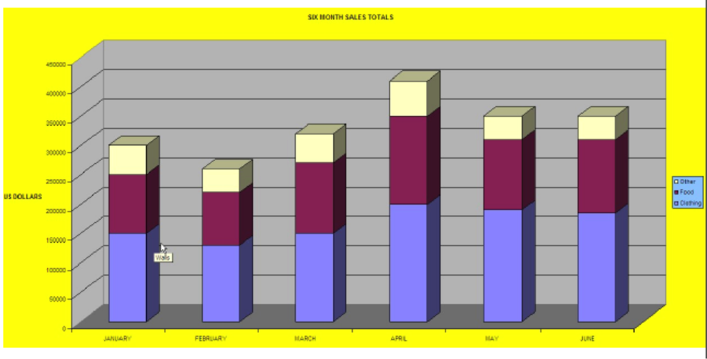
Much better graph
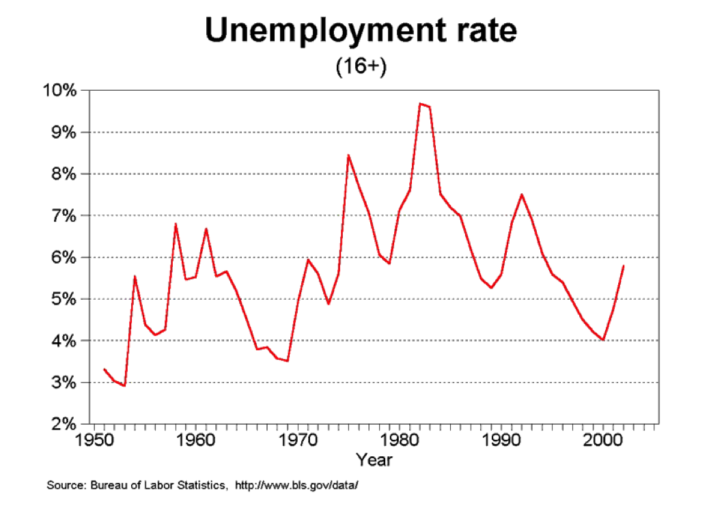
Univariate graphics
GOAL: To learn how to graph a single continuous and categorical variable. In particular:
- Graph a continuous variable using a histogram
- Graph a categorical variable using a bar graph
Our first dataset
- Time Magazine Public School Poll
- Based on survey of 1,000 adults in U.S.
- Conducted in August 2010
- Questions regarding feelings about parental involvement, teachers union, current potential for reform
- Open Stata and call up the datafile for today
Single continuous variable
Example: Histogram
- Stata assumes you are working with continuous data
- Very simple syntax:
hist varname
- Put a comma after your varname and start adding options
bin(#): change the number of bars that the graph displaysnormal: overlay normal curveaddlabels: add actual values to bars
Histogram options
- To change the numeric depiction of your data add these options after the comma
- Choose one:
density,fraction,frequency,percent
- Choose one:
- Be sure to properly describe your histogram:
title("insert name of graph")subtitle("insert subtitle of graph")note("insert note to appear at bottom of graph")caption("insert caption to appear below notes")
Histogram example

Axis titles & labels
- Axis title options (default is variable label):
xtitle("insert x axis name")ytitle("insert y axis name")
- Don’t want axis titles?
xtitle("")ytitle("")
- Add labels to X or Y axis:
xlabel("insert x axis label")ylabel("insert y axis label")
- Tell Stata how to scale each axis
xlabel("start\#(increment)end\#")xlabel(0(5)100)This would label x-axis from 0-100 in increments of 5
Axis labels example
hist F1, bin(10) percent title("TITLE") subtitle("SUBTITLE") ///
caption("CAPTION") note("NOTES") ///
xtitle("Here's your x-axis title") ///
ytitle("here's your y-axis title")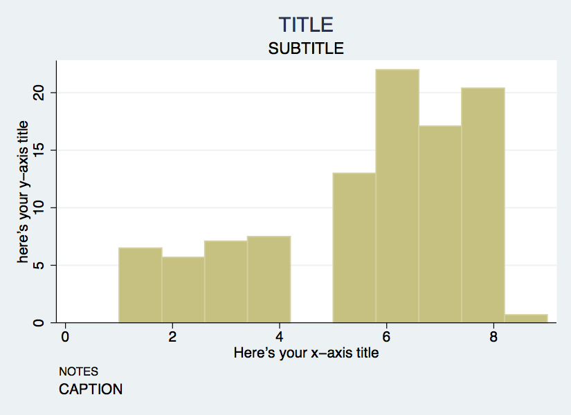
Single categorical variable
- We can also use the
histcommand for bar graphs- Simply specify the option
discrete
- Simply specify the option
- Stata will produce one bar for each level (i.e. category) of variable
- Use
xlabelcommand to insert names of individual categories
hist F4, title("Racial breakdown of Time Poll Sample") xtitle("Race") ///
ytitle("Percent") xlabel(1 "White" 2 "Black" 3 "Asian" 4 "Hispanic" ///
5 "Other") discrete percent addlabels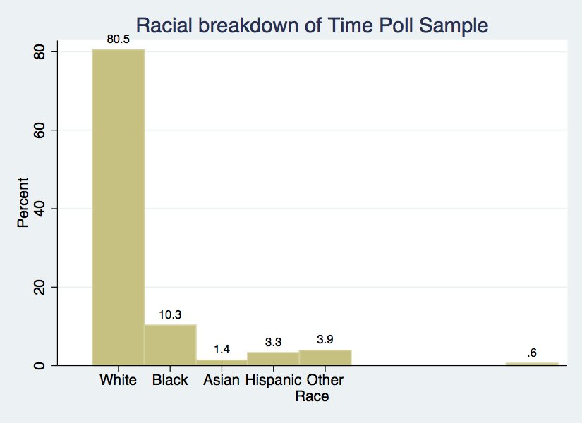
Exercise 0
Histograms & bar graphs
- Open the datafile,
NatNeighCrimeStudy.dta.
- Create a histogram of the tract-level poverty rate (
T_POVRTY).
- Insert the normal curve over the histogram.
- Change the numeric representation on the Y-axis to
percent.
- Add appropriate titles to the overall graph and the x axis and y axis. Also, add a note that states the source of this data.
- Open the datafile,
TimePollPubSchools.dta.
- Create a histogram of the question, “What grade would you give your child’s school†(
Q11). Be sure to tell Stata that this is a categorical variable.
- Format this graph so that the axes have proper titles and labels. Also, add an appropriate title to the overall graph. Add a note stating the source of the data.
Click for Exercise 0 Solution
// 1. Open the datafile, `NatNeighCrimeStudy.dta`.
use NatNeighCrimeStudy.dta, clear
// 2. Create a histogram of the tract-level poverty rate (`T_POVRTY`).
hist T_POVRTY
// 3. Insert the normal curve over the histogram.
hist T_POVRTY, normal
// 4. Change the numeric representation on the Y-axis to `percent`.
hist T_POVRTY, normal percent
// 5. Add appropriate titles to the overall graph and the x axis and y axis. Also, add a note that states the source of this data.
hist T_POVRTY, normal percent title("Poverty Rate Distribution Among Study Participants") xtitle("Poverty Rate") ytitle("Percent") note("Notes: Results are based on raw data")
// 6. Open the datafile, `TimePollPubSchools.dta`.
use TimePollPubSchools.dta, clear
// 7. Create a histogram of the question, "What grade would you give your child's school" (`Q11`). Be sure to tell Stata that this is a categorical variable.
hist Q11, discrete
// 8. Format this graph so that the axes have proper titles and labels. Also, add an appropriate title to the overall graph. Add a note stating the source of the data.
hist Q11, title("School grading breakdown of Time Poll Sample") xtitle("Grades") ytitle("Percent") xlabel(1 "A" 2 "B" 3 "C" 4 "D" 5 "F") note("Notes: Data is based on a survey of 1000 adults in U.S. conducted in 2010")Bivariate graphics
GOAL: To learn how to produce two-way bivariate graphs. In particular, to learn:
- The
twowaycommand - The
twowaytitleoptions - The
twowaysymboloptions - How to overlay
twowaygraphs
Next dataset
- National Neighborhood Crime Study (NNCS)
- N=9593 census tracts in 2000
- Explore sources of variation in crime for communities in the United States
- Tract-level data: crime, social disorganization, disadvantage, socioeconomic inequality
- City-level data: labor market, socioeconomic inequality, population change
The twoway family
twowayis basic Stata command for all two-way graphs- Use
twowayanytime you want to make comparisons among variables - Can be used to combine graphs (i.e., overlay one graph with another)
- e.g., insert line of best fit over a scatter plot
- Some basic examples:
use NatNeighCrimeStudy.dta, clear
twoway scatter T_PERCAP T_VIOLNT
twoway dropline T_PERCAP T_VIOLNT
twoway lfitci T_PERCAP T_VIOLNTTwoway & the by statement
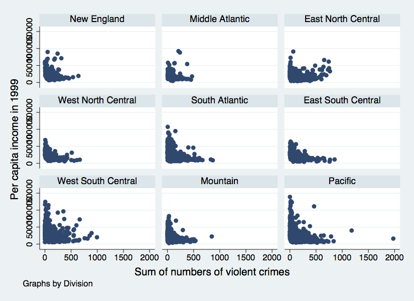
Twoway title options
- Same title options as with histogram
title("insert name of graph")subtitle("insert subtitle of graph")note("insert note to appear at bottom of graph")caption("insert caption to appear below notes")
Twoway title options example
twoway scatter T_PERCAP T_VIOLNT, ///
title("Comparison of Per Capita Income" ///
"and Violent Crime Rate at Tract level") ///
xtitle("Violent Crime Rate") ytitle("Per Capita Income") ///
note("Source: National Neighborhood Crime Study 2000")Twoway symbol options
- A variety of symbol shapes are available: use
palette symbolpaletteto see them andmsymbol()to set them

Twoway symbol options example
twoway scatter T_PERCAP T_VIOLNT, ///
title("Comparison of Per Capita Income" ///
"and Violent Crime Rate at Tract level") ///
xtitle("Violent Crime Rate") ytitle("Per Capita Income") ///
note("Source: National Neighborhood Crime Study 2000") ///
msymbol(Sh) mcolor("red")
Overlaying twoway graphs
- Very simple to combine multiple graphs by just putting each graph command in parentheses
twoway (scatter var1 var2) (lfit var1 var2)
- Add individual options to each graph within the parentheses
- Add overall graph options as usual following the comma
twoway (scatter var1 var2) (lfit var1 var2), options
Overlaying points & lines
twoway (scatter T_PERCAP T_VIOLNT) ///
(lfit T_PERCAP T_VIOLNT), ///
title("Comparison of Per Capita Income" ///
"and Violent Crime Rate at Tract level") ///
xtitle("Violent Crime Rate") ytitle("Per Capita Income") ///
note("Source: National Neighborhood Crime Study 2000")Overlaying points & labels
Twoway line graphs
- Line graphs helpful for a variety of data
- Especially any type of time series data
- We will use data on US life expectancy from 1900-1999
webuse uslifeexp, clear
webuse uslifeexp, clear
twoway (line le_wm year, mcolor("red")) ///
(line le_bm year, mcolor("green"))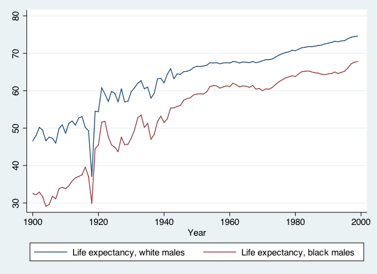
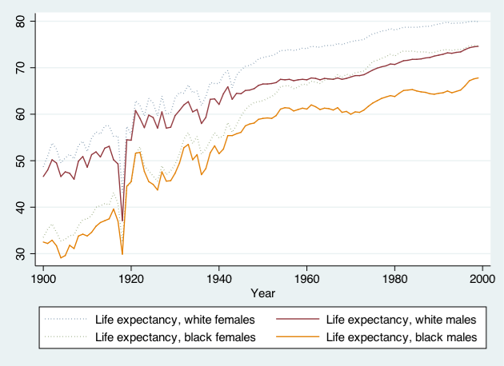

Exercise 1
The twoway family
- Open the datafile,
NatNeighCrimeStudy.dta.
- Create a basic twoway scatterplot that compares the city unemployment rate (
C_UNEMP) to the percent secondary sector low-wage jobs (C_SSLOW)
- Generate the same scatterplot, but this time, divide the plot by the dummy variable indicating whether the city is located in the south or not (
C_SOUTH)
- Change the color of the symbol that you use in this scatter plot
- Change the type of symbol you use to a marker of your choice
- Notice in your scatterplot that is broken down by
C_SOUTHthat there is an outlier in the upper right hand corner of the “Not South†graph. Add the city name label to this marker.
Click for Exercise 1 Solution
// 1. Open the datafile, `NatNeighCrimeStudy.dta`.
use NatNeighCrimeStudy.dta, clear
// 2. Create a basic twoway scatterplot that compares the city unemployment rate (`C_UNEMP`) to the percent secondary sector low-wage jobs (`C_SSLOW`)
twoway scatter C_UNEMP C_SSLOW
// 3. Generate the same scatterplot, but this time, divide the plot by the dummy variable indicating whether the city is located in the south or not (`C_SOUTH`)
twoway scatter C_UNEMP C_SSLOW, by(C_SOUTH)
// 4. Change the color of the symbol that you use in this scatter plot
twoway scatter C_UNEMP C_SSLOW, by(C_SOUTH) mcolor("orange")
// 5. Change the type of symbol you use to a marker of your choice
twoway scatter C_UNEMP C_SSLOW, by(C_SOUTH) mcolor("orange") msymbol(diamond)
// 6. Notice in your scatterplot that is broken down by `C_SOUTH` that there is an outlier in the upper right hand corner of the "Not South" graph. Add the city name label to this marker.
twoway scatter C_UNEMP C_SSLOW, by(C_SOUTH) if C_UNEMP>25 mcolor("orange") msymbol(diamond) mlabel(CITY)
twoway (scatter C_UNEMP C_SSLOW if T_UNEMP>15 & C_SSLOW>25, mlabel(CITY) by(C_SOUTH)) (scatter C_UNEMP C_SSLOW, by(C_SOUTH))Exporting graphs
GOAL: To learn how to export graphs in Stata.
- From Stata, right click on image and select “save as†or try syntax:
graph export myfig.esp, replace
- In Microsoft Word: insert -> picture -> from file
- Or, right click on graph in Stata and copy and paste into MS Word
Wrap-up
Feedback
These workshops are a work in progress, please provide any feedback to: help@iq.harvard.edu
Resources
- IQSS
- Workshops: https://www.iq.harvard.edu/data-science-services/workshop-materials
- Data Science Services: https://www.iq.harvard.edu/data-science-services
- Research Computing Environment: https://iqss.github.io/dss-rce/
- HBS
- Research Computing Services workshops: https://training.rcs.hbs.org/workshops
- Other HBS RCS resources: https://training.rcs.hbs.org/workshop-materials
- RCS consulting email: mailto:research@hbs.edu
- Stata
- UCLA website: http://www.ats.ucla.edu/stat/Stata/
- Stata website: http://www.stata.com/help.cgi?contents
- Email list: http://www.stata.com/statalist/